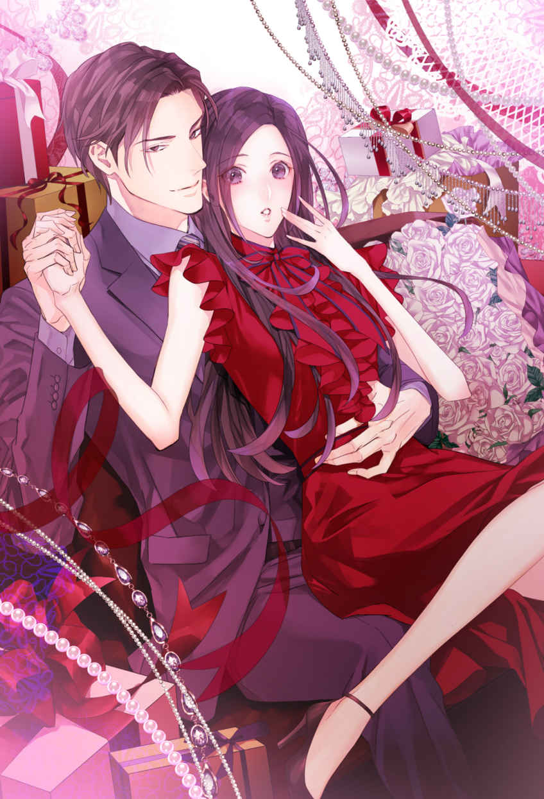
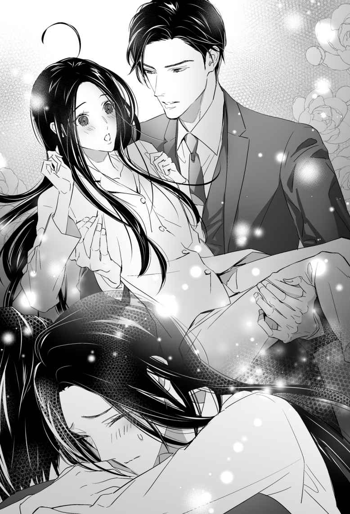
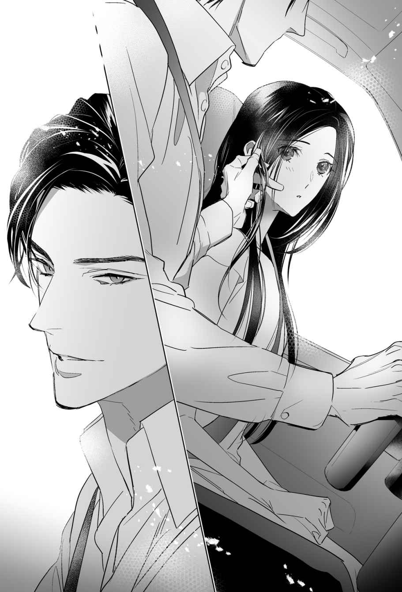
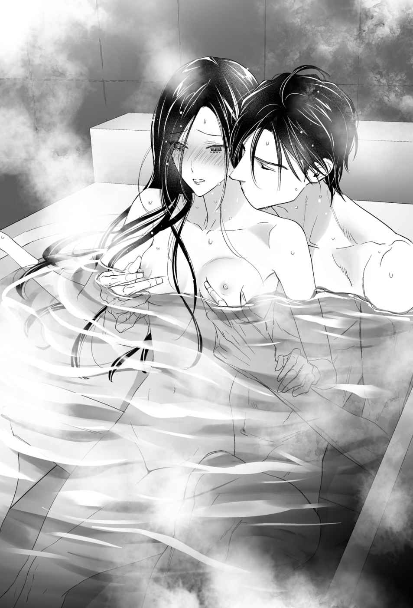
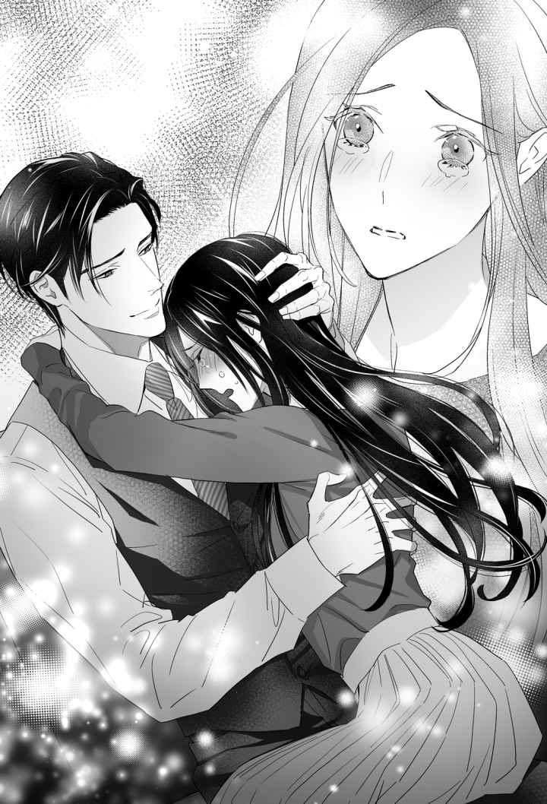

| 【全1-6セット】暴君社長はノラ猫を溺愛する【イラスト付】 (チュールキス) | |
| 柊あまる | |
| 株式会社ジュリアンパブリッシング (2019) | |

この作品はフィクションです。
実際の人物・団体・事件などに一切関係ありません。
第１章 暴君、ノラ猫を拾う
ある春の日の夕方。都心にある巨大な繁華街のスクランブル交差点。
その時の私は、とても急いでいた。
ようやく迎えた初出勤の日。
仕事でなければ決して身に着けない、ぴっちりタイトなスカートに７センチのピンヒールは走りにくいこと、この上ない。
（支度に時間かけ過ぎちゃった）
それだけじゃない。素顔が分かりにくいよう厚くした化粧に、纏 わりつく違和感だらけのストッキング。
そのすべてが、私には慣れないものばかり――
日が落ちて視界が悪くなるにつれ、街は溢れんばかりの人々で埋め尽くされていく。
「きゃっ！」
交差点を渡る途中で、ピンヒールをアスファルトの溝に引っかけた。
急に足を取られてバランスを崩し、私は心の中で舌打ちする。
（もうっ！ 急いでるのに！）
――点滅する信号。
簡単に取れると思ったサンダルのかかとは引っかかったままだ。
懸命に足をバタつかせるのに動けない。背中にじっとりした汗が浮き、焦りがいや増していく。
（やだ、どうしよう......）
歩行者信号が赤に変わった。
こうなっては、色々構っていられない。
私は、しゃがんでサンダルのストラップを外すと、まず足を自由にした。ヒールが溝に挟まった状態のサンダルを手で掴み、力任せに引っ張る。
ヒールは意外と簡単に抜け、私はそれを手に持ったまま立ち上がり、横断歩道を一目散に逆走した。
日が沈む直前の、宵闇 が迫る時刻。
目の前にカッと光が差し、甲高いブレーキ音に身体が竦 んだ。その直後、強い衝撃が全身に走る。
そして無音――
私はその時、黒いワンピースを着ていた。
後から聞いた話によれば、運転手は歩行者がいないのをちゃんと確認してから左折したのに、私が急に目の前に現れたのだという。
――そう、私は18 年間生きてきて、初めて車に撥 ねられたのだ。
＊
目を覚ましたら、懐かしい匂いがした。
高校時代、私は休み時間にしょっちゅう保健室のベッドにもぐり込んでいた。
教室には自分の居場所なんか、どこにもない気がして――
独身の保健教諭は、隣町の高校から異動してきたイケメンの体育教師を目当てに、休み時間の間はずっと職員室に入り浸っていた。だから勝手に入り込むのは、わりと容易だったのだ。
もし見つかれば当然追い出される。そんな時限付きの隠れ場所。
誰かが入ってくる気配にじっと耳を澄ませながら、誰にも見つからないよう身体を小さく丸め、息を殺した。
嗅ぎ慣れた消毒液の匂いがして、条件反射で身体を丸めようとした途端、足に激痛が走った。
「いっ......！」
（痛い痛い痛いっ!! なにこれ......なんで？）
ハンパない痛み。左半身が引きつれ、特に腰から腿までが、まるで火に焼かれているようだ。
「うっぐ......っ」
なんとかこれ以上悪化しないように、少しでも痛みを逃がそうとして、全身が緊張に固まる。新たな痛みに対する恐怖で、身動きもできない。
「はっ、はぁっ、くっ......」
短く浅い呼吸に、冷や汗が溢れ出る。
「目が覚めたのか」
ふいに足下から、低く色艶のある男性の声が響いた。
聞き覚えのない声に恐怖を感じ、反射的に身構える。その拍子に再び左半身が布団に擦れ、激痛が走った。
「うぁっ！」
「痛むのか。もう少し我慢しろ。今、看護師が来る」
（看護師......？ ここ、病院？）
痛みに呻 き、朦朧 とする意識の中で、その人の声だけはクリアに耳へ届いた。
目をうっすらと開け、白い天井とベッドサイドに立つ人影を視界に捉える。
焦点を合わせて見れば、スラリとしたスーツ姿の男性が一人だけ、そこにいた。
やけに整った、少しキツい印象を与えるその顔に、見覚えはない。
「あんた、誰......」
「どうされました？」
その時、部屋に飛び込んできた白衣の女性に質問を遮 られる。
「もう麻酔が切れる時間ですから、痛むでしょう。先生に鎮痛剤増やしてもらえるか確認しますね。あなた、喘息とかの持病はあります？」
「......ない、......ぐぅっ！」
首を振ろうとして、またもや激痛が走った。
「お名前をお聞きしていいかしら？ あなた交通事故でここに運ばれたのよ。覚えている？」
痛みから私の気を逸らそうとしているのか、単に職務上必要だからなのか。看護師は口元に笑みを浮かべつつも、真剣な目で話しかけてくる。
「名前、は......木暮 、ミキ。木に日が暮れるで、ミキはカタカナ」
「木暮さんね。生年月日は？」
〝生年月日〟――
私は自嘲し、顔を歪めた。
「さあ......よくわからない。捨てられて施設で育ったから。でも戸籍上の歳は18 」
看護師の女性は戸惑いを見せ、その後ろに立っていた見目の良いスーツ男も、揃って眉根を寄せた。
「ごめん。私......家もお金もない。18 になったから三日前に施設を出されて、住み込みで働くつもりだったの。その店に向かう途中で......こうなっちゃった」
やっぱり私って、とことんツイてない。
せっかく入った高校も、傷害事件を起こして中退した。
いつも一人でいたから、簡単にヤレるとでも思ったのか、校内で同級生数人に輪姦されそうになったのだ。無我夢中でポケットに入れていたシャーペンを振りまわしたら、相手の目元を傷つけてしまい、いつの間にか血が大量に流れていた。
それを見てビビったあいつらが大騒ぎして、強姦そのものは未遂に終わった。
でもしばらく休学し、気付いたら、なぜか私は高校を退学させられていたのだ。
理由は相手に傷を負わせたこと――
あいつらがどうなったのかは、何も知らない。相手の怪我がどうなったのかも。
おかげで私は、中卒の施設出身者。
身寄りも学歴も資格もなく、まともな職になんか就けるわけがない。
でも18 で独り立ちしなきゃいけないのは、法律とやらで決まってる。
同じ施設を出た先輩の部屋に数日世話になった。でも先輩は、明らかに迷惑そうな顔。
勧められた仕事は、住み込みの部屋付き風俗店だった。表向きはキャバクラでも本番がないだけで、あとはなんでもアリの店だ。
（出勤初日に事故とか――）
手持ちの現金はあとわずか。店に出るための衣装と化粧品代に使い、あとはひと月分の食費くらいしか残ってない。
「治療費とか出せないから。......悪いけど、これ外して」
そう言って腕に刺さった点滴の針を見る。
ちょっと動くだけで全身に激痛が走った。でも、ここに寝てるだけで借金が嵩 んでいくなんて、考えただけで気分が悪い。
（身体を売るのだけは嫌だ）
私には、それしか残っていないのに。それだけは、最後の最後まで諦めたくない。
でも、高級クラブやキャバクラでも、上客とは寝ないとお金にならないと聞いていた。
なによりまず、客が付くまでが大変なのだ。着飾って営業かけて、自分にそこそこ投資できなきゃ、客の目にも留まらない。
中卒の自分が、この御時世に金を持ってる客とお喋りだけして気に入ってもらうだなんて、どう考えてもあり得なかった。
（やっぱり風俗しかないのかな）
そう思っていたら、あの店を紹介してもらえたのだ。実態は風俗でも「本番はない」と聞かされ、入店を決めた。
「店、行かなきゃ......」
痛みに呻きながら呟くと、看護師は困った顔をし、スーツ男はいかにも呆れたようにため息を吐いた。
「治療費の心配はするな。店が心配ならそれも手配しておく。お前のケガは酷い。まともに動くことも無理な状態だ。まずは治すことだけ考えろ」
――本当にうっとりするような、いい声。
声だけじゃなく見た目もとびきりだ。さぞかしモテることだろう。
こんなときに、そんなことを考えて私は笑った。痛みに歪んで、とても笑ったようには見えなかっただろうけれど。
「誰だか知らないけど、お兄さんが出してくれんの？ ......じゃあ、お願いしよっかな」
意識が遠のいていく。
痛みの限界がきたせいなのか、それとも安心して気が抜けたのか――
「おいっ......！」
「木暮さん？ あ、先生っ」
複数の人の気配とざわめきを感じながら、私は再び意識を手放した。
＊
目を覚ましたとき、病室にいたのは艶声 の美形男ではなく、黒縁メガネの無愛想男だった。
「誰？」
前回目覚めたときに学習した私は、極力身体を動かさないよう、慎重に視線だけを彼に向ける。
「沼 田 と申します。木暮ミキさん。この度は私どもの雇った運転手が、大変ご迷惑をおかけいたしました。慎んでお詫び申し上げます」
きっかり45 度のお辞儀をした無愛想男――沼田さんは、ベッドの端にススッと寄ってきた。
部屋の隅にいられると、目を向けるのがしんどかったから、ありがたい。
彼はキチンとし過ぎなくらいカッチリしたスーツに身を包み、いかにも堅物な印象の黒縁メガネをかけている。言葉遣いのわりに、まだ若い印象だった。
「沼田さんて、年いくつ？」
聞くと彼は、ほんの少しだけ間を置いてから答えた。
「......26 ですが」
表情は変わらないけど、言葉尻には戸惑いが感じられる。
「まだ若いのに、おっさんみたいなしゃべり方だね。運転手の人は......捕まった？」
沼田さんが、今度はハッキリ困惑の表情を浮かべた。
「死なせた訳ではありませんので。今は自宅にいると思いますよ」
「その人、クビ？」
「え？」
怪訝 な顔でこちらを見る彼に、私は苦笑いしてみせる。
「悪いことしちゃった。横断歩道の途中でピンヒールが引っかかったの。しゃがんでたし、もう暗かったから、その人のせいじゃないよ」
「木暮さん......」
「ミキでいいよ。あと敬語も止めて。年上の人に使われてもむず痒いから」
呆気に取られている沼田さんに、私は頼んだ。
「あの人に伝えて。できれば運転手さんのクビを取り消して欲しいって。私のせいで職を失ったとか、寝覚め悪いもん」
「......あの人？」
「キレイでちょっとだけ恐い顔した男の人。最初に目が覚めたとき、ここにいたでしょ」
沼田さんは目を丸くする。
「なぜあの方に？」
私は笑った。
「沼田さんの雇い主って、あの人でしょ。治療費出してくれるって言ってたし。妙にエラそうだったしさ」
彼は一瞬呆けた顔をした後、思わずといった感じでフッと笑った。
着替えや洗面用具、箸や湯呑みにテレビカード。そして小銭まで。
およそ入院中に必要だと思われるものは全て、沼田さんが置いていってくれた。
（なんて気が利く人なんだろ）
そんな彼が従うボスなら、あの人もさぞかし有能な人なんだろう。――美形に美声で有能なお金持ち。
（いいな......天から二物も三物も与えられた人は）
車に撥ねられたのはいただけないけど、おかげで風俗デビューが少し延びたし、ここにいる間はお金の心配なくご飯が食べられる。
正直、ものすごくありがたかった。
後で沼田さんから聞いた話によれば、あの店は本番なしと謳 いながらも、実際はウリをメインにしたデートクラブだったらしい。
（遅かれ早かれ、本番をやらされてた）
目をつむり、小さくため息を漏らす。
私みたいな女が一人で生きていく方法は、やっぱり風俗しかないんだろうか――
「やだなぁ......」
「何がだ？ 何か足りないものでもあったか」
独り言のつもりだったのに、頭上から返事が降ってきて驚いた。低く艶やかな美声。
「わっ！ って、痛ぁっ！」
反射的に身動きした私は、またもや激痛に叫んだ。
「おい」
少し焦った様子で、美声の主はベッドサイドにあるナースコールを押す。
「落ち着け。何もしない」
「違っ......そんな、ううっ......」
そんなこと思ってない。単に驚いただけだ。
「力を抜け。大丈夫だから」
「だって......痛い......」
あまりの痛みに泣き言を吐いたら、美声の主は大きな手で私の頭を撫でた。
「大丈夫だ。ゆっくり息を吐いて......力を抜け」
甘い声――
予想外に柔らかい彼の声音に、少しだけドキドキした。
「んんっ」
私は痛みに呻きながら、言われたとおり慎重に力を抜いてみる。
「ふぅ......っん、痛っ......痛い！ やっぱり痛い！」
するとそこで、突如カーテンがザッと開かれ、看護師が勢いよく飛び込んできた。
「病室で一体何をしてるんですかっ！」
いきなり怒られ、頭を支えてくれていた彼と私は驚いて固まる。
「何って......」
「なんだ？」
その看護師は私たちを見て目をパチパチ瞬くと「あらやだ......勘違い？」と呟き、なんだか気まずそうに目を逸らした。
後からナースコールで呼ばれた別の看護師が来たのに気付き、彼女は入れ替わりでそそくさと去っていく。
「......なんだったんだ、今のは」
彼は眉間にシワを寄せ、ドアをジッと睨みつけた。
「さあ？」
「あの、どうされました？」
後から来た看護師さんに訊ねられたけど、この場にいる全員が、何がなんだか分からないという顔をしていた。
頓服 の鎮痛剤を出してもらい、落ち着いてから私は彼に話しかける。
「あのさ」
彼はすぐに気付き、こちらを振り返った。
「なんだ？」
「名前教えて」
沼田さんも、彼が自分の上司だということ以外、何も教えてくれなかった。
「............貴 裕 」
たーっぷり間を置いてから、彼はムスッとした顔で答える。
「たかひろ？ 苗字は？」
「苗字なんかどうでもいいだろ。好きに呼べ」
横柄な物言いに、せっかくの美声がもったいないなと感じてしまう。
――それにしても、苗字がどうでもいいって、どういうことだろう？
「んじゃ、貴裕。治療費出してくれてありがと。マジ助かったよ」
そう告げると、彼は不機嫌そうに顔をしかめた。
「お前、なんでタメ口......」
「別にいいじゃん。貴裕もミキって呼んでいいよ」
彼はこれ見よがしに大きく息を吐き、こめかみを揉んだ。
（頭痛持ち？）
たしかに彼は、いつもストレスが溜まっていそうな顔をしている。
「ミキ。お前の足だが......傷が塞がっても少し痕が残るし、普通に動かすにはリハビリが必要だそうだ」
わりと素直に「ミキ」って呼んでくれたのはいいけれど。その後の言葉が衝撃だった。
「傷痕？ しかもリハビリ!? 」
（サイアク......風俗で働くのに、傷痕とか引きずった足ってマズくない？）
リハビリはおそらく退院した後になる。ここを出たらすぐにでも働かなきゃいけないのに。
（どうしよう、生きていけない）
私の表情から不安が伝わったのか、貴裕がまた大きな手で私の頭を撫でた。
「リハビリ代とその間の生活費は俺が払う。住み込みの仕事も探してやるから」
「は......？ なんで仕事？」
意味が分からず首を傾げると、貴裕は苦笑を浮かべた。
「お前の勤め先は潰れたぞ。事故の直後、警察のガサ入れが入ったそうだ」
「えっ？」
（じゃあ私、あの店で働かなくてもいいってこと？）
お金のこととか、この先の生活は不安だったけど、それ以上にホッとしてしまった。――やっぱり私、身体を売るのだけは嫌だ。
「貴裕！」
顔を上げ、勢いよく名前を呼んだら、すぐ隣にいた彼はうるさそうに顔をしかめた。
「なんだ」
「代わりに仕事探してくれんなら、ウリだけは無い店にして！」
彼は眉間にますます深いシワを寄せる。
「ウリ？」
「だって処女は私の唯一の資産だもん。いつか失くすにしても、できるだけ納得した上でのほうがいいじゃん」
貴裕は呆気に取られた表情になって、私を見つめた。
「お前、処女なのか？」
「そうだよ。何度か危ない目に遭ったけど、今んとこね」
へへっと自慢げに笑ってみせると、呆然としていた彼は真面目な顔をして言った。
「それで風俗って......お前、バカなのか？」
私はムッとして、力いっぱい彼を睨みつける。
「どうせバカですよ。中卒で働けるとこなんか限られてんだから、仕方ないじゃん！」
すると彼も怖い顔をして、私を睨み返した。
「なんで高校行かなかった」
「行ったよ！ ......中退したけど」
「なんで」
「言いたくない」
輪姦されそうになって相手を傷つけた、なんて――
黙り込む私を見て、彼は小さくため息を吐いた。
「まぁいい。仕事の希望は分かった。なんとかする。だから心配せず身体を早く治せ」
そう言って立ち上がり、貴裕は一度ドアのほうを向いてから、こちらを振り返った。
「困ったことがあれば、沼田に言え。よほどのことがなければ、対処する」
私の返事を待たずに病室を出て行った彼の後ろ姿を見送り、私はすぐに後悔した。
お礼は初めに言ったけど、もう一度言えば良かった。
あの人はなんでこんな親切にしてくれるんだろう？
いくら事故で怪我させたにしても、普通こんなに面倒みてくれるもの？
「今度、沼田さんが来たら聞いてみようかな......」
私は病室の白い天井をぼんやり見上げて呟いた。
＊＊＊
「木暮ミキ。歳は18 。養護施設前に遺棄された当時はまだ赤ん坊で、保護者は不明のまま。施設預かりになり、事故の三日前にそこを退所しています」
俺より五つ年下の秘書――沼田が、黒縁のメガネを指先で軽く持ち上げながら、調書を読み上げた。
病院のロビーの人目につきにくい一角で、俺と沼田は声を抑えながら話す。
「本人が言っていた通りか。施設を出た後に住んでいた場所は？」
「同じ施設を出た女性のアパートに身を寄せていました。ですがそこも出て、あの日から住み込みで例の風俗店に勤める予定だったようです」
「ガサ入れが入ったという店だな」
事前に話は聞いていたものの、つい顔をしかめてしまう。
木暮ミキ――俺の乗っていた車の前に、突然現れた女。
運転していたのは雇いの運転手だが、責任は俺にある。放置するわけにいかない。
だが、事故の相手がよりによって施設育ちのホームレスとは......。
すでに仕事はなく、住む場所も同時に失っている。
これからかかる入院費に手術代にリハビリ。それ以外にも新しい住み家と勤め先を用意しなければならない。
金は別にいいが、俺がそんな女の面倒をみたことが周りに知られたら、とても面倒なことになる。
「すべてを秘密裏に進めろ。本人にもな。寝てると思って病室に行ったら、顔を見られた。なるべく素性は知られずに話をつけたい」
沼田は承知しているとばかりに頷いた。
「運転手はどうなさいますか？」
聞かれて立ち上がり、沼田の能面みたいな顔を見て答えた。
「クビに決まっているだろう。わざわざ聞くな」
すると沼田は無表情のまま肩を竦めて言った。
「それは困りましたね。ミキさんから、運転手はクビにしないで欲しいと言われています」
「あ？」
沼田はメガネのブリッジを指で押し上げながら、頷いた。
「事故の過失は自分にあるという意味のことをおっしゃっていました。少なくとも彼女の場合、その辺りで揉める心配はなさそうですが」
沼田にしてはいつになく甘い判断だ。
いつもだったら、相手がこちらの足元を見て必要以上の金を引き出そうとする可能性を、もっと警戒するはずだった。
「......ならいい。運転手をどうするかはお前に任せる」
何かあっても自分で対処できるだろうと思い判断を丸投げしたら、沼田は「承知しました」と言って頷いた。
＊＊＊
「ねぇ、沼っち」
呼びかけると、無愛想メガネこと沼田さんは、眉間にシワを寄せて振り返った。
「なんですか」
何度注意されても、私が「沼っち」って呼ぶのを止めないから、彼はようやく諦めたようだ。いかにも渋々受け入れているといった感じではあるけれど。
「貴裕って、仕事忙しいんでしょ？」
「......そうですね」
沼田さんは、私が貴裕のことを呼び捨てにするのも、あまりよく思っていないみたいだ。でも私は気にしない。
「貴裕さ、自分が忙しいから代わりに沼っちをここに来させてるんでしょ。なのになんで自分も毎日顔出してんの？」
そう尋ねたら、沼田さんは黒縁メガネの奥で、眉をピクリと動かした。
「それは......最近、時間に余裕が出てきたからですかね」
言いながら、目が軽く泳いでいる。
私はリクライニングベッドの上で、だいぶ自由に動かせるようになった上半身を、横にポスンと倒した。
「私は嬉しいけどね。寝てるだけじゃヒマだし。沼っちが帰っちゃうと、晩ごはんまでの時間が長くて」
すると沼田さんは、すかさず顔を上げた。
「差し入れは何がいいですか？ ゲームとか漫画......あ、それは携帯があればいいか。雑誌なんかはどうです？」
私は首を横にプルプル振った。
「携帯はプリペイドなんだけど、もうチャージ切れちゃってる。それに私、ゲームとかあんまやったことないんだ。漫画も好きじゃないし」
彼は固い表情のまま訊ねる。
「これまで、空いた時間には何をされてたんですか？」
聞かれて、私は施設にいた頃のことをぼんやりと思い出した。――あそこを出たのは、つい最近のことなのに、もう遠い昔みたいだ。
「施設にいると年上から色々手伝い押し付けられたり、構われたりすんのがイヤでさ。よく行ったのは図書館かな」
沼田さんは、意外そうに目を見開く。
「図書館」
「うん。適当に端っこから本読んだりしてたよ。どこの図書館行っても郷土資料室ってあるじゃん。あれその地域の個性が出て、意外と面白いから好き」
すると彼は考え込むように眉根を寄せ、メガネをクイッと持ち上げた。
「では、まだミキさんが読んでいなさそうな新刊を何冊か、お持ちしましょう」
「ありがと。沼っちさ、私に敬語使うの、そろそろ止めない？」
やっぱりむず痒く思いそう言ったら、彼はメガネの奥をキラリと光らせた。
「では、沼っちと呼ぶのも止めていただきたく......」
（あ、やっぱり諦めてなかった）
私はニッコリ笑って、こう告げた。
「残念ながら、交渉決裂だね」
＊＊＊
我がＫＦＳコーポレーションの本社が入っている品 川 のオフィスビルは、地下２階地上20 階建ての複合ビルで、そのうちの15 階と16 階を事務所として専有している。
社長室は16 階の一番奥。
周囲を似たような高層ビルに囲まれているせいで、港が辛うじて望めるのは、ここと真下に設置した会議室だけだった。
丸 の内 にも支社があるが、そこは営業の拠点で、社長である自分が顔を出すことは滅多にない。
「社長。ミキさんのところに、毎日顔を出されているそうですね」
コーヒーカップを口元に持っていったタイミングで、沼田がそう口にした。
「ぐっ......」
飲み込むつもりが気管に入りそうになり、たまらずゴフッと咳き込む。
「なんだ、急に」
睨みつけたら、沼田はいつものしれっとした表情で返した。
「急ではありません。ミキさんに関する報告をしていたのですから。彼女から、社長が毎日病室に顔を出されていると聞きました」
わざわざ時間をずらしていたのに、こんなに早く気付かれるとは思っていなかった。
俺は誤魔化すようにゴホゴホと咳をし、カップを持っていないほうの手で、こめかみを揉んだ。
「ちゃんとおとなしくしているか、確かめているだけだ」
「社長はここ連日、会食続きで予定が詰まっていたと記憶していますが......」
沼田がわざとらしく手帳を確認する。
「仕事に支障はない」
そう強く言い切り、椅子ごと背を向けた。
「彼女、頭の回転が早いというか反射神経がいいので、会話してると面白いですよね」
背後でおかしげに呟かれた言葉に、無言で返す。
ミキは警戒心が取れた途端、人懐っこさを露 にして、顔を合わせるたびにこれでもかと話しかけてくるのだ。多分寂しさもあるのだろう。それに気付いていて無視するわけにはいかない。
すると、沼田は独り言のように続けた。
「見た目もかわいいですし。私もあそこへ通うのはいい気晴らしになります」
「俺もそうなんだろうと言いたいのか？」
低い声で問い詰めたら、今度は沼田がそれに無言を返した。
「ところでミキさんですが、もうだいぶお元気な様子ですね。ヒマを持て余しているようなので、明日は新刊本を数冊差し入れる予定です」
沼田の報告に「そうか」と返したものの、内容が気になった。
（新刊本......）
「ミキは、本が好きなのか？」
半分だけ振り返ると、沼田は無表情のまま頷いた。
「ゲームや漫画は好まないようです。時間のある時は図書館通いをしていたとか。やはり素地はいいと考えられます」
言いながらおもむろに差し出された報告書をめくる。そこには進学した高校の偏差値、当時の成績などが書かれていた。
「これは、かなり優秀なんじゃないか？」
「そうですね。公立ですが地元でも有名な進学校です」
報告書には、退学になった理由もあった。
「傷害......レイプ未遂？」
思わず顔をしかめると、沼田も珍しく眉根を寄せた。
「正確には集団暴行未遂です。抵抗した際に、ミキさんが携帯していたシャープペンシルの先が相手の瞼 を掠って出血。それを刺されたと勘違いした生徒たちが騒ぎ、事件が発覚しました」
息を呑み、呆然と呟く。
「それで、なぜミキが退学に？」
納得いかずに問うと、沼田はますます不機嫌そうな顔をした。こいつがここまで表情を崩すのは、かなり珍しい。
「相手の親が地元の名士で、関係各所に手を回したようです。学校と養護施設に対し、ミキさんの素行の悪さを訴えました。大半は言いがかりですが、事件を公にしたくない学校側と、ミキさんに傷害の前科がつくことを恐れた施設側が、彼女を退学させることで事件を隠ぺいしました」
聞きながらイライラし、報告書を机に放り投げた。
「それを素直に呑んだのか」
「はい。ミキさんではなく施設関係者が、ですが。彼女の自宅謹慎中に、話はすべて進められてしまったようです。施設の人間が誰一人として異議を唱えなかったのかと思うと......」
沼田が悔しげに、拳を握る。
あまりの胸糞悪さに、思わず舌打ちをした。
「社長。ミキさんが退院した後のことですが......予定通り、住み込みの職を探しますか？」
そう聞かれ、俺は沼田の顔をキツく睨んだ。
「言っただろう。わかっていることは、わざわざ聞くな」
沼田はいつもの表情へ戻って頷くと、諸々の準備をするためか、足早に部屋を出て行った。
＊＊＊
私は担当看護師さんに言われ、傷が開かない程度にゆっくり病室の中を歩き回った。
ベッドから下りられるようになり、トイレに一人で行けるようになったのは地味に嬉しい。
点滴台を杖代わりにして、ヨロヨロしながら一歩ずつ歩く。事故で怪我をした左の下半身は痛みがあるだけでなく、なかなか思うように動かなかった。
ちょうど夕飯の配膳が始まった頃、貴裕が病室に顔を出した。
「おい。立って平気なのか？」
入口から美声が響き、私は顔をパッと上げる。
「貴裕！ 見て見て、歩けるようになった！」
はしゃいだら、点滴台が滑ってフラッとバランスを崩した。
「うわっ」
「おいっ......！」
咄嗟 に駆け寄った貴裕の腕に、間一髪で抱きとめられる。彼の胸元で高級なイメージの香りがフワッと香った。
力強い腕に支えられ、違う意味で胸がドキドキしてしまう。
「はは、ごめんね。うっかりした」
誤魔化すように笑って顔を上げたら、貴裕は呆れた顔をして言った。
「病室でまた怪我したら、シャレにならないぞ」
（ああ......やっぱ、キレイな顔）
間近で彼の端整な顔を見て声を聞くと、どうしても落ち着かない気分にさせられる。貴裕はわりと威圧的なタイプだし、だいぶ年上だし、ちょっと恐い雰囲気を持っているけれど。
やっぱり、会社でも偉い立場の人だったりするのだろうか。だからこんな風に、少し緊張するのかも――
「おい、ミキ。聞いてるのか？」
「え、何を？」
ボンヤリしていた私は我に返り、目をパチパチ瞬 いた。
「俺の話だ！ これ以上怪我しないように気を付けろ」
せっかくの美声も、こんな風に怒鳴られたら台無しだ。
私が適当に「はいはい、わかったよ」と答えたら、怒った貴裕にものすごく恐い顔で睨まれてしまった。
（うう......説教ジジイめ）
腕を支えられながら、ゆっくりベッドに戻される。
身体の左側がまともに動かないせいで、座るだけでも結構大変だ。でも貴裕は傷にさわらないよう、上手く手助けしてくれた。
「ありがと」
「ああ。ミキ、お前退院したら、リハビリはうちから通え」
ふいにそんなことを言われて、私は一瞬聞き間違いかと思った。
「......うち？」
（うちって、どこ？）
貴裕は仁王立ちしながら、混乱する私を見下ろして言う。
「うちはうちだ。通いの家政婦がいるし、身体が不自由な間はヘルパーもつける。まともに歩けるようになるまでは、俺と同居だ」
「ど......？ じゃあ〝うち〟って......貴裕の家!? 」
仰天して目を剥く私を、貴裕はまた呆れた顔で見つめた。
私は呆然としたまま、彼の顔を凝視する。
「貴裕って、独身なの？」
そう訊いたら、今度は彼が驚いたのか目を丸くした。
「独身だ。ずっと既婚者だと思ってたのか？」
「そうでもおかしくないとは思ってたよ」
だって貴裕は、とてもキレイな顔をしていて、とてもいい声をしている。背も高いし、お金持ってそうだし、それなりに偉い人みたいだし。
普通の女の人なら、放っておかないんじゃないのかな。
「他に同居人はいない。心配するな」
そう言われ、私は再び目を見張った。
（それって、逆に心配なシチュエーションだと思うけど......）
貴裕は気付いていない。
つまり彼にとって、私は完全にそういう対象じゃないってことだ。
（そりゃそうか）
貴裕みたいな人が、私みたいな何も持たないガキを相手にする訳ない。きっと、そういう相手には困ってない。
彼は純粋に、事故の責任を取ろうとしてるだけなのだ。
（変な心配なんかしたら、笑われる）
私はそれに気付かれないようヘラッと笑ってみせた。
「すごくありがたい話だけど、さすがに悪いよ。住み込みの職探してもらえるだけで充分」
すると貴裕は仁王立ちのまま、不機嫌そうに言い放った。
「それが見つからないから言ってるんだ。身体も満足に動かせなくて、肉体労働に就けると思うのか？」
考えるまでもなく、無理な話だ。私は肩をシュンと落とした。
「それは......無いよね」
「分かったら大人しくうちに来い。リハビリの間の生活費は面倒をみる」
反論は許さないとばかりに強く言い切り、貴裕は私の頭を掴んで髪をクシャクシャにした。
「お前は黙って身体を治すことだけに集中しろ」
まだ仕事が残っていると言って、貴裕は帰った。
その後も、私はボンヤリしている。
彼はなんでこんなに親切にしてくれるんだろう？ 義務、責任、善意......それとも、同情や憐れみ？
（なんでもいい）
今、貴裕に手を放されたら、私は生きていけないと思う。
施設を出たときから、覚悟はしていた。――本当に困ったら、身体を売らざるをえないだろうと。
それは私に残された最後の手段。それも無理なら、いつ野垂れ死んだっておかしくない身だ。
身体が治れば、状況はきっとまた同じ。でもせめてその時までは、素直に甘えさせてもらおう。
私は貴裕に心から感謝し、ベッドの上で「ありがとう」と小さく呟いた。
＊
数日後。
病室の外を一人で出歩けるようになって初めて、ここがものすごく大きな病院だということに気付いた。廊下は広いし、壁も床も天井も綺麗だ。
私の知ってる病院は、古くて薄暗く、そこにいるだけで違う病気にかかりそうなイメージの場所だ。
でもここはまるで違う。クリーム色で明るい壁には、ところどころに絵画やきれいな風景写真が飾ってあり、廊下の案内板には『面会室』『食堂』『ライブラリー』と書かれていた。
「ライブラリー？」
無意識に呟くと、横を通った看護師さんが説明してくれる。
「この階に図書室があるのよ。患者さんなら入れるから行ってみたら？」
（図書室！）
私は頷き、早速そこへ向かうことにした。
ライブラリーの室内は、薄いサーモンピンクの壁に白い天井で統一されていて、柔らかな色合いの部屋には腰の高さの本棚が並び、圧迫感のない空間が広がっていた。
点滴台を引っ張ったままでも中に入れるし、部屋の奥には靴を脱いで上がれる畳のスペースもある。
そこではパジャマの子どもが数人寝転がり絵本を読んでおり、その横でお母さんらしき人も膝の上に本を広げていた。
（こんなスペースがあったんだ）
私は棚を見回しながら、本の品揃えを確認して歩いた。
小さな子向けの絵本や、医療に関する本が多く、あとは一般文芸が大半だ。
高さもある大きな棚を曲がると、小さな丸テーブルと椅子のセットがいくつか置かれた読書スペースが見つかった。壁際には、座面が広く背の低いソファも置かれており、私は適当な本を手にして、そこへ座る。
しばらく本に没頭していたら、ふいに前方から艶のある低い声が響いた。
「ミキ」
驚いて顔を上げたら、そこにはゴージャスでシックなスーツを着た貴裕が立っていた。
「うわ～......」
パステルカラーの明るい図書室と、彼の雰囲気が、あまりにも似合っていない。
彼の存在が、ここでは違和感の塊みたいで、私はプッと笑った。
「なに笑ってんだ。探したぞ」
「だって。この場所似合わないね、貴裕」
彼は顔をしかめ、周囲をくるっと見回した。
「......幼稚園みたいなところだな」
向こうのスペースには、小さな子どもやお母さんたちがいるし、入院棟の上階なので、日当たりが良くとても明るい。
「似合わないはずだね」
ケラケラ笑っていたら貴裕が近づき、ソファに座っていた私の二の腕を掴んだ。
「行くぞ」
「わっ」
強引に連れ出されそうになり、私は慌てて点滴台を引き寄せた。
「待ってよ、貴裕。転んじゃうって」
二の腕を掴まれたまま、彼を見上げる。
貴裕は不機嫌そうな顔で片眉を上げ、歩きながらこっちを振り返った。
「じゃあ抱いていくか？」
「は？ 無理だよ」
（いきなり何言ってんの）
私が怪訝な顔をしたら、貴裕はムッとして言い捨てた。
「お前みたいな鶏ガラ、片手でも余裕だ」
今度は私の方がムカッときて、掴んでいた点滴台を彼のほうに押しやる。
「これどうすんのさ」
貴裕みたいに体格のいい人が、私のことを持ち上げられないとは思わない。
でも年頃の女性に向かって、〝鶏ガラ〟はないんじゃないの！
「どうせ貧相ですよ」
「なんだ、自覚があったのか」
憎らしいことに、貴裕はそう言ってニヤリと笑った。
私はもう18 だし、身長は平均。これ以上は伸びない。
お世辞にも女らしいとは言えない身体つき。出るべきところは全く出てないし、凹凸に乏しい。自分でも女としては残念な部類だと思っている。
お金がなくてマメに切れないから髪だけは長いけれど。でもそれも事故の時、摩擦かなにかで一部がチリチリになっちゃったから、いずれ切らなきゃいけなかった。
（あ～あ......いいとこナシだ）
うつむくと、貴裕が私の頭をそっと撫でて、慰めるように言った。
「事故の直後よりだいぶマシだ。ここの病院食は美味いと評判だぞ。しっかり食べて、もう少し太れよ」
「そうなの！ 本当に美味しいんだよ。必ずデザートついてくるし」
顔を上げたら、貴裕がニヤリと笑う。
「退院したら、もっと美味いもの食べさせてやるから。早く治せ」
「美味しいもの!? 」
途端に私のお腹がぐうぅ～っと鳴り、貴裕も私も目を丸くした。
（えええっ、このタイミングで鳴る？）
恥ずかしくて顔を逸らすと、貴裕は小刻みに肩を震わせ、病室に戻るまで笑いを懸命に堪えていた。
＊
沼田さんは午前中、そして貴裕は夕方。
二人はわざわざ違う時間に病室を訪れるから、一緒にいるところをまだ見たことがない。
沼田さんはここへ来ると、小銭入れと冷蔵庫をチェックし、不足しているものが無いかをひと通り確認する。
彼が満足そうに顔を上げたのを見てから、私はおもむろに話しかけた。
「ね、沼っち。貴裕って会社ではどんな感じ？」
「どんな......そうですねぇ」
黒縁メガネを指で押し上げながら、沼田さんは少しだけ考える素振りを見せた。
「経営者として必要なことをしっかり学ばれてきた方ですし、ご本人も大変仕事熱心です。基本、仕事に関係ないことには見向きもされない方だった、はずなんですが」
「......が？」
沼田さんが意味ありげにこっちを見るから、私は首を捻った。
「社長が毎日こちらへ顔を出されると聞いて、正直驚いています。しかも退院後、ミキさんを自宅に引き取るとは」
そっと沼田さんの表情を窺ったけれど、彼はいつも通り無表情のままだ。
「やっぱり、ずうずうしいよね。甘え過ぎっていうか......」
気まずく思い下を向くと、沼田さんは焦った様子で言った。
「いえいえ。ミキさんは気にしなくていいんですよ。身体を治すまでは当然の権利です。事故の被害者なんですから」
（当然の権利......？）
「そうかなぁ？」
仕事や住む場所、生活費まで面倒みてもらうのは、さすがに甘え過ぎだと思うんだけど。
顔をしかめた私を見て、沼田さんは話を逸らした。
「そうだミキさん、夢はなんですか？ してみたいこととか行ってみたい場所、憧れの職業とか」
「夢......？」
急にそんなことを聞かれて面食らう。
夢なんて、今まで考えたこともなかった。自分が何をしたいかよりも、何だったらできるのか――それしか考える余裕がなかったから。
選べる目の前の選択肢はあまりにも少ない。
生まれてからずっと他人の世話になって暮らしてきたから、与えられるものを受け入れるだけで、自分から何かを選ぶことができないのは当たり前だった。
「わかんない。考えたことないや」
正直に洩らすと、沼田さんはやっぱり無表情のまま、「そうですか」と呟いた。
＊
あれから毎日のように、同じフロアにあるライブラリーに通っている。
リハビリや検査がある日は遅くなるけれど、なければ午前中の早い時間から。
いつ来ても、読書スペースの同じソファは空いていて、まるで私専用の場所みたいだった。
もう退院が間近で点滴も外された私は、足を軽く引きずりながら歩き、ソファに腰かける。
ここの本は患者さんが置いていった寄贈本が大半で、揃えられたものは子ども向けが中心だ。大人が読めるものは、ミステリーなどのエンターテインメント。他にはガンとか病気に関する専門書が多い。
私はなんでもひと通り目を通したくなる性質だけれど、やはり読んでいて面白いと思うのは小説だ。
読んでいくうちに、本の世界がどんどん自分に近付いてきて、いつの間にか時間を忘れて没頭する。
そういう本には、たまにしか出会えないけれど、会えたらとても嬉しい。だから読むのは止められなかった。
夕方近くになって、再び貴裕が本棚の脇に姿を見せた。
「またここか、ミキ」
「貴裕」
彼の他人を威圧する雰囲気は、やっぱりこの空間には馴染 まない。
会社とかオフィス街と呼ばれる街中でなら、違和感なく溶け込むんだろう。そっちでは、私みたいな人間のほうが異質なのだ、きっと。
「行くぞ」
声だけかけ、さっさと背を向ける貴裕の後を、慌てて追いかける。
急に立ち上がり無理をかけたせいか、足の付け根が引きつれて、ガクッと膝が落ちた。
「やっ......！」
（転ぶ！）
そう思い目をつむると同時に、力強い腕に抱き留められた。
「おい。病院で怪我したらシャレにならんと言っただろうが」
おそるおそる目を開けると、また貴裕の腕の中にいて、私は転ばないで済んだことにホッとした。
「ありがと」
ヘラッと笑ってみせたら、彼はしかめっ面をして息を吐く。
「首に掴まれ」
「へ？」
貴裕が屈み、私の膝裏に手を回した。
問答無用とばかりに横抱きされ、あっという間に身体が宙に浮き上がる。
「ぎゃっ！ ちょっ......」
視界が高くなり、私は怖くなって咄嗟に彼の首にしがみついた。

「そのまま掴まってろ」
それだけ言い、貴裕は病室に向かって歩き出す。
すれ違う看護師や医師たちが、こちらを物珍しそうに振り返っていった。
でもそんな視線より、すぐ目の前にある貴裕の顔とか、頬にふれる首すじの体温、うなじにかかるサラッとした髪、そして鼻先をくすぐる男らしい香りが気になって仕方ない。
貴裕みたいな大人の男性に、こんな風に抱き上げられたことなんか一度もなかった。
普通は子どもの頃、お父さんに抱っこしてもらったり、頭を撫でてもらったりするんだろう。
養護施設の職員というのは異動のため数年でいなくなってしまう上に、男性の割合は少ない。私のいた所は特に子どもの人数が多かったから、その人たちにも触れてもらった記憶は殆 どなかった。
彼の首すじにそっと頭をもたれ、頬を擦り寄せてみる。すると、私を抱く貴裕の腕がグッと強張った気がした。
病室に着いてベッドの上に下ろされる時、なんとなく名残惜しい気持ちで見上げたら、彼のキツい視線にぶつかった。
「どういうつもりだ」
突然不機嫌な口調で聞かれ、私は目を瞬かせる。
「どういうって？ 何？」
自分が何をしたのか分からなくて、焦りが湧いてくる。
（なんで怒ってるの？）
オロオロしてたら、貴裕が少しだけ口調を和らげて尋ねた。
「おまえ、運ばれてる間、何を考えてた？」
（運ばれてる間？）
私はそれが正解か分からないまま、正直に答える。
「お父さんに抱っこされるって、こんな感じかなぁって」
「おとっ!? 」
意表を突いてしまったのか、貴裕は目を丸くし、愕然 としていた。固まったまま、あらぬ方向に視線を彷徨 わせている。
私は不味いことを言ってしまったのかと心配しながら、彼が口を開くのを待った。
そのうち大きな大きなため息を吐き、貴裕が顔を上げる。
「そうだな。たしかに俺は保護者だ。こいつはガキ。......昔拾った野良猫と一緒だ」
ブツブツ独り言を吐き、彼は眉間に深いシワを寄せ、ようやくこっちを見る。
「ミキ」
「はいっ」
かしこまって姿勢を正したら、貴裕は不機嫌そうな顔のまま、こんなことを言った。
「甘えたきゃ好きにしろ。その代わり、俺以外の男には絶対触らせるんじゃないぞ」
＊
甘えていいと言われたので、私は貴裕が病室に来るたび「ギューッてして」とお願いするようになった。
彼の腕は心地よかったし、いい匂いがするし、ちょっとドキドキして、なんとも言えない不思議な気持ちになれる。
こんな感覚は生まれて初めてだったから、新鮮だった。
それに、誰かから「甘えていい」なんて言われるのも初めてだ。
くっつくと初めは複雑な顔をしていた貴裕も、そのうち慣れて、普通に抱き寄せてくれるようになった。
頭を撫でられ背中をポンポンされると、うっとりしてしまう。
「ミキ。おまえ、よそでそんな顔するなよ」
「よそってどこ？」
「俺のいないところだ」
私は素直に頷いた。
怪我が治るまでは、貴裕のいる場所が私の居場所だ。
これは今だけ――ほんの一時のことだって、ちゃんと理解している。施設にいたときと同じで、いつかは立ち去る身。
（今だけだから）
彼の背中に両腕を回してしがみついたら、また大きな手が、背中をポンポンと優しく叩いた。
＊
退院前検査の結果は良好で、私は予定通り退院できることになった。
珍しくスーツじゃない格好の貴裕と、いつも通りスーツ姿の沼田さんを交互に見て、私は頭を下げる。
「二人とも、本当にありがと。おかげさまで路頭に迷わないで済んだよ」
冗談ぽく笑って言ったのに、迎えに来た二人は揃って渋い顔をした。
もし面倒をみてもらわなければ、本当にそうなってた可能性が高い。
――シャレにならなくて、ゴメンナサイ。
沼田さんが荷物を持ち、貴裕が私の肩を抱いて身体を支えてくれた。
ここ最近いつも貴裕にしがみついていたから、その要領で自然に身体を預けたら、沼田さんが目を丸くした。
駐車場で荷物をトランクに積んだ彼に、貴裕が告げる。
「今日はここまででいい。社に戻れ」
沼田さんは一瞬戸惑いを見せ、でもすぐに頭を下げた。
「承知いたしました。では、お気をつけて」
「えっ、沼っち、行っちゃうの？」
反射的に問いかけたら、貴裕がわかりやすく顔をしかめた。
「なんだ。沼田に何か用でもあるのか？」
私は首を横に振る。
「何もないけど......もう会えないのかと思って。沼っちには世話になったから」
すると沼田さんは、無愛想な顔をわずかに綻 ばせて言った。
「細々としたお世話は、これからも私がさせていただきますので、心配ご無用です」
私もホッとして笑顔を見せる。
「わかった。ありがと、沼っち」
貴裕に支えられながら車の後部座席に座り、見送りに立つ沼田さんに手を振った。
手を振り返したりはしないものの、嬉しげに微笑む彼を見て、貴裕が不機嫌そうに呟く。
「やけに懐 いてるじゃないか。なんだ〝沼っち〟って」
「だって、最初ちっとも笑わなかったんだもん。そう呼んでたら少しは親近感湧くかなと思って」
車が走り出し、ようやく車内のゴージャスな雰囲気や、やたら座り心地のいいシートに気付いた。ものすごく高級な車らしい。
運転手さんも専任なのか白い手袋をして、それっぽい帽子も被っている。
その時ふいに、私を車で撥ねた人のことを思い出した。
「ねえ、貴裕。この運転手さん、事故起こした人？」
その質問に、彼はギョッとする。
「別人に決まってるだろう」
「そうなの？ じゃあその人、やっぱりクビにしちゃった？」
目覚めた時、沼田さんに頼んで、クビにしないで欲しいと伝えてもらったのに。
そうしたら、貴裕はいかにも不本意だと言いたげな顔で呟いた。
「クビにはしてない。本人がもう運転はしたくないと言うから、警備に回ったはずだ」
私は貴裕のムスッとした顔をマジマジと見つめる。
「なんだ？」
「貴裕、大好き。ありがとう！」
わき腹に抱きついたら、彼は「おい、放せ！」と言いながら、少し動揺していた。
着いた場所は、都心のど真ん中にある高層マンション。
車が駐車場入口の前に停まると、背の高い鉄格子が自動的に開いた。私はそれを車の中から見て、素直に驚く。
スロープを緩やかに下り、車は地下に入っていった。
エレベーターホール前にはガラス張りのスペースがあって、その横に管理室らしき部屋がある。窓から顔を出した男性がこちらを確認し、すぐ表に出てきた。ホテルマンのような制服を着た中年男性だ。
車はそのスペース前に停車し、私は貴裕に促されるまま車を降りた。
私たちを出迎えたその男性は、貴裕に向かってうやうやしく頭を下げる。
「藤 原 さま、おかえりなさいませ」
（ふじわら......？）
私は貴裕の腕に支えられながら、彼の顔を窺い見た。
貴裕は特に何も言わず、エントランスホールに向かって歩き出す。
ホールで運転手から荷物を受け取り、二人だけでエレベーターに乗った。
彼は誰かに何かをしてもらうことに躊躇 いがないようだ。普段から人を使うことに慣れているのだろう。
エレベーターの扉が閉まってすぐに、私は訊ねた。
「貴裕は、藤原っていう苗字なの？」
「あ？ なんだ今さら」
「だって、教えてくんなかったじゃん」
膨れると、彼は軽くこちらを睨んだ。
「それはお前がまだ、怪しいガキだったからだ」
「怪しいガキ!? 」
（私ってそんなイメージ？）
貴裕はエレベーターの階数表示を見上げて呟いた。
「金のあるところには色んなものが集まる。中には招かれざる客もな」
「......悪いこと考える人とか？」
「そうだ。お前のことも、初めは当たり屋かと思った」
「当たり屋！」
目を丸くする私に、貴裕はニヤリと笑ってみせる。
「実際は要領の悪い、ただのガキだったけどな」
ヒドい言われようにムッとしたところで、エレベーターが最上階に到着した。
「ここだ」
箱から出ると、すぐ目の前が一軒家の玄関みたいになっていて驚いた。
吹き抜けの高い天井はガラス張りで、日の光が入ってきて明るい。正面には植木と門柱があり、表札には〝藤原〟の文字。
純和風の門を入ると足下には飛び石が続き、その周りに砂利と苔が敷かれていた。
（ここ、マンションだよね？）
いつの間にか、おかしな空間に連れてこられたようだ。
「ねぇ貴裕。エレベーター降りたら玄関ってどういうこと？」
彼はしれっと答える。
「最上階の２フロアは俺の家だからだ。他人は入ってこない」
（２フロアが、貴裕の家......？）
「エレベーターで誰か上がって来ちゃわない？」
「このフロアまで上がるには、カードキーと指紋認証が必要だ」
「マジで」
もしかすると貴裕は、私が思っていたより、ずっとずっとお金持ちなのかもしれない。
「すごいね」
「何が」
「えっと、若いのにお金持ってて......？」
貴裕はそれを聞いて、ククッと笑った。
「言うほど若くない。お前よりひと回り以上、上だ」
「ひと回り......？」
ということは、もう30 才を超えている。
私は「ふーん」と呟いて言った。
「若くてもおじさんでも貴裕は貴裕だし。どうでもいいよ」
髪や肌にはハリと艶があり、体型も引き締まっていて、見た目は若い。でも声や態度には威厳があって落ち着いている。別に年齢がいくつであっても気にならないし関係ない。
そういう意味で言ったのに、貴裕は気に入らなかったらしい。
彼は眉間にシワを寄せてため息を吐いた。
「お前はまず、口のきき方から教えないとダメだな」
そんなこと、口の悪い貴裕に言われたくないと思ったけれど。
私は、とりあえず黙っておとなしく家に足を踏み入れた。
第２章 ノラ猫、囲われる
貴裕の家は、中に入ってすぐ「何、ここっ!? 」と叫んでしまうくらい、凄かった。
玄関ホールは広く、上に吹き抜けている。左手の壁一面が全面ガラス窓になってて、高層マンションらしく近隣の建物の屋根や屋上、そして意外と緑が多く見えた。
（次元が違う......）
上 がり框 は右側と前面に伸びており、廊下はちょうどＬ字になっていて、それぞれの突き当たりと途中にもドアがある。
靴を脱ぐと、貴裕に前廊下の奥へと引っ張られた。
「リビングはこっちだ」
私はまだ足が満足に動かないせいでよろけてしまう。そうしたら貴裕が私の腰に腕を回し、強引に抱えられた。
（この人、意外とせっかちなのかも）
中に入ると、リビングの中央にはマンションらしからぬモノがそびえており、私は驚いて口をあんぐりと開けた。
「螺 旋 階段......？」
入ってすぐ右手にはアイランド式のカウンターキッチン。
正面には馬鹿みたいに広く天井の吹き抜けたリビング。その真ん中に白い螺旋階段が伸びている。そして大理石みたいに白くツルツルした床。
なによりも、正面と右側の壁は壁じゃなく、お店でしか見たことがないような一面のガラス窓。しかも吹き抜けているので上階の天井まで。まるで美術館とか博物館みたいだった。
「貴裕。これ、すごいけど......外から丸見えじゃないの？」
呆然としながら訊ねると、彼はフンッと笑い飛ばし、壁際に埋め込まれたスイッチの一つを押した。
すると、どうしたことか。
透明だったガラスが白く濁りはじめ、あっという間に外の景色が見えなくなってしまう。
「ええーっ！」
またしても驚愕して叫ぶと、貴裕はおかしそうに笑った。
「当分、退屈しなくて済みそうだな」
貴裕は荷物を置くと、リビングにある白いレザーソファでくつろぎながら、私が家中を探検して回るのを愉しげに見つめていた。「いいリハビリになるな」と言いながら。
私は玄関に戻り、Ｌ字の廊下を曲がった先にある突き当たりのドアを開けた。
そこは無駄に広いトイレ。こんなところじゃ用を足す時ちっとも落ち着かない、と思いながら廊下を少し戻る。
もう一つのドアを開けたら、目の前には畳の敷かれた狭い通路。その横には障子が並んでいた。
（和室？）
中に入って障子を開くと、やはり和室で、やたらと広く何もない。そして襖 で仕切られた奥にもう一つ、続きの和室があった。
そちらには床の間があり、高そうな陶磁器と掛け軸が飾られている。
障子の上には繊細な細工の施された欄 間 が並び、それが雰囲気を重厚なものにしていた。
床の間の横にある細い格子の付いた窓からはなぜか明かりが入っており、不思議に思い覗いてみる。曇りガラスが入ってて向こう側が見えないから開けてみたら、そこには狭い通路があってビックリした。
横の障子も開けたら、その通路の右手奥にドアがある。それも開けたら、なぜか先ほど見たカウンターキッチンの裏に出てしまった。
「なにこれ!? 」
（貴裕の家は迷路なの......？）
キョロキョロしてたら、リビングからククッと忍び笑いが聞こえ、貴裕が肩を細かく震わせていた。
「そっちは客間と応接間だ。とは言っても、客なんか来たためしがないが」
貴裕の言葉に、またしても驚く。
「客も来ないのに、こんな大きな客間があんの？」
何でもないことのように、彼は頷いた。
「お前の部屋は２階だ。だが階段が辛ければ、そこを使ってもいいぞ」
「え！ 今、私の部屋って言った？」
思わず全力で振り返る。そうしたらバランスを崩して、私はその場に倒れ込んでしまった。
幸いキッチンは広く、どこかにぶつけたりせずに済んだ。でも貴裕は慌てて駆け込んできて、呆れまじりに呟いた。
「気を付けろと言っただろうが」
「ごめんなさい......」
謝ると、彼に両腕で横に抱き上げられた。
「わっ！」
「ったく、世話の焼ける」
やっぱり高さに慣れず、彼の首にしがみつく。
（いい匂いがする）
貴裕の香りを嗅ぐと、条件反射みたいにドキドキした。
大人の男の人は、みんなこんなにいい香りを身につけているものなんだろうか？ たとえそうでも、私みたいな世間知らずな子どもが、そんなこと知る由もない。
リビングのソファに運ばれ、そこに下ろされる時、また名残惜しい気持ちで彼を見上げる。
「ありがとう」
お礼を言ったら、貴裕は顔をしかめたまま黙って私の頭をくしゃくしゃと撫でた。
そこへインターフォンの音が響き、来客を告げる。
貴裕が壁にあるモニターで応対するのを聞いていたら、どうやら来客は女性のようだ。
「うちの家政婦だ。怒らせると恐いから、ケンカ売るなよ」
「へ!? 」
そんなことを言うからビクビクしながら身構えていたら、リビングに顔を出したのは、小柄で穏やかそうな年配の女性だった。貴裕のお母さんくらいの年齢に見える。
「あらあら。まあ......怪我はもう大丈夫なんですか？」
立ち上がって出迎えたら、その人は心配そうな顔をして近付いてきた。
「はじめまして。私は林 田 ですよ。ミキさんね、よろしくね」
（めちゃめちゃ優しいしフレンドリーなんですけど）
でも貴裕が「恐い」と言うくらいだから、やっぱり怒らせちゃマズいんだろうなと思う。
「木暮ミキ、です。えと、よろしく......」
これまで初対面の人に一対一でキチンとした挨拶をする機会には恵まれなかった。
こういう時、どうするのが正解なのかも知らないし、分からない。
林田さんは目を数回瞬いてから、貴裕と私を交互に見てニッコリ笑った。
「お話はうかがってますよ。ここにいる間は、困ったり分からないことがあれば何でも聞いてくださいね」
そう言うと、彼女はさっさとキッチンへ向かった。
「貴裕さんは放っておくとお茶一つ自分では出しませんから。私が居ないときは、ミキさんに頼みますね」
林田さんに手招きされ、私は慌てて足を引きずりながら彼女を追いかける。
「まあ......まだ歩くのも辛そうですね。無理そうな時はちゃんと自己申告してくださいな」
大丈夫だと伝えると、林田さんは茶葉と急須の置き場所、そして美味しいお茶の淹れ方を教えてくれた。
「覚えてもらうことは沢山ありますよ。近々うちの娘の結婚式があるので、お休みを頂く予定なんです。今のままじゃオチオチ休めませんからね」
それを聞いていた貴裕が、カウンター越しにキッチンを覗きながら口を挟んだ。
「臨時で誰か雇えばいいと言ってるだろう」
「それにしたって、どこに何があるかくらいは知っててくれる人がいなきゃ困ります！ ご自分の部屋以外は、まるで他人の家にいるような顔してるんですから」
林田さんに盛大なため息を吐かれて、貴裕は黙ったまま退散した。
（恐いの意味が分かったかも）
とりあえず、この人に逆らっちゃいけない。
私は林田さんから改めて家の中を案内され、彼女の来る時間帯や、物の置き場所などを教わった。
そして手が回らないから私に手伝って欲しいということで、お風呂掃除を言いつかる。
貴裕の入浴時間が日によってマチマチだから、掃除をするタイミングが難しいのだそうだ。
「わかった」
そう言ったら、彼女に「わかりました、ね」と指摘された。
「立場に関係なく、年上には敬語を使うこと」
「うん......あっ。えと、はい」
林田さんは、人が良さそうな笑顔を浮かべる。
「その調子よ」
こんな風にじっくり対峙して、誰かに何かを教わるなんて、初めてだ。
褒められると嬉しくて、私はあっという間に林田さんに懐いた。
彼女が家にいる間は、ずっと後をくっついて歩く。
夕方、林田さんが帰ると、貴裕はなぜか頼んでもいないのに自分からギューッとしてくれた。
「貴裕......？」
腕の中から見上げると、彼は決して私と目を合わせることなく、そっぽを向きながら力強くむぎゅむぎゅ抱きしめてくる。
「？？？」
（なんだか分かんないけど......嬉しいからいいか）
そう思い、彼の背中に腕を回して抱きしめ返したら、すぐにポイッとソファに放り出された。
「なんで？」
思わず顔をしかめる。
（抱きしめてきたのは、そっちのくせにっ！）
「風呂入ってくる。お前も好きなときに入れ」
何事もなかったかのようにそう言って、貴裕はとっとと２階に上がっていってしまった。
（なんなのさっ）
訳が分からない。
でも、不思議とこれから過ごす二人きりの時間に不安を感じることはなかった。
私の部屋は、２階に四つある客室のうちの一つ。それらとは別に、一番奥まったところにある貴裕の部屋は、やたらと広い。
この家で初めて過ごす夜は、平和そのものだった。
林田さんからコッソリ「心配なら鍵を掛けたらどうですか」と言われていたけれど。私は気にならなかった。
なぜなら、貴裕が私に、そういうことを望んでいるとは到底思えなかったから。
（私より、貴裕のほうがよっぽど高く売れそう）
彼はむしろ、こちらから相手をお願いしてもいいくらいの人だと思う。
フカフカなベッドの上で、私は大きな枕をギュッと抱きしめ、考えた。
きっと貴裕は、そういうことをしたいと思ったら相手なんかいくらでもいる。それも私みたいな残念体型のガキじゃなく、スタイル抜群で美人で品のあるキラキラしたお姉さんが、沢山。
わざわざ私に手を出す必要も、そんな気もある訳ない。変な心配なんかしたら、「何様だ」とか言われそうだ。
（うーん......）
枕に抱きついたまま、ゴロンと横になった。左大腿の大きな傷痕が、少しだけひきつれてチクリと痛む。
（そういえば、痕残るって言われたなぁ）
唯一の資本である身体すら、何の価値もない気がしてきて、少し落ち込んだ。
（私が貴裕に返せるものって何だろう......お金？）
すでに有り余るほど持っていそうだけど。でもそれが、一番無難なのかなぁ......。
ウトウトしながらそんなことを考え、いつの間にか眠りについた。
＊＊＊
会議中、手に持った書類に隠れて欠伸 をかみ殺していたら、終わってから沼田が近付いてきて言った。
「社長。もしかして寝不足ですか」
俺は眉根を寄せ、目ざとい部下を睨みつける。
「特に変わりない」
「そうですか」
「......」
またしてもヤツの言葉に、余計な含みを感じた。
「ミキさんは、どんなご様子で？」
「そうだな。だいぶ楽しそうだが」
「楽しそう？」
「遊園地にいる子どもみたいにハシャいでいた」
「ああ」
俺のマンションにも何度か訪れたことのある沼田は、納得したように頷いた。
「たしかに。ミキさんにとって、あそこは未知の空間でしょうね」
ミキの話をする時だけ、沼田は表情がよく変わる。
「手配した理学療法士は今日からだったな」
「はい。林田さんのいる時間に合わせて、訪問する予定になっております」
黙って頷くと、沼田は話を切り替え、今一番規模の大きな契約についての報告を始めた。
＊＊＊
朝、貴裕が出勤した後、すぐに林田さんが来た。
教わったインターフォンを慎重に操作して鍵を開ける。これがオートロックというものらしい。
マンションに住む友だち......というか、そもそも同じ施設にいる子以外に友だちを作れたことがないので、こんな仕掛けを見るのは初めてだった。
貴裕にそう言ったら、彼は「仕掛け？」と呟き、またククッと肩を震わせた。
「どうせ無知ですよ」
ムクレて顔を背けたら、膨らませた頬をグニッと摘ままれた。
「にゃにすんのっ！」
「操作方法教えるから、こっち見てろ」
彼はニヤリと笑い、使い方を一から丁寧に教えてくれたのだ。
「ミキさん、おはようございます」
林田さんが笑顔で挨拶をしてくれる。彼女の目尻には優しい笑いジワが刻まれていた。
「おはようございます」
昨日教わったように挨拶を返す。――語尾までしっかり、はっきり、相手の目を見て。
「今日は、お風呂掃除のやり方を教えておきますね。お昼からリハビリの先生が来るそうですから、そうしたらミキさんはリハビリね」
「わかりました！ お願いしますっ」
勢いよく返事をしたら、林田さんはフフっと笑った。
「いいお返事」
林田さんが作ったお昼ごはんを食べ、私が淹れたお茶を飲む。
キッチンカウンターに並べられた椅子に座り、リビングから一望できる東 京 の街並みを見つめた。
玄関脇からはマンションやビル、公園が見えていたけれど、リビングからは都会の街並みと高速道路、遠くに山も見える。
「今日はお天気がいいから、富士山も見えるわね」
林田さんが言うには、貴裕の部屋からは東京タワーが近くに眺められるそうだ。
「夜見たら、きっと綺麗よ。今度頼んでみてごらんなさいな」
（家で東京タワーが見られる......）
それってやっぱり凄いことなんだろうなと、実際の凄さはよく分からないまま感心していたら、ちょうど先生が訪ねてくる時間になった。それに気付くのとほぼ同時に、インターフォンが鳴る。
モニター画面を見ると、先生らしき女性と一緒になぜか沼田さんが映っていた。
私はまた機械を慎重に操作して言う。
「沼っち、何してんの？」
『何って......付き添いです』
画面の向こうで、沼田さんが軽く眉根を寄せたのが分かった。
「今、開けるね」
『お願いします』
解錠操作の後、しばらくして再びチャイムが鳴る。
玄関先で待ち構えていた私がすぐさまドアを開けると、沼田さんが驚いて「おわっ」と声を上げた。
「いらっしゃい、沼っち！」
「ミキさん......驚かすのは止めてください」
「そんなつもりじゃなかったんだけど、ごめーん」
彼はため息を吐いて無表情に戻り、背後に立つ女性を振り返って言った。
「ご紹介します。フリーの理学療法士をされている山村 さんです」
その女性――山村さんは思った以上に若く、とてもキレイな人だった。
身体のラインが出る服に身を包み、胸やお尻は女性らしいボリュームがある。にもかかわらずウエストはしっかりくびれていて、足首も引き締まっている。
（スタイル抜群......）
先生などと言うから、てっきり林田さんみたいな年配の人が来るものだと思っていた。
山村さんは美しい微笑みを浮かべ、高く美しい声で言った。
「はじめまして。山村と申します。どうぞよろしくお願いいたします」
丁寧にお辞儀をされ、その身のこなしの美しさに惹き込まれる。
私はなんだか急に、自分の立ち居振る舞いの子どもっぽさが恥ずかしくなり、下を向いた。
「......よろしくお願いします」
沼田さんと山村さんは二人とも、オフィスからそのまま出てきてもおかしくない格好をしていた。そして仕事らしく要件伝達をテキパキとこなしていく。
「まあ。素晴らしいお部屋ですね」
「すでにお話ししてある通り、山村さんにはミキさんのリハビリをお手伝いしていただきます」
「はい」
「プライバシー上、２階には立ち入らないようにお願いします。リハビリのスペースはこちらのリビング、およびあちらの和室のみです」
そこまで説明してから、沼田さんは林田さんの後ろに隠れて立つ私に気付いた。
「ミキさん、どうしました？」
「ううん......別に」
私はうつむいたまま首を横に振る。
沼田さんはしばらくこちらを見つめてから、気を取り直したように再び口を開いた。
「山村さんは理学療法士と鍼灸師 の資格をお持ちで、リハビリに関しては専門家です。週に二日、二時間ほどこちらに通っていただこうと思っています」
（理学療法士に鍼灸師......）
どちらも国家資格のはずだ。年齢も私とそんなに変わらなく見えるのに。
「沼田さん。念のためミキさんの身体の状態を確認させていただけますか？ それによって、計画に修正をいれますから」
山村さんがそう言い、沼田さんが頷く。
「そうですね。ミキさん、いいでしょうか？」
二人にそう言われ、私はビクッと飛び上がった。
それを見た沼田さんは少し驚いた顔をし、山村さんは困ったように微笑む。
「ミキさんは人見知りさんなのかしら」
「ここ数日、目まぐるしく環境が変わっていますからね。少し時間を置きましょうか」
結局、私がずっとビクビクしていたせいで、今日は何もせず帰ってもらうことになった。
沼田さんが下まで付き添い、あらかじめ呼んであったタクシーに山村さんを乗せ、一人でまた部屋に戻ってくる。
玄関を開けると、彼は微笑んで言った。
「ここの居心地はどうですか？ 社長からは楽しそうだとうかがっていたんですが」
「......貴裕が？」
「はい。中に入れていただいても？」
その言葉で入口を塞いでいたことに気付き、慌てて身を引いた。
「ごめんね。どうぞ」
「............」
沼田さんは私のことをジッと見つめながら、敷居を跨いだ。
靴を脱いで框を上がったところで、彼は振り返る。
「どうやら、原因は彼女のようですね」
「え」
ハッキリ指摘され、廊下の途中で足が止まった。
「どの辺が苦手でした？ しゃべり方とか、態度......それとも見た目ですか？」
責める口調ではなく探るように問いかけてくる。
私は困って下を向き、少し考えながら正直に答えた。
「私......年が近い女の人、苦手かも。特に、ちゃんとしてる人」
「ちゃんとしてる人？」
沼田さんは軽く目を見開く。
私は、ハハッと空笑いして続けた。
「なんかさ、コンプレックスなのかも。若くても、ちゃんと資格とか持っててキレイにしてる人。私は、なれそうもないし......」
話しながら、恥ずかしいとも悔しいともつかない気持ちが湧いてきて、つい泣きそうになった。
（沼っちにこんなこと言っても仕方ないのに）
ぐっと涙を堪えて顔を上げ、笑顔を作る。
「ほら、風俗で働くようなのとはさ、次元が違うじゃん？ あの人は、そういうのには縁がなさそうっていうか......」
言葉にすればするほど惨 めさが湧き、言いたいことがグチャグチャになってしまった。
勉強はずっと得意だったし、好きだった。
施設で育ったから、せめて高校はまともに卒業して、できれば奨学金で大学にも行って、ちゃんと就職したいなと思っていた。
自分でお金が稼げたら、まだしたことがないオシャレも、たくさんしてみたかった。
「ミキさん」
沼田さんが一呼吸置いてから、名前を呼ぶ。
顔を上げたら、彼は眉根を寄せ、私をまっすぐ睨みつけた。
「あなたは分かっていない。全然、分かってません！」
「へ？」
あまりの迫力に、ポカンと口を開ける。
沼田さんが声を荒らげるところを見るのは初めてだ。いつも表情が固く、感情が平坦でロボットみたいなのに。
「いいでしょう、受けて立ちます。あなたはご自分のことを、ちゃんと知る必要がある」
「はい？」
受けて立つって、なんだ。
別に挑戦した覚えはなかったのに、そんなことを言われて、私は訳がわからず首をひねった。
――夕方。
沼田さんに続いて林田さんも帰ってしまい、私はこの大きな家で一人になった。
昨日は退院してすぐここへ来て、寝るまでずっと貴裕が一緒だったけど、今日は仕事だ。
林田さんの話だと、彼は仕事人間で帰りも毎晩遅いらしい。
こんなに広く綺麗な家があるのに、ほとんど帰ってこないなんて。
この家は貴裕が最低限の希望だけ伝え、あとは建築デザイナーの好きに作らせたという。そのせいか、ここにいても貴裕の性格や好みなどが、ちっとも伝わってこなかった。
どの部屋も林田さんの手でキレイに片付けられていて、チリひとつ落ちていない。無機質な、生活の匂いのしない空間。
誰も手の届かない塔の上に、一人取り残された気分だ。
リビングから一望できる夜景はとても綺麗。でも一つ一つの明かりの下、誰かが一緒に仕事をしたり食事をしたり、団欒 を楽しんでいるのだと思うと、寂しさに泣きたくなった。
施設にいるときは構われるのが嫌で仕方なく、いつも一人になりたいと願っていたのに。
考えてみたら、物心ついたときからこんなに長い時間、一人きりになったことはなかったのだ。食事もお風呂も、寝る場所だって常に誰かと一緒だった。
（一人がこんなに寂しいなんて......）
貴裕のおかげで、身の危険を感じることはないけれど。
外界から遮断され、遠くから外の景色を眺めるしかない環境に置かれたことは、違う意味で不安な気持ちにさせられた。
床に座り込み、リビングのソファに寄りかかっていたら、カチャンと物音が響いてハッとする。
（私、今寝てた？）
時計を見ると、もう23 時を回っていた。
廊下を歩く音がして顔を上げたら、ちょうど貴裕がネクタイを緩めながらリビングに入ってくるところだった。
固めた前髪がほつれ、崩れている。髪が下りていると、貴裕はいつもよりずっと若く見えた。
急いで立ち上がり、足を引きずって駆け寄る。
「おかえりなさいっ」
彼は驚いた顔をして言った。
「まだ起きてたのか、ミキ」
「ねっ、貴裕。ギューッてして。お願い」
「あ？ 今？」
仕事の後だからなのか、彼は少し疲れた顔をしている。
「何かあったのか？ 沼田が療法士を変えると言ってきたが......」
貴裕はそう言って顔をしかめつつも、私の背中に腕を回し、抱き寄せてくれた。
「ワガママ言ってごめんね」
両腕を彼の腰に回して、力いっぱい抱きつく。
「相性もあるだろうから、それはいいが......」
ワイシャツ越しに頬を擦り寄せ、存分に香りを吸い込んでいたら、彼はため息混じりに呟いた。
「なんだ。もしかして寂しかったのか？」
「なんでわかるの？」
驚いて顔を見たら、貴裕は口端を上げて笑った。
「昔飼ってた猫と同じだ。気まぐれな上に寂しがりで。世話をしてくれる人間にまとわりついて歩いてた。ソイツは構ってやらないと、いつまでもしつこく鳴いてたな」
（猫と一緒にされた！）
「私は泣かないよ」
そう言ったら、貴裕は意味ありげな視線をこちらに向けて呟いた。
「どうだかな」
微笑んだ彼が何か食べたいと言うので、キッチンへ向かい、冷蔵庫に入っていたお惣菜を少しずつお皿に取り分けた。
レンジにかけたりスープを温めたりとパタパタしていたら、その間にシャワーを浴びて着替えた貴裕が、リビングに下りてくる。
「眠くないのか、ミキ。俺に合わせる必要はないぞ」
また時計を確認したら、もう少しで日付が変わるところだった。
「んん。大丈夫」
せっかく帰ってきたんだから、もう少し一緒にいたい。
カウンターにお皿を並べる。作ったのは林田さんだけど、私も少しだけ手伝った。
貴裕もキッチンに入ってきて、棚の奥からグラスと酒瓶を取り出す。彼が氷を入れるのを見て、手伝うつもりでボトルを手に取ったら思いがけず怒られた。
「こら。接客業でもないのに、そんなことしなくていい」
何がダメなのか分からず首を傾げると、貴裕は軽くため息を吐いて説明してくれた。
「酒を作るのは、ホステスの仕事だ。そういう仕事に就いてるか、誰かをもてなしている時でなければ、自分からは手を出すな」
（そうなんだ......）
素直に頷いてボトルから手を放したら、貴裕に軽く頭を撫でられた。
並べた惣菜をつまみながらカウンターでグラスを傾ける貴裕を、隣に座って見つめる。
ラフな部屋着に、まだしっとりと濡れたままの髪。シャワーを浴びた後だからか、私も使わせてもらっているシャンプーのほのかな香りがした。
「これ、いい匂いだよね」
「なんだ」
「シャンプー。もしかして高いやつ？ 使ったら髪ツヤツヤになってビックリしたよ」
そう言って自分の髪を指で梳いたら、貴裕は真顔になって手を伸ばした。
「お前の髪......ここが縮れてるのは、事故のせいか？」
「あー、うん」
気付かれていたことに少しだけ驚き、曖昧 に頷く。
「明後日、切りに連れてってやる」
「え」
予想外の言葉に仰 け反 ったら、その勢いで狭い椅子から落ちそうになった。
「わわっ」
「おっ、と」
とっさに腰を抱えられ、なんとか椅子の上に留まった。一度バランスを崩すと、私の身体はまだ踏ん張りがきかないのだ。
「お前......せめて治るまでは、もう少し落ち着いて行動しろ」
呆れた調子で言われ、私はへへっと笑って誤魔化した。
「明後日、お休みなの？」
「ああ。土日は何もなければ休みだ」
「やった！ 一日中一緒だ」
嬉しさのままに、またギュッと抱きつく。
「こら。勝手にひっつくな」
貴裕はそう言って私の肩を掴み、身体を離そうとした。
私は思いっきり不満を顔に出して言う。
「甘えていいって言ったじゃん！」
「今はダメだ。酒飲んでる時はよせ。あと寝る前もだ」
彼は眉間にシワを寄せ、少しだけ困った顔をしている。
「なんで？」
意味が分からずそう聞くと、貴裕は視線を逸らし「あー......」と言い淀 んだ。
「分からなければいい。とにかくダメだ。手を放せ」
「えーっ、横暴！」
説明もなしに拒まれ、ムクれてしまう。
林田さんが帰ってからずっと寂しかったのに。もうちょっとだけ、甘えさせて欲しかった。
「ミキ、お前男と付き合ったことは？」
貴裕がふいに、そんなことを訊ねてくる。私は不思議に思いながら、首を横に振った。
「ないよ。処女だって言ったじゃん」
「別にそこまでいかなくても、彼氏がいたことはなかったのか？」
なんでそんなことを聞かれるのか分からない。
「んー......付き合って欲しいとは、何回か言われたよ。でも、好きとかよく分かんなかったし。施設育ちだってバレると、相手が急に離れてったり妙に上から目線になったりするんだよね。それが嫌でさ」
貴裕は険しい顔で、こちらをジッと見つめる。
「友達も同じ。ほら、女子ってすぐ優劣つけたがるじゃん。お小遣い限られてたし、一応進学校だったからバイトは無理で。高校行ったらさ、周りみんなお金持ちの子ばっかなの。塾とか習い事いっぱいやってて、あとはオシャレと男の話。全然ついていけなかった」
すると貴裕は何を思ったのか、そこでフッと笑みを零した。
「ふーん、なるほど。お前が若いってことを実感したな」
「え？」
「中学や高校時代の友人なんて、卒業して10 年も経てば忘却の彼方だ。あんな狭い社会で何があろうと、どうでもよくなるくらいに世界ってのは広い。お前はまだ踏み出したばかりで、何も見えていないだろうけどな」
突飛に思える言葉が出てきてポカンとする。
「......世界？」
貴裕は私の顔を見て、おかしげに笑った。
「お前が望むなら、俺がそれを見せてやってもいいぞ」
（え......？）
目をパチパチと瞬き、貴裕の整った顔を見つめ返す。普段はキツく見える眼差しが、楽しそうに細められていた。
彼がグラスを傾けると、中の氷が高く澄んだ音を響かせる。それを私はボンヤリと不思議な気持ちで聞いた。
「もう分かってると思うが、俺は金には困ってない。その気があるなら、お前が本来つかみ取れたはずのチャンスをもう一度、その手に返してやる」
（私が、つかみ取れたはずのチャンス......）
分かったのは、どうやら貴裕が私の事情を詳しく知っているみたいだということ。でも、だからといって――
「ダメだよ。だってもう充分。これ以上は私、返しきれない」
首を横に振り、私は俯いた。
「返す必要なんかない」
彼のキッパリした返事に、ギュッと目を瞑る。
「受け取れない。施しなんていらない。もうこれ以上、惨めになりたくないもん」
強い言葉を、わざと選んで返した。
私は産まれてから今までずっと、他人の世話になって暮らしてきた。
それを全部その人たちに返すことなんて、出来ないと分かっている。
でも、せめてこれからは自分のことは自分で。施設を出るとき、そう決意したのだ。
「ありがとう。貴裕には本当に感謝してるよ。今ここに居させてもらってるだけで、もう充分だよ」
顔を上げ無理矢理笑って見せたら、貴裕の強い視線にぶつかった。
「それで、何を返すつもりだ。働いて金でも返す気か。しかも風俗で？」
もっとずっとキツい言葉が返ってきて、息を呑む。
「男と付き合ったこともない処女が、いきなり風俗？ ミキ、お前そこで何をさせられるか、本当に分かってるのか」
強く責められ、胸の中で嵐のように色々な感情が渦巻いた。
「分かってるよ！ 説明......聞いたもん」
言い返したら、貴裕に鼻で嗤われる。
「はっ、そうか。分かってるならいいだろう。――ミキ。『施し』を受けたくないと言うなら、身体で払ってみろ」
「......え？」
一瞬、頭の中が真っ白になった。
（貴裕......今、なんて言った？）
彼の口から、出てくる筈がないと思っていた言葉が聞こえ、頭の中が混乱する。
（身体で払うってどういう意味？）
貴裕は、強い眼差しをこちらに向けたまま続ける。
「風俗で働くよりはマシだと思うぞ。なにせ相手は俺一人だ。不特定多数の男を相手にするよりずっと楽じゃないか？」
不特定多数の男――
言われてふと見知らぬ男性に触られることを想像してしまい、気持ち悪さに震えが走った。
「前にも言ったが、あの事故の責任は俺にある。だから治療費についてお前が気にする必要はない。住む場所と怪我が治るまでの生活費も俺が持つ」
――正直、私もそこまでは甘えるつもりだった。
事故にさえ遭わなければ、かからなかった筈のお金だし、なにより今は払いたくても払えない。
後で、ほんの気持ち程度でも何かを返したいとは思っていたけれど。
「俺が言ってるのは、それとは別の話だ。お前が大学に行くための学費。卒業するまでの生活費。あとはそうだな......車の免許を取るための費用も出してやる」
貴裕の目は一層強い光を放ち、私はそれに射すくめられる。
彼の表情がこれまで私に見せたことがないものに変わった。それに気付いた途端、私は身体が竦んで動けなくなる。
「対価はお前の処女だ、ミキ。お前が俺だけのものでいる限り、あとの生活はすべて面倒をみてやる。それともやはり風俗で働いて稼ぐか？」
驚きすぎて、言葉が出てこない。
（身体で払うって、やっぱりそういう意味？）
しかも、〝彼だけのものでいる〟ということは、一度きりじゃなく、ずっと――
「私に、愛人になれって言ってるの？」
貴裕は軽く目を見張って答える。
「俺は独身だが......まあ、似たようなものか」
怒りとかそれに近い感情が湧くより前に、疑問で頭の中がいっぱいになった。
彼がそんなことをするメリットがどこにあるのか、全然分からない。
「なんで？ 別に同情してくれなくていいよ。貴裕みたいな人がわざわざお金出して......そんなの、おかしいじゃん」
自分でも少し卑屈っぽいかなと思う。でも正直な気持ちだった。
本来なら、貴裕は出会うべくもない相手。
運悪く車で撥ねてしまったばっかりに、私なんかの面倒をみなきゃいけなくなった。本当はそこまでする必要もないのに――
すると貴裕が軽く息を吐いて言った。
「同情？ 俺はお前の身体を要求してるんだぞ。わかってるのか？」
彼は片時も目を逸らさずに私を見ている。
その強い視線に、否応なく従わされてしまいそうで恐かった。
「わかってるよ。だから余計におかしいって言ってんじゃん。私みたいな女、お金で買わなくたって、貴裕ならよりどりみどりでしょ。それに、私なんか教養もないし、マナーもよく知らない。敬語もちゃんと使えないし、美人じゃないし胸もないよ！」
そう言い切った途端、貴裕がブッと噴き出した。肩を震わせ、下を向いているけど明らかに笑っている。
「おまっ......こんなときに笑わせるな」
「笑わせてない!! 」
（本気で言ってるのに！）
顔をしかめたら、貴裕がまだ笑いを堪えながら、こっちを見た。
上目遣いで口端を上げ笑う表情に、ドキッとする。
冷たく感じるほど整った顔に、そんな笑みを浮かべるのは反則だと思った。
「わかった。こっちに来い、ミキ」
「え」
軽く手招きされたけれど動けない。
そうしたら貴裕に両腕を掴まれ、強引に引き寄せられた。
「わっ」
至近距離で、彼は低く艶のある美声を聞かせる。
「一つ大事なことを教えてやる。俺は自分に利益のない取引は絶対にしない」
耳元で囁かれ、首すじから背中にゾクリと震えが走った。
「絶対......？ そんなのウソだよ」
「なぜ」
「だって今、そうしようとしてるもん」
貴裕が私に与えようとしているものと私の身体じゃ、あまりにも価値が違いすぎる。
すると貴裕は何も言わず、いきなり首すじに唇を押し当ててきた。
「ん！ やっ......何？」
くすぐったさと、そんな場所で感じる初めての熱さに驚き、身体が震える。
貴裕の腕は、私の身体を逃がさないと言わんばかりに強く抱きしめてきた。
「じゃあ確かめてみろ、ミキ」
初めて聞いたときから惹かれていた艶のある美声。そして香りに惑わされる。
「確かめるって？」
「俺にとって、お前の身体がどれだけ価値のあるものか」
「そんなの......」
どうやったらいいのか、分からない。
貴裕は私の首すじに埋めていた顔を上げ、目を見合わせた。
彼の瞳の中に、不安げな自分の顔が映る。
ゴクリと唾を飲んだらキレイな顔が近づき、何かを思う間もなく唇を重ねられた。
「ん......っ」
初めてのキスの感触は、思っていたよりずっと生々しかった。
貴裕が飲んでいたお酒の香りと味をほのかに感じる。
彼の唇が強く押され、離れそうになってはまた触れ合わされた。
唇という器官がこんなに敏感で、男の人のそれがこんなにも熱く柔らかいものだと、初めて知った。
幾度となく唇を重ねながら、貴裕は私の後頭部に手を回し、そこを優しく撫でる。
彼の指先が私の髪をさらりと梳 くたびに、気持ちよさと背中を這い上がるような震えが起こった。
「ミキ」
ようやく唇を離し、貴裕は吐息混じりに名前を呼ぶ。その甘い声を聞いただけで、身体の芯が熱くなり、そのまま溶けてしまいそうな気がした。
貴裕は私の手を取ると、それを下腹部のあたりにそっと導く。
布越しに固いものが触れ、それが何かに気付いた途端、私は全身を硬直させた。
「なっ、な、何をっ......！」
「これで分かっただろう？ 俺にとって、この取引には充分な価値がある。お前が自分を卑下する必要はどこにもない」
そこで手を放され、私は慌ててそれを引っ込めた。
頭に血が上り、顔が熱くて堪らない。激しい動悸に思わず胸を押さえる。
私とは反対に、貴裕は余裕の笑みを浮かべ、再びテーブルの上のグラスを手に取った。
「焦って答えを出す必要はない。まずは怪我を治すのが先だ」
「............」
なんと答えていいか分からず戸惑っていたら、貴裕はニヤリと笑った。
「なんなら、もう少し試してみるか？ このままベッドに連れてってやってもいいぞ」
（ええぇぇぇっ!? ）
勢いよくブンブンと頭を振り、私は慌てて椅子から降りた。
「い、いらない！ もうわかったからっ。私、先に寝る。おやすみっ」
早口でまくし立ててその場を離れ、可能な限りの早さで階段に向かう。
とてもじゃないけど、振り返って貴裕の反応を見る勇気はなかった。
私は階段を上りながら、背後でまた彼がククッと笑う気配を感じた。
その晩は、全然眠れなかった。
色々なことを一生懸命考えようとするのに、途中でキスのことを思い出すと、頭の中で考えていたことが全部ボンッと吹き飛んでしまう。
（なんなの、アレ......）
自分の部屋のベッドの上で枕を抱え、そこに何度もボフボフと頭をぶつける。
あのキスのせいで、まるで天地がひっくり返ったみたいに、貴裕の存在が今までと全く違うものに塗り替えられてしまった。
（どうしたらいいの？）
天井に向かって放り投げた枕は壁に当たり、そのまま顔の上に落ちてくる。
「んむっ！」
私は枕に顔を押しつぶされた状態のまま、脱力した。
風俗で働き、ある程度のお金が作れたら高認を受けて大学に行く、というのは自分でも考えていた。借金さえしなければ、必要なお金は数年で貯まる。
風俗で働く代わりに、貴裕の愛人になる――比べるまでもない、ありがたすぎる申し出だ。
（でも、引っかかる）
身体と引き換えに金銭的援助を受けること。
そうすることで、私はどう変わる......？
私は想像もつかない先のことを考えながら、うつらうつらしてはハッと目を覚ますことを、明け方まで何度も繰り返した。
＊＊＊
今朝は出かける時間になっても、ミキが下りてこない。部屋から出た様子もなく、まだ寝ているようだ。
大方、昨夜の取引について考えていたら眠れなくなったとか、そんなところだろう。
俺は気にせず、静かに家を出た。
本社ビル16 階に上がり、エレベータホールからフロアを縦断する通路を進む。
港側の一番端にある社長室。そのドアの５メートル手前にはガラス扉の仕切りがあり、それを開けると小さな受付カウンターがある。
そこに俺の第二秘書――深 山 が座っていた。
彼女の年齢は俺の三つ下で、第一秘書の沼田より幾分年上だ。勤続年数も彼より長い。だが沼田は祖父の会社から預かっている特別枠の人材であるため、深山には申し訳ないが沼田の下についてもらっていた。
「おはようございます、藤原社長」
こちらに気付き、深山は人好きのする柔らかい笑みを浮かべ、頭を下げた。
俺がどんなに早く出勤しようとも、彼女はきちんとそれに合わせて出社してくる。
「おはよう、深山。手が空いたら来てくれ。頼みたいことがある」
そう言うと、彼女は素早くカウンターから出てきて優美に微笑んだ。
「よろしければ、今お伺いいたします」
「そうか。じゃあ中に」
前に進み社長室の扉を開けて目で促すと、深山は遠慮がちにその扉をくぐった。
後ろ手に扉を閉め、彼女の脇をすり抜ける。俺は振り返ってから、おもむろに切り出した。
「折り入って頼みがある。しばらくの間、若い女性の面倒をみることになった。それで......色々とアドバイスが欲しい」
「若い女性......ですか？」
そんな話だとは思いもよらなかったに違いない。目を丸くする彼女を見て、内心ヒヤヒヤする。
どうにかこの優秀な部下の信頼を失わずに話を済ませたいと考えながら、再び口を開いた。
「年齢は18 。彼女がこれから大学を受験して無事に卒業し、就職するまでの面倒をみるつもりだ。その......彼女には親がいない。そこで俺が保護者を買って出ることにした」
なるべく嘘も語弊もないよう、慎重に言葉を選ぶ。
深山は視線を彷徨わせ、めまぐるしく何かを考えている様子だった。
「その彼女は、今どちらに？」
「俺の自宅だ」
「社長の？ もしかしてご親戚ですか？」
「いや......彼女の詳細については後で沼田から説明させる。深山に相談したいのは、俺や沼田ではカバーできない部分のことだ」
すぐにピンときたのか、彼女は「なるほど」と呟いた。
「女性のほうが都合がいいということですね。たとえば美容の相談とか？」
俺は苦笑し、肩の力を抜く。
「そういうことだ。察しが良くて助かる」
深山は興味津々といった表情をしながら、いくつか質問を投げてきた。
「社長は、彼女をどのような雰囲気にされたいのですか？」
「基本的には本人の望むように。ただし年相応で品格を失わないようにだけ、気を付けてもらいたい」
彼女は俺の表情を控えめに窺い見つつ、更に問いかけてくる。
「その子を......社長のパートナーとみなして宜しいのでしょうか」
パートナー。
一瞬だけ、答えを迷った。だが、すぐに頷いてみせる。
「そうだな。家族と同等に扱ってもらって構わない」
驚きを隠せないようだったが、深山はしばらく考え込んだ後、「承知いたしました」と口にした。
「業務外のことで悪いが、よろしく頼む」
そう言ったら、彼女はニッコリ笑って答えた。
「社長の業務を円滑に進めるためには、プライベートをサポートするのも必要なことですから」
キビキビと部屋を出て行く深山の後ろ姿を、俺は内心ホッとしながら見送った。
ノックの音がして返事をしたら、いつものように沼田が部屋に入ってくる。
だが沼田は入って来るなり、ジットリした視線を寄越してきた。
こちらも顔をしかめ、「なんだ？」と問い質す。
するとヤツは、なんともわざとらしいため息を吐いて言った。
「深山さんにお話したんですね。ミキさんのことを」
「ああ。必要だと思ったからな。何か問題あるか」
「問題というか......なぜ必要だと？」
沼田の問いかけに、こちらも軽く息を吐いてから答える。
「ミキを愛人として傍に置くなら、どちらにしろ深山には隠せない。それに身の回りの世話をするなら女性のアドバイスも必要だろう」
沼田は明らかに身体を硬直させ、黒縁メガネの奥で目を大きく見張った。
「ミキさんを......なんですって？」
「愛人として傍に置く、と言った」
「あ、愛人!? 」
こんなに動揺する沼田を、初めて見る。
俺は苦笑し、昨夜のやり取りを簡単に説明してやった。当然、キスから先のことは除いて。
「......頑固に俺からの施しは受けないと言うから、じゃあ身体と引き換えに面倒をみてやると言ったんだ」
「それで、ミキさんはなんと？」
「まだ悩んでるようだ」
沼田は呆然とし、メガネを何度も指で押し上げながら聞いてくる。
「社長は、本当にミキさんを愛人にするつもりですか？」
俺は沼田の目をジッと見据えて問い返した。
「本当にというのは、抱くつもりがあるのかってことか？」
「そうです」
「当然だ。アイツは自分で言ったんだ。『施しは嫌だ』と。なら相応の対価はもらうさ」
沼田は眉根を寄せたまま、ハァと大きく息を吐く。
「なぜそんな......」
こいつがミキのために色々と考え、準備していたことは知っている。もし俺が何もしないと言っても、沼田は自ら手助けしようとしただろう。それをミキが素直に受け入れるかどうかはわからないが。
「ミキには、ミキなりのプライドがある。どこまで理解していたのかは怪しいが、風俗で働く覚悟までしていた女だからな。理由はどうあれ援助を受ける気になれば、それでいい」
沼田はしばらく考えていたが、そのうち諦めたように肩を落として言った。
「承知いたしました。そのつもりで準備を進めます」
「ああ。よろしく頼む」
またすぐ、いつもの能面顔に戻ってみせた沼田を見て俺は決めた。ミキに関することは、これからもこいつに任せよう、と。
ミキには、愛情をかけてくれる人間がなるべく多くいたほうがいい。たとえそれが、どんな種類のものであっても。
（俺には、俺の役割がある）
沼田が内心で俺をどう思ったかは考えないようにしながら、俺は頭を仕事モードに切り替えた。
＊＊＊
コンコン、とドアをノックする音で目が覚めた。
「ミキさん、林田です。そろそろ10 時になりますよ」
その言葉に驚き、身体をガバッと起こす。
（10 時!? ）
寝過ごすにもホドがある。
昨夜の出来事のおかげで、明け方まで眠れなかったのだ。でもそれは、言い訳に過ぎない。
「ごめんなさいっ、すぐに起きます！」
そう答え、急いでベッドから下りた。
身支度を整えてからリビングに向かうと、ソファに沼田さんが座っているのに気付く。
「沼っち？ なんでいるの」
「おはようございます、ミキさん。随分とお寝坊さんですね」
痛いところを突かれ、顔が熱くなった。
「......すっごい恥ずかしいんだけど。もしかして、ずっと待ってた？」
「そうですね。30 分くらいでしょうか」
（ああぁぁ～）
その場で頭を抱えたら、林田さんがキッチンから顔を出し、からかうように言った。
「一時間はお待ちでしたけどね。沼田さんの優しいこと」
「マジで!? ごめんね、沼っち！」
慌てて駆け寄ると、沼田さんは後退 りして距離を取り、「大丈夫ですからお気になさらず」と呟いた。
林田さんが淹れてくれたお茶を飲み、作ってくれたサンドイッチを摘まむ。
私が食べるのを横目に見ながら、沼田さんは口を開いた。
「ミキさん。社長から聞きました。取引の話」
「んぐっ!? 」
パンが喉に詰まる。んぐぐぐ言いながら胸をドンドン叩いて、なんとかそれを飲み下した。
「ぐぁっ！」
ついでにお茶も一気に飲んで、ようやく息を吐く。
「大丈夫ですか？」
珍獣を見るかのような沼田さんの顔を、ジロリと睨み返した。
「貴裕、なんて言ってた？」
「ミキさんを、愛人として傍に置くと」
（ギャーッ!! ）
なんでそんなこと赤裸々に！ ていうか、まだどうするか決めてないのに！
ここにいない貴裕に心の中でブチブチ文句を言っていたら、沼田さんが真剣な表情で訊ねてきた。
「ミキさんは、それでいいんですか？」
彼の顔に困惑の表情が浮かぶのを見て、私は苦笑いする。
「沼っちさ、最初に比べたらだいぶ表情豊かになったよね」
私が笑ったせいか、沼田さんの眉間にはシワが寄った。
「ミキさん、聞いてます？」
「もちろん聞いてるよ。心配してくれてありがと。でも大丈夫。だって相手、貴裕だもん」
「え......？」
怪訝な表情の沼田さんを見ながら、私はどちらかといえば自分に言い聞かせるように呟いた。
「風俗で不特定多数のお客を相手にすること考えたらさ、貴裕に囲ってもらえるなんて、ありがたい話だよね。本当にいいのかなって思う。恵まれすぎじゃないのって」
沼田さんの顔が強張り、納得いかないという表情になった。
「愛人契約などしなくても援助を受けたらいいじゃないですか。その程度の負担、社長にとっては痛くも痒くもないですよ」
「そういうわけにはいかないよ。そもそもあの事故だって私の方が悪かったのに......」
そう言ったら彼は頑なに首を横に振り、「ミキさんは悪くありません」と答える。
私は苦笑して言った。
「沼っち、ありがとう。そんな風に私のこと心配してくれる人、今までいなかったよ。私、沼っちのこと好き」
すると彼はなぜか固い表情のまま、突然勢いよく立ち上がった。
私は驚いて目を瞬く。
「沼っち？」
「ミキさん、約束してください！ 何かあったら......ツラいとか困ったこととか、なんでも俺に相談すると。社長は信頼できる方ですが、多少横暴なところがありますし、言葉にするより前に行動に移してしまうことがよくあります。ですからっ......」
驚いてポカンとしたら、沼田さんは急に静かになり、再びソファへ沈んだ。
「お願いします、ミキさん」
懇願され、私は彼の顔を覗き込みながら頷いた。
「わかった。なんでも沼っちに言う。約束するよ」
まだ、愛人になると決めたつもりはなかったけれど。
でも沼田さんの話からすると、貴裕は私が愛人になると確信しているみたいだ。
（そりゃそうか）
さっき自分でも言ったとおり。普通に考えれば、これ以上ないほど条件のいい話なのだ。
――貴裕のことは嫌いじゃない。歳は少し離れてるけど全然気にならないし、すごく素敵な人だと思う。抱っこされたり触られたりしても全く抵抗は感じない。むしろ心地いいというか、正直に言えば気持ちよくて......。
そこまで考えて、私は昨夜のキスを思い出し、思わず「うわぁぁぁぁっ！」と叫んだ。
「どうしました？ ミキさん」
沼田さんは、突然の叫び声に驚き、目を丸くしている。
「なんでもない！ 大丈夫。ちょっと大変なことを思い出しただけ」
「大変なこと？」
「いやっ、別に大変じゃない。あんなの、なんてことない！」
「は？ どっちなんです？」
ソファに置いてあったクッションを抱え、私はそこに顔を突っ込み深呼吸を繰り返した。
（これがダメなのにっ！）
嫌じゃないから困るのだ。だから、どうしたらいいか分からなくなる。
ずっと、身体を売るのだけは避けたいと思ってきた。それは最後の手段だって。
でも相手は貴裕だ。しかも彼一人だけ。
性格やこれまでの言動から考えても、変なことや恐いことをされる心配はなさそうだし、いざとなれば沼田さんに相談することもできる。
（わかってるけどっ！ でもなんか、モヤモヤするっ!! ）
嫌じゃないのに何がこんなに引っかかるのか、自分でもよく分からない。
しばらくして、私の様子が落ち着いてきた頃を見計らい、沼田さんが今日の本題を切り出した。
「まずリハビリですが、今、別の理学療法士を手配していますのでしばらくお待ちください。それから、ある程度歩けるようになりましたら、予備校へ通っていただきます」
「は？ 予備校？」
人を替えることも気になったけれど、それよりも予備校のインパクトの方が大きかった。
目を瞬いていたら、沼田さんは静かに頷いて言った。
「その前に高認を受けてもらいます。諸々の手続きについてはご心配なく。調べましたら、ミキさんは高校在学中に殆どの単位を取ってらっしゃいますので、試験は二科目だけで済みます」
（いつ調べたの？）
私は沼田さんから渡された封筒の中身に目をやった。中退した高校の単位取得状況が書かれた紙と、高等学校卒業程度認定試験の案内や願書などが一式入っている。
「一応、過去問も同封しておきました。ですがミキさんの成績を見る限り、特に問題ありませんね」
「成績っ!? 」
（そんなものまで――）
親戚でもなんでもない沼田さんが、どうやってそれらを手に入れたのか、不思議で仕方なかった。
「善は急げと申しますので。ミキさんが社長の援助を受けると決められたのなら、秘書である私も全力でサポート致します。何も心配いりませんよ。面倒なことはすべてお任せください。ミキさんはやるべきことにのみ集中してくださればいいのです」
「......やるべきこと？」
呆然と沼田さんを見つめたら、彼はいつもの有能な秘書の顔をして頷いた。
「とりあえずは、リハビリと高認試験の対策ですね。頑張ってください」
その日、また夜遅くに帰宅した貴裕を、私はリビングで出迎えた。
「おかえりなさい」
「また起きてたのか、ミキ。夜更かしするなよ。肌が荒れるぞ」
ブツブツ言いながら階段を上がろうとする彼の後を追いかける。
「待って、貴裕」
彼は階段の途中で足を止め、こちらを振り返った。
「援助を受ける決心が付いたらしいな。沼田が張りきってたぞ。この際だから国立か有名私立に入れてやるって」
「ええっ!? 」
（沼っち、仕事早すぎ）
肝心の決心は、付いたような付いてないような、微妙な感じだ。
でも貴裕は、私に構わず話を続ける。
「もう一人、深山という女性秘書がいる。彼女がサロンをリストアップしてきた。中から適当に選べ」
貴裕が背広の内ポケットから折りたたまれた紙を出して寄越した。
「サロン？」
首を傾げると、貴裕はニヤリと笑った。
「明日、髪を切りに連れて行ってやる。ついでに色々やってもらえ」
「......色々ってなに？」
紙を受け取り、そこに書かれた店名を見ながら聞き返した。わかっていない私を、貴裕は愉しげに見つめる。
「ヘアメイク以外に、エステや脱毛もできると言ってたぞ。どうせならフルコースで磨いてこい。俺のためにな」
その台詞に、思わず息を呑む。
（貴裕のため？）
エステや脱毛ってことは、つまり――
「怪我を治すのが先って、言ってなかったっけ？」
急に心臓がバクバクと鳴りだした。
（そんな早速、するってこと......？）
貴裕は階段を一歩ずつ下りながら、私の目の前まで来て囁く。
「俺は答えを出すのを待つと言ったんだ。もう決めたんなら問題ないだろう。後に引き延ばしても無駄に緊張するだけだぞ」
動揺して下を向いたら、貴裕が頭上でクスッと笑った。
「約束だから、明日は何か美味いものも食べに行こう。今日はもう寝ろ。夜更かしは禁止だ」
彼は私の頭をクシャクシャと撫で、今度は階段をさっさと上がって行ってしまった。
「今日はもうってことは、明日？」
激しく高鳴る胸を押さえ、私は無意識に「うう」と唸る。
（ヤバい。どうしよう......覚悟が全然決まらないっ）
私は階段の途中に座り込み、一人で頭を抱えた。
＊
私は人に触られることが好きだけど、慣れていない。
誰かに触られるのは、とても特別なこと。
私には初めから両親がいないし、育った養護施設でも職員の手は満足に行き届いていなかった。友だちも上手く作れないし、恋人ができたこともない。
そうすると誰かに触られる機会は、必然的に乏しくなった。機会があるとすれば美容室くらいだ。でも私は、片手で数えるほどしか行ったことがない。
女子は基本髪を伸ばしておけるから、切る回数も少なくて済むのだ。特に私はずっと前髪も含めて伸ばしっぱなしで、腰より長くなる前にバッサリ切るという、一番手間のかからないスタイルをしていた。髪にクセがなかったのも、カットをしなくていい理由だったかもしれない。
なぜ急に、そんなことを思い出したのかといえば――
私は今、貴裕に連れてこられたサロンで、見知らぬお姉さんたちに全身を撫でくりまわされている。
ここは普通のエステサロンとは、だいぶ違うみたいだ。
閑静な住宅街と、その中に点在するオシャレなお店たち。その並びの一つに、三台分の駐車スペースと白い壁にガラス扉のある３階建ての箱型ビルがあった。
貴裕はそこに車を停め、私を中へ連行する。
彼が名前を告げたら、看護士みたいな白衣を着た綺麗なお姉さんたちがワラワラと出てきて、私だけが奥に引っぱられたのだ。
それからずっと、私は頭の上から爪の先まで、お姉さんたちに〝お手入れ〟されている。
「今日は、この後ご予定があるそうなので、全身脱毛は別の日にしましょう。代わりにシェービングとトリートメントをして。終わったらヘアメイクと同時進行でネイルケアよ」
一番年上らしき女性が指示を出す。
周りにいるお姉さんたちは口々に返事をして、後は手元の作業を黙々と進めた。
ほぼ裸に剥かれた後、全身をつるぴかにされ、シンプルなワンピースを着せられる。
チリチリになっていた髪の毛先は上手く削ぎ落とし整えられた。そして薄化粧。塗られたネイルは透明感のある桜色だ。
こういったことに全く慣れない私が見ても、あまり抵抗を感じない程度には控えめな仕上がりだった。
足がまだ不自由だから、ローヒールのパンプスにしてもらう。
実はストッキングを履くのは人生で二度目。それも一度目は、事故に遭った初出勤の日だ。
靴の中でストッキングに包まれた足先がツルツル滑る感覚に慣れず、どうしてもフラついてしまい、それを見かねたお姉さんが、パンプスに中敷きを入れてくれて、やっと普通に立てるようになった。
全て終わって貴裕の待つロビーに行くと、ソファに座っていた彼は振り返り、私の姿を見て満足げな笑みを浮かべた。
「いい仕上がりだ。スカートはもう少し短くてもいいな」
「無理だよ。まだ傷が目立つし」
そう答えたら、貴裕は片眉を持ち上げ、軽く目を見開いて言った。
「そうだったな。足が綺麗だからつい」
「へ？」
急に褒められて、驚いて立ち止まる。そうしたら、貴裕のほうが立ってこちらに近付いてきた。
「お前はまだ若いんだから、できるだけ色々なスタイルを試したらいい。そうやって自分に似合うものや好みを知っていくんだ」
（自分に似合うもの......）
私は先ほど着せられたワンピースを見下ろす。
シンプルで、身体に沿ったライン。ウエストに太めの共布ベルト。スカートは大きめのプリーツが入っており、膝が出る丈のものだ。
足の傷はお尻の横から膝上の辺りまで縦に長い。でもこの丈なら、スカートに隠れて見えないはずだった。
「そんなにゴテゴテ飾る必要はない。若いうちは清潔感さえあれば、充分だ」
「......私でも？」
窺うように貴裕を見上げたら、彼は珍しく優しげに微笑んだ。
「お前だからだ」
彼の言葉をそのまま素直に受け取れた訳ではない。でも、やっぱり嬉しい。
その時、背後からほうっと複数のため息が聞こえ、私は後ろを振り返った。
さっきまで私のケアをしてくれていたお姉さんたちが揃って頬を染め、うっとりしている。彼女たちの視線の先には貴裕がいて、私は思った。
（やっぱり......モテないわけないよね）
今日の彼は白いシャツを着て、ボタンを二つ開けている。細めのチノパンは黒に近い暗めのグレー。足下には落ち着いたブラウンの革靴。チラリとのぞくベルトも濃いめのブラウンを合わせていた。シンプルな格好なのに、スタイルがいいからシルエットがとても綺麗だ。
（貴裕はちょっと恐いけど顔整ってるし、なによりも声がいい）
彼がしゃべる声を、あまり他の女性に聞かせたくないと思った。
店を出て、ここへ来たときと同じように、貴裕の運転する車で移動する。
信号待ちをしているとき、ふいに彼が私の髪を一束、手に取って言った。
「触り心地が随分違うな。肌も艶が出ている。脱がすのが楽しみだ」
「えっ!? 」

心臓が急に大きな音を立て始める。
助手席で固まる私を見ながら、貴裕は口元にうっすらと笑みを浮かべた。
「やはり......先に部屋へ上がるか」
（部屋って？ 先にって何!? ）
訊ねようと口を開いたら信号が変わり、車は勢いよく発進した。危うく舌を噛みそうになって、少し焦る。
ベイサイドにあるホテルに着いて早々、部屋で休むと言いだした貴裕に、私は「お腹空いた！」と強固に主張して、なんとかレストランに向かってもらった。ちょうどお昼時だったから助かった。
天気が良いおかげで、レストランから見える景色は海を遠くまで見渡せて、とても綺麗だ。
（そもそもなんでこの人、ホテルに部屋なんか取ってんの......？）
席に着いてからも警戒心丸出しで貴裕を睨んでいたら、彼はおかしげにクッと笑った。
「何を怒ってるんだ？」
「おっ......怒ってなんか、ないけど」
「言っとくが今日はここに泊まる。でなきゃゆっくり酒が飲めないからな」
「お酒？」
眉根を寄せると、貴裕はおもむろにメニューを広げた。
「お前はまだ未成年だが、いずれ飲めるようになっても酒は控えろ。煙草は厳禁だぞ」
貴裕は結構頻繁に、あれをしろ、これはダメだと口にする。
わかったのは、彼には彼のルールがとても沢山あって、基本とても口うるさいということ。でもそれは私のことを思っての言葉だし、出来そうもないことは言わないから、おとなしく聞いているけど。
「なんでわざわざ泊まるの？ お酒飲まなきゃいいじゃん」
不思議に思って聞くと、貴裕はメニューの向こうから私の顔をジッと見つめた。
「酒飲みの習性だ。美味いものを食べるときには、美味い酒が飲みたい。それに、休日くらいは羽を伸ばしたいしな」
ますますわからなくなり、顔をしかめる。
「なら、電車で移動したらよかったんじゃないの？」
すると貴裕はニヤリと笑って言った。
「帰るときにはきっと、車があることに感謝すると思うぞ」
私はギクリとして、彼を見つめ返す。
（今のどういう意味......？）
その時、テーブルの横にスッと近付いてきたウェイターらしき人に、声をかけられた。
「失礼いたします。藤原さま、いらっしゃいませ」
貴裕は愉しげな笑みをスッと引き、真顔に戻って頷いた。
「ミキ、このレストランの支配人の山崎だ」
「え、あ......こんにちは」
（ウェイターじゃなかった）
緊張して肩を竦め、山崎と呼ばれた男性を見上げる。支配人という肩書を持つにしては、とても若く見えた。
その彼――山崎さんは、優しげに微笑んで言った。
「こんなに可愛らしいお連れさまは初めてですね」
「まだ18 だ。色々と無作法だが、しばらくは目を瞑ってくれ」
貴裕の言葉に、山崎さんは一瞬目を光らせる。
「藤原さまが直々にお世話を？ それはそれは......」
「おい。変に勘ぐるなよ」
「ご家族には？」
「伏せておいてくれ」
「かしこまりました」
山崎さんは再び私の顔を見てニコッと笑った。
私はビクッとして、忙 しなく目を瞬く。
「お食事とお飲み物は、どうされますか？」
「ミキ、お前食べられないものは？」
急に訊かれ、慌てて考えた。
「えっと......セロリ、かな」
それには、貴裕ではなく山崎さんが答える。
「セロリですね。承知いたしました。他に苦手なものはございますか？ お好きなものでも結構ですよ」
私は思いきり首を横に振る。
今までファミレス以外のレストランで食事をしたことがなかったので、普通はこんな風に食べ物の好みまで聞いてもらえるんだと知って驚いた。もしかしたら、ここだけの特別なサービスかもしれないけれど。
「和食のセットに、口当たりが軽めの日本酒を」
貴裕がそう伝えたら、山崎さんは心得たように微笑んで、ススッと下がっていった。
聞いたら、このレストランでは和洋中のメニューがどんな組み合わせでも選べるらしい。店内を見渡せば、年配のご夫婦や、女性同士の組み合わせが多かった。
「若い人、いないね」
そう言ったら、貴裕はおかしそうに笑った。
「お前がいるだろう」
「そうじゃなくて」
「周りのことは気にしなくていい。食事の時は目の前の相手に集中して、楽しめ」
（目の前の相手......）
自然と貴裕の顔を見たら、彼は意味ありげに微笑んだ。
「そんなに熱っぽく見つめるな。食事を放り出して部屋に連れ込みたくなるだろう」
「はっ!? な、何をっ......」
誰かに聞かれなかったかと焦ってキョロキョロし、誰もこちらに興味を示した様子がないことに安堵する。
私は小声で叫んだ。
「貴裕のバカ！ そうやってからかうの、やめてよ」
「冗談だと思ってるのか」
「は？」
目を剥くと、彼は軽くため息を吐いて呟いた。
「わかってないな。まあいい。後でじっくり教えてやる」
――とても恐ろしい発言を聞いた気がする。
もったいないことに、私はその後運ばれてきた料理や飲み物がどんな味だったか、ほとんど記憶に残らなかった。
第３章 ノラ猫、かわいがられる
貴裕に促され、その部屋に足を踏み入れた時。
私の頭の中はパニックを起こしかけていて、あぶら汗とも冷や汗ともつかないものが、背中をつっと流れていくのを感じた。
後から入ってきた彼が、私の腰に腕を伸ばす。
それだけで全身がビクッと跳ねて硬直し、私はおそるおそる彼の顔を見上げた。
「どうした？ いざとなったら怖気づいたか」
貴裕はからかうようにそう言って、私の身体をそっと抱きしめた。
――あんなに好きだった腕の中なのに、今は逃げ出したくて仕方ない。
食事を終え、この部屋のフロアへ上がってくるまでの記憶がすでにもう、あやふやだった。どうやって歩いてきたのか、極度の緊張でほとんど覚えていない。
貴裕が今日、私をこのホテルに連れてきた目的は明らかだ。
〝明日の朝まで私と一緒に過ごすこと〟
美味しい食事やお酒はただのおまけにすぎない。
（全部分かってて、ここまでついてきたのに）
実際の覚悟は、まだ決まっていなかった。
「ミキ」
頭上から、貴裕の声が降ってくる。
でもなぜか薄いモヤがかかったように、どこか遠い場所から呼ばれている感じがした。
彼の大きな手に両頬を包まれ、上を向かされる。貴裕は私の目を観察するように覗きこんでから、いつもの不敵な笑みを浮かべた。
「やめてもいいんだぞ。初めての経験を大事にしたいと思うことは、決して悪いことじゃない」
「え......？」
一瞬、頭の中が混乱した。
（やめるって、何を――）
「身体を引き替えにしなくても、ちゃんと面倒はみてやる。お前が大学に行って真っ当な仕事に就き、食べていけるようになるまで。お前はそこに向かって努力するだけでいい」
（愛人にならなくても......？）
貴裕の言葉を理解するのに時間がかかったものの、私は反射的に首を横に振った。
そんなのはダメだ。いくらお金に余裕があったって、貴裕が私にそんなことをする理由なんかない。
「ダメだよ。もう他人に頼ってばかりはヤダ。ちゃんと自分の力で生きたい」
彼にではなく、自分自身に言い聞かせるように呟いた。
――18 になったら。働けるようになったら施設を出る。
それはずっと前から決まっていたことだ。私にはもう、無条件に守ってくれる家はない。
貴裕は一瞬、痛みを堪えるように眉をひそめた。
「傍にいるだけでいいと言っているのに......それじゃダメなのか」
感情を抑えた声が響き、ハッとする。
貴裕は怒っているとも悲しんでいるともつかない顔をして、こちらを見つめた。
私は崩れそうになる自分の心を固く踏みしめるように、キッパリと言葉にする。
「誰にも借りは作りたくない」
彼の手が、私の頬をそっと撫でた。
「だからお前は俺の愛人になると決めた」
「そうだよ。だから......貴裕の好きにしていい」
貴裕は黙り込む。私は彼の腕の中でジッとしながら次の言葉を待った。
「わかった。お前がそれでいいなら抱く。俺はそうしたいと思ってるからな」
心臓が大きくドクンッと跳ねた。
――これでもう、逃げられない。
ふいに二の腕を掴まれ、部屋の奥へと強引に連れ込まれる。
スイートだというその部屋は、中に進むとオーシャンビューの景観が広がっていた。手前にはゆったりしたソファとテーブル。その奥には見たことがないほど広いベッドが置かれている。
てっきりベッドに直行するのかと思ったら、手前のソファに座らされた。貴裕は、なぜかむすっとしたまま、私を見下ろしている。
「まだ時間はたっぷりある。もう少しこの状況に慣れろ。無理強いするのは俺の趣味じゃないからな」
「......無理強い？」
そんなこと思っていないけど。
私がそういう顔をしているのだろうか？
相変わらず胸はドキドキしっぱなしだし、これから彼とするであろう未知の行為に対する恐怖もある。でも、この部屋に入ってきた時の緊張に比べれば、随分マシだった。
その証拠に、隣に座った貴裕の多少不機嫌そうな表情とか、固めずにサラリと流した髪が柔らかそうだなとか。そういうものが段々、目に付くようになっている。
「ミキ」
ふいに名前を呼ばれ、ドキッとした。
それは恐怖というよりも緊張。そして戸惑い――
「こっちを見ろ」
顎の下に指をかけ、軽く持ち上げられる。目が合い、貴裕の顔が至近距離まで近づいた。
「俺が怖いか？」
そう訊かれ、私は黙って首を小さく横に振る。
「本当に？ じゃあセックスはどうだ。男に触れられることに恐怖は感じないか」
なぜそんなことを訊くのだろう......？
そう思ってすぐ、私はあの事件に思い至った。
――彼は知っているのだ。私が以前、高校で男子生徒たちに襲われかけたことを。
「怖くない。じゃなきゃ、あんなにいっぱい『ぎゅーってして』って頼まないよ」
貴裕は「そうか」と微笑み、私の身体を抱き寄せた。
彼の広くて温かい胸に顔を埋める。
この部屋に入ってきた時とは全然違い、いい香りがして心地好かった。
（いつもの感覚に戻った）
ついさっきまで、あんなに怖かったのに。
状況は何も変わってないのに、逃げ出したい気持ちが、どこかへ消え去っていた。
「肩の力が抜けたな」
貴裕がフッと笑う。そして私の頭や背中を大きな手で優しく撫でた。
「ん......」
気持ちよさに身じろぎすると、貴裕の身体が一瞬強張った。なんだろうと顔を上げたら、彼はなぜかしかめっ面をしてため息を吐く。
「なに？」
「なんでもない。......何か飲むか」
貴裕はそう言って急に立ち上がった。
「どこ行くの？」
問いかけを気にせず、彼は歩いていってしまう。
ソファの正面には大きなテレビと、その横に鏡台があり、隣は冷蔵庫で、貴裕はその扉を開けて中身を確認した。
「これでいいか」
そう言って取り出したのは、アルコールらしき瓶。プシッと音を立てて蓋を開け、冷蔵庫の上に置いてあったグラスに中身を注いだ。
「お前も何か飲むか？」
そう聞かれ、私も立ち上がった。
近付いて冷蔵庫の中をのぞき込むと、烏龍茶と水、オレンジジュース、あとはビールとか日本酒などがひと通り入っている。
それらを見て、自分がひどく喉が渇いていたことに気付いた。
「これにする」
ペットボトルの水を取り出して、蓋を開ける。
そのまま口を付けて飲もうとしたら、貴裕に「こら」と言って取り上げられた。
「グラスを使え。じかに飲むな」
「なんで？」
（喉、渇いてるのに！）
不満げに見つめたら、彼は呆れた顔でため息を吐いた。
「人前では行儀よくしろ。俺の前でもな。行儀を忘れていいのはベッドの上だけだ」
（ええ～）
「......貴裕って、言うことがたまにオヤジくさいよね」
小さな声でぼそっと呟くと、彼の眉間には深いシワが刻まれた。
彼はみるみるうちに、ものすごく目つきの悪い凶悪犯みたいな顔になってしまい、私は自分の失言を即座に後悔した。
お行儀についてこんこんと説教された後、なぜかそのままマナーの講義を聞かされるハメになった。
さっきお昼ごはんを食べたばかりなのに、ディナーをどうするかと聞かれ、テーブルマナーを全く知らないと言ったら驚かれたのだ。
そういうことを普通の人はどこで教わるものなのか、よく分からない。
「じゃあ、フォークを床に落としたらどうする」
「拾う......？」
「違う！ 給仕を呼べ」
「ええ～、面倒くさいよ。自分で拾ったほうが早いじゃん」
「そういう問題じゃないっ」
貴裕はソファの上で仰け反り、大きく息を吐いた。
「山崎にはああ言ったが、まだ外には出せないな。今夜はルームサービスを取ろう」
「それ、レストランで会った支配人さん？」
「そうだ。あいつは大学の同級生なんだ」
その言葉に驚き目を丸くする。
「同級生に『藤原さま』とか呼ばせてんの？」
「バカか。客だからに決まってるだろう」
小一時間ばかり。ああでもないこうでもないと教えてもらったけれど、聞いていた私より怒鳴っていた貴裕のほうがだいぶグッタリしていた。
「やはりマナーは専門の講師を付けよう。キリがない」
「貴裕の愛人やってたら、めっちゃお行儀のいいお嬢さまになれそうだね」
へへっと笑ったら、彼は呆れ顔をこちらに向けた。
「今日は違うことを教えに来たはずなのにな」
そんなことを呟くから、また少し緊張してしまう。
「じゃあ違うこと......する？」
自分から問いかけ、横目にチラッと彼の表情を窺った。
貴裕も私の気持ちを見極めるかのようにジッと見つめ返してきて、余計にドキドキする。
「覚悟ができたのか？」
彼の声が、一段と低く艶を増した。私は何も言えず、黙って頷いてみせる。
――この取引をやめるつもりはない。だったら、これ以上先に延ばしても何の意味もないのだ。
「あの......出来るだけ手加減してもらえると、ありがたいなって」
「それは心配するな」
貴裕は苦笑して頷いた。
怖くないと言ったら嘘になる。初めての体験だし、最初は痛いって聞いた。
それにどんな言い訳をしたところで、この取引は身体を売ることと同じだ。相手が、貴裕一人だというだけで。
でも彼はさっき、「やめてもいい」と言ってくれた。
そんなことをしなくても助けてやると。傍にいるだけでいいと、言ってくれた。
最初に貴裕から「処女をよこせ」と言われた時、私は少なからずショックを受けていたのだ。――この人は、女をお金で買おうとする人なんだと。
けどそれは違うって分かった。彼がそんなことを言い出したのは、私が「施しなんか受けない」と意地を張ったせい。
貴裕にとって、この取引は不本意なものなのだ。素直に援助を受けようとしない私を助けるために仕方なく、彼は私が唯一払える対価を要求した。
（ごめんね、貴裕......ありがとう）
貴裕になら構わない。――やっと、そう思えた。
「ぎゅーってして」
そう言って、今度は自分から手を伸ばしたら、彼は口端を上げ、うっすらと笑みを浮かべた。
「ああ。来い、ミキ」
呼ばれるまま腕の中に収まり、広い胸に頬を寄せる。すると目の前に陰が落ちてきた。
「貴裕......」
顔を上げたら視界を覆うように彼が近付いてくる。反射的に目を閉じた直後、互いの唇が柔らかく触れ合うのを感じた。
誰かに触られるのは、心地いいから好き。
暖かくて優しい手に「ここにいても良いよ」と言われてるみたいで。
例えほんの少しでも、触れられることで湧く〝受け入れられている〟という錯覚は、私にひとときの幸せをもたらす。
でも貴裕が相手だと、心地よさの質が少し違うみたいだ。
温もりに安心するのも、幸せなのも同じ。でもやたらドキドキして、彼の指先が触れた肌には、くすぐったさに似た甘い疼きが湧く。優しく撫でられたりしたらムズムズして、とてもじゃないけどジッとしていられない。
さっきから何度も唇を貴裕のそれで啄 まれている。たまに舌先でなぞるように舐められ、同時に彼の大きな手が私の背中を撫でるものだから、背すじにゾワゾワと大きな震えが走った。
「はっ、ぁ......」
自然と吐息混じりの声が漏れる。
すると彼は、私の僅かに開いた唇の上に自分のそれを被せるようにして、舌を滑り込ませてきた。その生々しく熱いぬめりは強い疼きと震えを伴い、私の理性を強引に奪い取っていく。
キス自体、貴裕とするのが初めてだった。だからこんな風に舌を絡ませ、擦り合わせたりするやり方は、私にはものすごく衝撃的だ。
一旦唇が離れて再び合わされそうになり、思わず顔を背けた。
（ちょっと待って）
早々に限界を感じ、少し間を置いて気持ちを立て直そうとする。でも貴裕は私の顎を掴み、再び強引に口を塞いできた。
（やだ......これ何？）
口内を弄る彼の舌の動きに合わせ、ムズムズゾワゾワとする甘い疼きが湧いた。お尻の辺りから腰が、まるで酸っぱいものを食べたときの口の中みたいに、きゅうっとなる。
唇が離れ、息を切らして貴裕の胸にもたれかかったら、耳元でこう囁かれた。
「キスだけでそんな顔をしてたら、最後まで保たないぞ」
彼の艶っぽい声を聞くだけで、またゾクリと背すじが震える。
軽く走った後みたいに呼吸が乱れ、さっきまで貪られていた唇は熱くじんじんと痺れていた。
至近距離で目が合う。貴裕の眼差しも、普段とは違う熱を持つのが見て取れた。
「大丈夫......最後まで、して」
そう頼んだら、彼は男らしく結んでいた唇を弛 ませ、こちらが息を呑むほど色っぽい笑みを浮かべてみせた。
ベッドへ移動したら、あっという間に服を脱がされた。
貴裕も次々と服を脱ぎ下着だけになると、何も身に着けていない私の身体を抱きしめ、何度も繰り返しキスをする。
腕の中に閉じ込められ、向かい合い密着した状態のまま。
唇だけじゃなく色々な場所に口づけられ、彼の手は肌の感触を確かめるように、じっくりと全身を撫でていった。
直に触れ合う肌の感触と温もり。体中をなぞる指先と、耳朶 や首すじにかかる熱い吐息――
もうすっかり覚えてしまった彼の香りに包まれ、私は自分の身体が自然に熱く溶けだしていくのを感じた。
今まで誰からもこんな風に扱われたことはない。
貴裕はまるで大事な宝物を抱いているみたいに優しく私に触れる。
こういう行為は互いに奪い、奪われるものだと思っていたのに、彼は私にそうじゃないのだと教えてくれる。
「さすがにまだ、痛々しいな」
貴裕が怪我をした私の左足をそっと撫でて言った。
「傷は塞がったけど、色がね」
縫い痕の周りには、内出血後の紫色に近い痣が大きく残っている。
「痣は時間が経てば消える。だが傷痕は形成医に相談しよう。なるべく目立たないようにな」
「ん......ありがと」
素直にお礼を言ったら、貴裕は少しだけ意外そうに目を開いた。
「抵抗しないのか」
「なんで？ だって貴裕は綺麗なほうがいいんでしょ」
そう答えたら、彼はニヤリと笑った。
「そうだな。おまえの身体は当分の間、俺だけのものだ」
「当分......？」
「ああ。おまえが無事に就職して、自立するまで」
（それが貴裕といられる期限）
彼は私に覆い被さってきて唇にキスをし、鎖骨の辺りに強く吸いついた。
「んっ」
細く鈍い痛みが走る。
貴裕は顔を上げ、吸い付いていた箇所を指でそっと撫でて囁いた。
「お前は俺のものだ、ミキ」
彼は言い聞かせるように繰り返し、その目に甘い色合いと熱を浮かび上がらせる。そこから伝わってくるのは情欲と、強い独占欲。
（嫌じゃない。むしろ......）
貴裕の首に腕を伸ばしたら、再び噛み付くように唇を重ね、深く貪 られた。舌が絡み合い何度もそれを甘く吸われる。
彼の腕の中にいると、私たちの間で結ばれた契約の存在が嘘みたいに思えた。
貴裕があまりにも優しいから。
こんなに近くで触れ合っていたら、彼に愛されているのではないかと錯覚してしまいそうになる。
「ミキ」
貴裕の手が腿の内側に触れ、そのまま肌を伝った。私がその手の行き先に気付くと同時に、彼の指は薄い茂みの中へ滑り込む。
「やっ、あ......」
「大丈夫だから足の力を抜け、ミキ」
「んんっ」
誰にも見られたことのない場所を暴かれる恥ずかしさと、この先どうなってしまうのか分からない恐怖に身体が竦む。
貴裕はそれを宥 めるように何度も私のこめかみや頬、唇に触れるだけのキスを繰り返した。
「大丈夫だ。無理はさせないから、こっちに身体を預けろ」
「貴裕......」
彼は私よりずっと大人だ。きっとこういう経験も豊富だろうし、ここまでも大事に優しく触れてくれた。
（大丈夫）
貴裕が繰り返し囁く言葉を信じ、ゆっくりと身体の力を抜いた。見られてしまう恥ずかしさはどうしようもないから、あまり考えないようにして意識を逸らす。
「綺麗だ、ミキ。想像以上にな」
「やだ......そういうことは言わなくていっ......！」
足を開かされ、彼がそこに肩を入れてくる。閉じたくてもできなくなり、その状態で内腿に口づけられた。
「やっ、ん......ダメ！」
貴裕は傷に触れないよう私の腿を優しくさすりながら、唇を徐々に下ろしていく。すでに晒されてしまった秘所を手で隠そうとして止められた。
「綺麗な色だ。誰にも触られたことがないんだろう？」
「見ちゃやだ......ひぁっ！」
ふいに彼の唇がそこに触れた。甘い刺激に腰がビクンと跳ねる。
そのまま敏感な突起を舌で丁寧に擦られた。さらに唇で甘く扱かれ、その動きに合わせ自然と腰が揺れてしまう。
初めて経験する強く甘い刺激に、私の口からは泣き声に近い呻きが漏れた。
（そんなところ舐めるなんて......！）
クチュクチュと音を立てられ、ざらつく舌が擦れるたびに身体はビクビク反応する。
「あっ、や......んぅ、んんっ......！」
強引に引きずり出される快感に、慣れない私は喘 ぐことしかできない。
「たかひ、ろっ......やだぁ......あ、ダメっ......」
彼は視線を上げ、そこに吐息がかかる距離で呟いた。
「濡れてきたな。指も入れるぞ」
「んんっ......」
彼を受け入れるため、私の身体を慣らすためだと分かっていても、恥ずかしくてたまらない。内襞を開かれ、隅々まで舌を這わされて頭が真っ白になる。
彼の指がゆっくり入ってきて、膣壁を中から押し広げるように動かされた。
身体の内側に感じる違和感。貴裕の指が私の中にあると思うと、自然と下腹部に力が入る。
「そんなに締め付けると、痛いのはお前自身だぞ」
「だってっ......」
貴裕は指を入れたまま身体を起こし、私に覆い被さってきた。肘をついたもう一方の手で私の頭を撫で、額や頬にキスをする。
「ほら、力を抜け。まだ一本だけだ。痛みはないだろう？」
「ん......」
啄むようなキスでまた力が抜けた。そうしたら再び彼の指が私の中をじっくりと探り始める。
同時に敏感な突起も優しく撫でられ、その快感に私の身体は否応なく反応した。
「かなり狭いな......。自分でしたことはないのか？ ここを触ったり、中に指を入れたりしたことは？」
「ない、んんっ」
「一度も？」
意外だという彼の表情に、私は戸惑う。
（自分でするって、そんな普通のことなの？）
「だっていつも誰かと一緒だったし。お風呂も寝る時も一人じゃないもん」
「興味は？」
「正直よく分かんない......。そんなこと話せる友だちいなかったし、施設じゃネットも好きに見られなかった。読める本は図書館にあるものだけだったし」
貴裕が目を丸くして私の顔をマジマジと見つめる。
「お前......よくそれで風俗に行こうと思えたな」
「他に住み込みの仕事なかったんだから、仕方ないじゃん」
以前にも似たような会話をした気がする。
貴裕はそこでハッとした様子をみせた。
「ああ、逆か。知らないから平気だったのか」
「でも私が行こうとしてたのはセクキャバだよ？ ちょっと触られたりするだけだって......」
言い訳みたいに呟いたら、貴裕は呆然としながら言った。
「営業中の店は見たのか？ 面談はどこでやった」
「面接は喫茶店。店は地図もらって場所だけ聞いてたけど、行ったことなかった」
貴裕は大きく息を吐くと、横になったまま脱力した。
「完全に騙されてたな、それ。調べではそんな生易しい店じゃなかったぞ」
「うん......沼っちに聞いた。実は本番もありのお店だったって」
答えたら、彼に強く両腕で抱きしめられた。その苦しいくらいの抱擁 に戸惑う。
「貴裕......？」
「本当にこのまま抱いていいのか、ミキ。この先は何をするか知ってるか？」
彼の問いかけに驚いた。私のあまりの知識のなさに、妙な不安が湧いたのかもしれない。
「知ってるよ。保健体育で習ったもん」
「保健体育......」
「うん。えっと、貴裕の......を入れるんでしょ。私の......さっき指、入れてたとこに」
しどろもどろに説明したら、彼は生ぬるい笑みを浮かべた。
「それで？」
「そっ、それでって......あとは、出す、んだよね......？」
貴裕は目を丸くした後、はぁ～っと大きなため息を吐いてうなだれた。
「テストの答え合わせみたいだな」
「他に何かあるの？」
訊ねたら、貴裕は意味ありげに笑って言った。
「そのまま入れたら痛いだろ。まずは濡らさないと」
「濡らすって......さっきみたいに？」
「そう。女は感じると、ここから粘液が出る。男をスムーズに受け入れられるように」
貴裕は片方の腕で私の肩を抱き、説明しながらもう一方の手を足の間に伸ばしてきた。
「触られて気持ちいい場所は沢山あるが、人によって微妙に違う。セックスは繋がる前にまず感じるところを探り合うことから始める」
また彼の指が襞の隙間を優しく擦りはじめた。貴裕の口調は徐々にゆっくり、甘い響きを帯びていく。さっきの敏感な突起に触れられて腰がピクンと跳ね、それを見た貴裕はフッと笑みを漏らした。
「ここは誰でも強く感じるところだ。他に感じやすいのは、唇、口の中、首すじ、脇や背中。触られてくすぐったいと感じる場所は、大抵そうだ」
「あっ、ん......ね、貴裕も？」
「ん？」
「探り合うってことは、男の人も感じるの？」
彼は笑ってうなずく。
「ああ。興奮して感じないと、そもそも勃たないからな」
貴裕の顔が近づき唇を重ねられた。舌を絡ませ口蓋を弄られると、背中にゾクリと震えが走る。
（口の中も......気持ちいい場所？）
唇がそうなのは分かる。触れた肌の柔らかさとか、熱さをとても敏感に感じ取れるから。舌もそうかもしれない。温度、味、触れたものの形が鋭敏に伝わってくる。
「キス......貴裕も感じる？」
「ああ、もちろん。お前は？」
「ん、気持ちい......」
そこからはずっと、彼の吐息やいつになく甘い囁き、そして私に触れる彼のやり方に翻弄され続けた。初めての緊張や恥ずかしさによる抵抗を貴裕は易々と退け、私の身体と気持ちを柔らかくトロトロにしていく。
再び足を開かされ、そこを舌と唇と指で丹念にほぐされた。
敏感すぎる肉粒を舌先で転がされ、膣壁の中を探る指が少しずつ増やされていく。
「んっ......貴裕っ、ああ......っ！」
「ミキ......」
強い羞恥と、訳の分からない焦燥感にも近い疼きが腰の辺りから湧き上がって止まらない。
私の反応を見ながら愛撫を施す彼の表情からは、私に対する思いやりと、欲望のせめぎ合いが見て取れて、胸がきゅうっとなった。
「......そろそろいいか？」
深みのある低い声が色艶を増す。
もうすでに頭がぼうっとしていた私は、これ以上の甘い責め苦に耐えられそうもなく、頷いた。
貴裕はどこからか取り出した避妊具を着けて、足の間に身体を入れてくる。
「ミキ」
覆い被さるようにして私を抱きしめてきた貴裕に、キスをされた。
唇が触れてすぐに舌で押し開かれる。深い口づけに必死で応えていたら、足の間に熱いモノが触れて、そのままグッと中に入ってきた。
「んっ......！」
我慢できないほどではないけれど、ハッキリとした熱さと痛みを伴い、貴裕は私の身体を貫く。唇が離れて大きく息を吸って吐いたら、更に奥まで入り込まれた。
「ああっ！」
熱くて重たくて苦しい――
でもこれ以上ないほど貴裕が近くにいて、肌の熱や吐息も汗も何もかもが混じり合っていく。
「動くぞ」
珍しく余裕のない呟きと共に始まった律動は、わずかに残っていた羞恥や戸惑いをすべて吹き飛ばし、私に貴裕のことしか考えられなくさせた。
他のどんな触れ合いとも違う、強烈な一体感。
繋がっているところだけじゃなく、私の身体を抱きしめる彼の腕や、密着する肌、頬に触れる汗ばんだ首筋――
彼がここにいて私に触れ、身体の内と外で熱を分け合うこの行為が、普段は自覚することもないまま私の中に存在している孤独感を和らげてくれることに気付いた。
彼に身体だけじゃなく、不安定な心ごと抱きしめられているようで、こんな風に満たされる感覚は、今まで味わったことのないものだった。
その最中、私は自分の感覚を処理するのにいっぱいいっぱいで、他の何かを気にかける余裕なんかこれっぽっちも残っていなかったけど。
それでも彼が苦しげに眉根を寄せ、息遣いを乱しながら熱っぽい眼差しでこちらを見た時の表情を、私はきっと忘れないだろうと思った。
＊
貴裕と身体の関係を結んでからの、生活の変化は目まぐるしかった。
沼田さんが八月試験の出願をギリギリ間に合わせてくれたお陰で、さっそく高認試験の勉強に取りかかる。
過去問を見る限り、そこまで難しいものではなかったけれど。私の立場からすれば、万全の態勢で臨まざるを得ない。
週二回のリハビリ、高認試験対策。それ以外に週一回のマナー講座。大学受験に向け、予備校の入学試験対策も始まった。
「予備校って、誰でも入れると思ってたよ」
話を聞いた時そう呟いたら、沼田さんはため息を吐きながら首を横に振る。
「予備校にもクラスがあるんです。上を狙うなら上のクラスに入らないと、有効なカリキュラムが受けられません」
（有効なカリキュラム？）
「あの、別にそんな上を狙わなくても......」
彼の漲 るヤル気に腰が引けていたら、沼田さんに一喝された。
「ミキさん、甘いですよ！ 新卒の女性が就職してすぐ食べていけるだけのお給料がもらえる仕事は限られるんです。どんな職に就くにしても、経験が無い以上は学歴がものを言うんです。今努力しても損することはありません」
（そうか）
私は貴裕にお金を出してもらってる身。やれることは全力でやらなきゃ......！
「わかった。沼っち、私本気で頑張る！」
「その意気です。私も全力でフォローします」
彼の全力はちょっと空恐ろしく感じたけど。
そんなこんなで、昼間は勉強漬けの日々がスタートした。
玄関ドアが開いてすぐに閉まる音が聞こえる。
キッチンカウンターで参考書を開き、問題を解いていたら貴裕が帰ってきた。
私はドキッとして時計を見上げ、慌ててスツールから滑るように下りた。
夜の９時過ぎ――
今夜は帰宅が早いほうだ。週の半分くらいは日付を跨 ぎそうなほど遅い時間に帰ってくる。
キッチンの中に入ったところで、貴裕が顔を出した。
「おかえりなさい」
「ああ、ただいま」
早めに帰った時、彼はここでお酒を飲むから、私はつまみを用意し始める。
テーブルの上に開きっぱなしの参考書を見て、貴裕は笑った。
「ちゃんと勉強してるな」
「うん。沼っちが連れてきた先生、厳しいんだもん」
予備校の入校試験対策と、その後の受験対策を立てるのに、沼田さんは私にわざわざ専門の家庭教師を付けた。いくら徹底的にやるにしても、限度ってものがあると思う。
でも沼田さんは「ただでさえ出遅れているんですから、このくらい当然です」と言って譲らない。貴裕に相談しても「頑張れよ」としか言わないし。
「その家庭教師、現役の院生なんだろう？ どんなヤツだ」
「どんなって、うーん......」
バイトで予備校の講師をしており、院に進んだのはいいけれど、講師のほうを本職にしようかと思っている......なんて話をしていた。
「勉強というか、試験対策そのものが好きみたいだよ。受験は面白いって力説してた。変わってるよね」
貴裕はしかめっ面をする。
「そうじゃなくて、見た目とか態度は？ おかしなところはないか？」
「ん、別に。普通の人だよ」
その家庭教師は、24 歳の男性だ。細くてヒョロっとした、淡白な顔の人。私は日常で貴裕みたいな美形を見慣れちゃってるから、そう感じるだけかもしれないけど。
当の貴裕は、家庭教師が男性だと決まった時から、ずっと渋い顔をしている。
「林田さんがいる時間にしか来ないし、心配ないよ」
「来月、休みを取るだろう？」
「一週間だけじゃん」
彼女の娘さんは、結婚式をハワイで挙げるらしい。そのために来月、休暇を取る予定になっている。
「その週は、家庭教師も休みにしよう」
「えっ」
「昼飯を一緒に取るか。沼田に言っておく」
（ええ～っ）
貴裕は勝手にそう決めて、着替えるため２階に上がって行ってしまった。
「......昼ってランチ？ 貴裕と一緒に？」
（平日にそんな時間、取れるの？）
私は首を傾げつつ「心配性だなぁ」と呟き、ため息を吐いた。
ラフな格好に着替えた貴裕がリビングのソファに腰かけ、グラスを傾けるのを斜め向かいに座ってジッと見つめる。
彼が箸を付けようとしている芋煮は、林田さんに教わりながら私が作ったものだ。貴裕は、私の視線を感じたのか、訝 しげな顔で振り返った。
「なんだ」
「早く食べて」
「なんで」
「いいから」
彼は渋々といった様子で、煮物を口にする。私は身を乗り出して訊ねた。
「どう？」
すると貴裕はニヤリと笑って答えた。
「お前が作ったのか。切り方は雑だが、味はまあまあだな」
私はガクリとうなだれた。
「評価厳しい......」
「そうか？ 褒めたつもりだけどな」
貴裕はもう一口放り込んで、咀 嚼 する。
「ふんだ。いつかビックリさせてやる」
むくれると、彼はおかしそうに笑った。
「はははっ、期待してるぞ」
昼間、リハビリと勉強を終えてから、私は林田さんに料理を習っている。自分の夕食と、貴裕の夜食を作りながら。
これは林田さんの休暇に備えているのもあるけど、私自身のためでもあった。自分で出来ることが少しずつでも増えていったらいいなと思って。
そこで唐突に、貴裕は私の頭をクシャクシャ撫でて言った。
「努力するのはいいが、無理をする必要はないからな」
「うん」
大きな手の感触が心地よく、そっと目を瞑ったらなぜか唇に軽くキスをされた。驚いて目を見開くと、貴裕の顔が目前に迫っている。
「もう、痛みは無くなったか」
「あ......うん。もうない、よ」
戸惑いつつ、そう答えた。
この前、初めて受け入れた男の人の身体。貴裕は多分、ものすごく優しく丁寧に扱ってくれたんだと思う。それでも数日はあそこがヒリヒリと痛み、下腹部が重く感じられた。それから貴裕は、私にそういう意味では触れていない。
「今夜は俺の部屋に来い。寝不足にならない程度に加減するから」
一瞬息を呑み、私は素直に頷いた。
あれから一週間以上過ぎている。その間、貴裕が私を抱こうとしないのを、少しだけ気にしていた。
やっぱり処女は面倒くさかったの？ それとも、私が相手じゃ気持ち良くなかったとか。
そんなことないと思いたくて。でも本人に聞いてみないとわからない――
ここ最近、同じ問答を頭の中で繰り返していたのだ。
再び貴裕の唇が落ちてくる。
今度は唇を押し開かれ、舌先を絡めたら、彼の情欲がハッキリと伝わってきた。
何が正解かなんて知らないし、わからない。
だから彼が私の全身に口づけ、指や舌で触れて反応する場所を探っていくのも。首すじや背中に何度も舌を這わせるのも。ささやかな胸の膨らみでさえも愛おしげに包み、先端を口に含んで、舌先や歯でそこを軽く扱くのも――私はされるがままに受け入れ、感じるままに反応を返すしかなかった。
でも貴裕が私の足を開き、その間に頭を入れ、そこに口づけられるのだけは恥ずかしすぎて、どうにも受け入れ難い。
――これって普通？ みんな、こんなふうにしているの？ だとしたら大人ってみんな、いやらしい。こんなに生々しくて、いやらしくて気持ちいいことを知りながら、何食わぬ顔をして生きているなんて。
彼はわざとジュルジュル音を立てながら唇を這わせ、敏感な突起を舌先で執拗 に嬲 る。どれだけ抵抗してもすすり啼いても、貴裕は止めようとはしない。そうされていると、腰がビクビクと跳ねるくらいに強い快感が湧いた。下半身だけでなく全身にジワジワと広がり続ける愉悦の波は、私の身体だけじゃなく理性も簡単に溶かしてしまう。
「ん、貴裕......っ、も、ダメ......」
涙を流して懇願しても、彼には通用しない。より一層、濃厚な快感が与えられるだけだ。
いつの間にか膣内を指で押し広げられ、かき回されている。初めての時感じたような痛みはなく、探られる中で、指が蠢 く鈍い感触が伝わってきた。そうされている間にも、強い愉悦の波は大きく膨らんで堪えきれないほどになる。
「やぁっ......あ、んぅっ......んんーっ！」
はしたない喘ぎ声が、呻きに近くなった。背中は反ったまま全身が強張る。
ギリギリまでせり上がった快感は膨らんだ玉が弾けるように限界を迎え、苦痛にも近い衝撃をもたらし、やがて散った。
「イッたか......こっちも優秀だな」
貴裕はようやく顔を上げ、走った後のように息を乱した私を見下ろした。その顔には、艶っぽい笑みが浮かんでいる。
「こっちって？」
呆然としたまま訊ねると、貴裕はベッドサイドに置かれた箱から避妊具を取り出して囁いた。
「セックスだよ。お前は感じやすくて反応が素直だ。色々教えるのが楽しみになってきた」
「色々って、なんかヤダ。怖いよ」
顔をしかめたら、貴裕におでこを軽くつつかれる。
「怖くない。もっと気持ちいいことをたっぷり教えてやるから楽しみにしてろ」
「え～......」
その後、彼は加減すると言ったにもかかわらず、私が痛みを感じなかったのをいいことに気が済むまで私の身体を貪った。それも一度では満足せず、再び私が知らなかった快楽を一から教え込む。
二度目に身体を繋げられた時には、もう夜遅く疲れきっていて、半分くらい意識が夢の中へ飛んでいた。
＊
八月になり、私は予備校の夏期講習を受けながら、週一で訪れる家庭教師に進捗をチェックしてもらっていた。毎日、勉強漬け。
でも夕飯の支度と林田さんの手伝いは、息抜きも兼ねて欠かさないようにしている。あとは週一でマナー講習。二週に一度のペースでリハビリを受け、サロンにも通っていた。
私が深山さんに初めて会ったのは、ちょうど高認試験が終わり、予備校で秋のクラス編成の通知があった月末だ。
仕事のない週末は貴裕と一緒に出かけ、外食をするのが習慣になっている。でもその日は出かける直前に彼女が現れた。
二人でマンション地下の駐車場に下りると、管理室のガラス扉の前に、タイトなスーツ姿の女性が立っている。
「おはようございます、社長」
「おはよう。わざわざすまないな、深山」
（この人が深山さん......）
初めはサロンのリストを作り、その後も私が身に着けるものを買うときは、その都度お店を紹介してくれていた人だ。
年齢の割に可愛らしい雰囲気を持つ彼女は、貴裕に挨拶した後で顔をこちらに向け、ごく自然に私の頭からつま先までを眺めた。ずっと笑顔でいるけど、その眼差しは鋭い。
「今日、店まで案内をしてくれると言うので頼むことにした。第二秘書の深山だ」
貴裕がそう言って彼女を紹介する。
向こうが口を開く前に、こっちから挨拶をした。
「はじめまして。木暮ミキです。どうぞよろしくお願いします」
丁寧に頭を下げたら、彼女だけでなく貴裕も軽く目を見張った。
ちょうどマナー講習で挨拶とお辞儀の仕方を習ったばかりなのだ。
「はじめまして、ミキちゃん。社長秘書の深山です」
ニッコリ笑って首を傾げる彼女の仕草とは裏腹に、ジッと逸らさない視線から、張りつめた空気が伝わってきた。でもその理由は、しばらく一緒にいたらすぐに分かった。
運転席に貴裕、そしてナビをするからと助手席に深山さんが座る。私は貴裕の真後ろに当たる後部座席に座った。
彼女が貴裕に向けるひたむきな視線。そして私を見る時の微かに歪む表情。
しかも彼女は宝石店の前で車を降りて貴裕の隣に並んだ時、とても誇らしげな顔をした。
（深山さんは、貴裕のことが好きなんだ）
彼女が私に厳しい視線を向ける理由が分かり、途端に居心地が悪くなる。
自分の好きな人が囲っている女を目の前にすれば、誰だっていい気分はしないだろう。まして私と貴裕は、好き合って一緒にいるわけじゃない。お金と身体を引き替えにする、契約で結ばれた関係。
深山さんがそれをどこまで把握しているのかは知らなかったけれど、彼女にしてみたら、私という存在はさぞかし邪魔くさいものに感じられるだろう。
「いらっしゃいませ」
ガラスの自動扉を通り抜けたら、スラッとして品の良い店員さんに声をかけられた。私の前に立つ深山さんが、にこやかに答える。
「ネックレスとブレスレットをセットで見せていただきたいの」
「かしこまりました。こちらへどうぞ」
案内に従って歩き出した彼女の横で貴裕は立ち止まり、こちらを振り返った。
「ミキ。どうした」
「あっ、うん......」
ボンヤリしていた私の傍に来て肩を抱き、彼は低く甘い声で囁く。
「お前の合格祝いだ。気に入ったものを何でも買ってやる」
（合格って、高認試験の？）
「結果は、まだ分かんないよ」
そう言ったら、貴裕は珍しく柔らかい笑みを見せた。
「見直しは問題なかったと聞いた。それに予備校のクラスも上に決まったんだろう？ 沼田が褒めてたぞ」
その会話を聞き、店員さんの目つきが変わった。
「まあ、お祝いなんですね。お色や材質のご希望はございますか？」
さっきまで私は空気のような扱いだったのに、その店員さんはいつの間にか私の傍へ近づいてきて、にこやかに微笑む。
「ソフトな肌色でらっしゃるので、ピンクゴールドのラインはいかがでしょう。おすすめです」
「とりあえず見せてもらうか」
貴裕はそう言って、私の肩を抱いていた腕を腰に回した。
いくつも並んだガラスのショーケースを通り過ぎ、奥のソファとテーブルのあるスペースに案内される。
いつの間にか背後に回っていた深山さんは、こちらを見ずに、黙って私たちの後をついて来ていた。
値札がついていなかったので金額はわからなかったけれど、キラキラ光るいくつかの石に彩られたネックレスとブレスレットをセットで買ってもらった。
こんな繊細なアクセサリーは着けたことがなく、細い鎖はうっかりしたら簡単に切れてしまいそうで恐い。
深山さんとは店の前で別れ、私はいつも通り助手席に座ってホッとした。
そして運転している貴裕の整った横顔を見つめる。
貴裕がモテることは、充分わかっているつもりだった。でもあんな身近に、彼のことを好きな女性がいたなんて――
彼女と顔を合わせてから、ずっと心の中がモヤモヤしていた。多分これは、自己嫌悪と罪悪感。
私は彼の妻でもなければ恋人ですらない。自分の力だけで生きていくことができなかったせいで、貴裕が抱え込むことになったお荷物だ。
彼は優しい人だから、私の境遇を憐れみ手を差し延べてくれた。甘えたくないなんて一人前な口をきき、貴裕にとっては不本意な関係を結ばせたのだ。でもそうすること自体、甘えている以外の何物でもなかった。
（私は、貴裕の厚意にすがっただけ）
今日、深山さんから厳しい視線を向けられ、改めてこの関係のいびつさに気付いた。隣にいることで、私は彼から恋人や結婚相手を探す機会を奪っているのかもしれない。愛人なんか抱えていたら、普通は相手を敬遠するだろう。
貴裕はハッキリ言ってエラそうだし、ぶっきらぼうなところもある。でも二股をかけたり、付き合う相手に対して不誠実なことをする人じゃないように思えた。
（どうしよう）
彼には今、そういう好意を寄せる相手が、たまたまいなかっただけなのだ。だからこそ、この関係が成立している。
もし今後そういう相手が出来たら、どうすればいいか......。
本人が素直に教えるとは思えない。
（貴裕にそういう相手がいないか、逐一チェックしなきゃ！）
再び貴裕の横顔を窺い見つつ、私は早いうちに、沼田さんに相談しようと決意した。
＊
私は今、貴裕に用意してもらった最新型のスマホを持たされている。
月曜日になり、それで沼田さんに連絡を取ったら、忙しい中わざわざ会いに来てくれることになった。
待ち合わせ場所は予備校の校舎向かいにある広めのオープンカフェ。客層はほぼ学生で、たまに大人もいる。でも中で待っていた沼田さんは、ハッキリ言ってかなり浮いていた。
椅子に座っててもピンと伸びた背筋。ピクリともしない表情。テーブルにはコーヒーが置かれているけど、手は膝に置いたままジッと置物のように固まっている。
（う～ん......リラックスって言葉知ってるのかな）
もしあそこにいるのが貴裕だったら、背もたれに身体を預け、長い足を組み優雅にくつろいでいるだろう。部屋にいる時のいつもの様子を思い浮かべ、私は顔をしかめた。
（ダメだ。違う意味で目立ちすぎる）
「ミキさん」
沼田さんが立ち止まっていた私に気付き、声を上げた。私は笑顔で彼に近付く。
「ごめんね、呼び出して。来てくれてありがとう、沼っち」
向かいの席に座ると、沼田さんも固かった表情を幾分和らげた。
「いえ。ミキさんは今、私よりずっとお忙しいんですからいいのです。何かありましたか？」
座るやいなや、いきなり用件を聞かれ苦笑してしまう。言葉遣いも、あいかわらず堅苦しい。
「貴裕のことで、ちょっとね。相談したいことがあるんだ」
「社長の？ どんなことでしょう」
「その前に......飲み物注文してもいい？」
斜め後ろから店員さんが水とおしぼりを持ってきた。その人にアイスティーを頼んで、ひと息つく。すると沼田さんも少し力が抜けたのか、すでに冷たくなっていそうなコーヒーのカップを手に取った。
「勉強の進み具合はどうですか？ 家庭教師からは順調だと報告を受けていますが」
「大変。最初から詰め込み直しだもん。中退してから勉強してなかったから、ブランク埋めるのがキツいよ」
沼田さんはメガネを指先でくいっと持ち上げ、微かに笑った。
「でもミキさんは元が優秀ですからね。基礎があって学習の進め方を間違えなければ、充分取り戻せますよ」
アイスティーが運ばれてきて、それを三分の一ほど飲んだ。私はそこで、ようやく本題を切り出すことにする。
「あのね、相談っていうか質問なんだけど。......貴裕って今、好きな人いるのかな」
沼田さんは、その問いかけに驚いたのか目を丸くする。
「は？ 社長に、好きな人？」
しばし沈黙が流れ、私はグラスに刺さったストローを回し、中の氷をカラコロ鳴らしながら頷いた。
「今のままだと、貴裕も恋人とか作れないんじゃないかと思って」
沼田さんは、目を見開いたまま固まっている。私が答えをジッと待っていると、彼は曖昧な感じに、こう返した。
「そうですね。いると言えばいるんじゃないですか」
「へっ、いるの!? 」
ビックリしすぎて、おかしな声が出た。隣の席にいたカップルが、こちらにチラッと視線を寄越す。
（貴裕に好きな人がいる......）
自分で聞いておきながら、まさかそんな答えが返ってくるとは予想もしていなかった。
「どうしよう、沼っち」
私がにじり寄ると、沼田さんはそれに圧されて後ろに仰け反った。
「何がですか？」
「その人のために私、身を引くべきだよね？」
沼田さんは、とても奇妙な顔をする。
「は？ 誰が......何の話です？」
顔をしかめながらメガネを何度も押し上げる沼田さんに、私はさらに詰め寄った。
「貴裕の好きな人だよっ。愛人なんかが傍にいたら、その人と付き合ったり出来ないじゃん！」
興奮してテーブルの端を掴むと、またグラスの中の氷がカラカラ音を立てた。
お互いに顔をしかめたまま、しばし見つめ合う。
隣のカップルがシンとしたまま、こちらの言動を窺っていた。
先に口を開いたのは沼田さんだ。
「ミキさん、すみません。私が間違えたようです。まさかそうくると思わず......」
「間違い？」
沼田さんはコホンと咳をして体勢を立て直し、またいつもの真顔に戻って言った。
「私が言っている社長の好きな人というのは、ミキさんのことです。というか、それ以外にありえません」
（私......？）
一瞬混乱し、でもすぐに否定する。そうじゃなくて――
そりゃあ私は、あの貴裕が愛人にしてもいいと思う程度には、好かれてるのかもしれない。でも今は、お金とか責任に関係なく好きで、一緒にいたいと思う相手のことを言ってるのだ。
「ミキさん......？」
沼田さんが怪訝な顔をして、私の顔を覗き込んできた。
「私じゃなくて！ 他に貴裕がいいなと思ってそうな相手、いない？」
改めてそう訊ねると、沼田さんは首を横に振って肩を落とした。
「いえ。いませんし、今後もまず現れないと思います」
私は思いきり顔をしかめて訊ねる。
「なんでそんなこと言い切れるの？」
すると沼田さんは顔を上げ、こちらをジッと見つめた。
「私は社長のことをよ～～く存じております。数年お仕えさせていただいてますが、他に好きな女性がいるなど、ありえません」
私は唖然として、彼の無愛想な顔を見つめ返す。
（ありえないって、なんで？）
「答えになってないよ、沼っち」
「いいえ、そうです。社長はそういう方なんです」
彼はそうそう言うだけで、それ以上の説明はしない。
（も～意味わかんない！）
私は眉間にシワを寄せたまま、堅物メガネの奥を睨みつけた。彼は私の視線にはびくともせず、しれっとした顔で言う。
「ミキさん。そんな余計な心配をしているヒマはありませんよ。あなたが集中すべきは受験勉強です」
私はテーブルの上で両こぶしを握りしめて訴えた。
「余計なことなんかじゃないよ！ 真剣に聞いてるのにっ」
でも彼は表情を変えず、首を左右に振る。
「この話はこれで終わりです。どうしても気になるなら、社長に聞いてみたらいかがですか。答えは同じだと思いますが」
「......そんなの、貴裕が正直に言うわけないじゃん」
肩を落とし不満げに呟いても、沼田さんは聞こえないフリをして目を瞑ってしまった。
（沼っちの頑固者――！）
自分で監視するにしても、私じゃ限界がある。
平日の昼間、貴裕と一緒にいられる時間は殆ど無い。たまに、ランチに呼び出されるくらいで。
だからこそ、沼田さんの協力が必要だったのに。あの調子では、実際他に好きな人がいても気付かないんじゃないだろうか。
（うーん......一体どうしたものか）
予備校の教室に戻ると、隣の席に座っている男性が急に話しかけてきた。これまで、彼と口をきいたことはない。
「ねえ、木暮さん。さっきの男、彼氏？」
いきなりそう聞かれて驚く。
（さっきのって......沼っち？）
カフェにいたところを見られたのだろうか。なぜ彼に、そんなことを聞かれるのか分からず、内心戸惑いながら答える。
「違う、けど」
「そうなの？ じゃあ援交相手とか」
（は......？）
ギョッとして目を剥くと、隣の男は人を小馬鹿にしたような薄ら笑いを浮かべ、私の全身を眺めた。
「木暮さんて、いつもいい服着てるよね。そのネックレスも時計もさ、有名ブランドの高級品でしょ。特徴あるからすぐ分かるし」
周囲の人間がザワつく。私の背中を嫌な感じの汗が一筋、流れていった。
（なんでこの人、こんなこと......）
彼が絡んでくる理由に心当たりがなく顔をしかめると、後ろの席に座っていたもう一人の男性が声を上げた。
「やめろよ、お前。何を根拠にそんなこと決めつけてんの？」
すると隣の男は意味ありげな視線を私に向けて言った。
「根拠はあるよ。ねえ、高校中退してから何やってたの？ そんな高価なもん買えるなんて。親に捨てられた孤児で施設の世話になってたくせに」
目の前が一瞬暗くなり、目眩がした。
（この人、私のことを知ってる？）
彼の顔に見覚えはない。けれど高校へ通っていた頃は特に周囲と馴染めず、空き時間にはどこかしら一人になれる場所を探して逃げ込んでいたから、クラスメートの顔ですら、よく覚えていなかった。
「答えられないの？ まあ無理か。きっと大きな声では言えないようなことしてるんだろうね」
何もかも知っているという顔をして畳みかけてくる男の言葉が、胸に刺さる。
さきほど庇ってくれた背後の男性も黙り込んでしまった。周囲を軽く見渡せば、皆揃って異質なものを見るような目で、こちらを見つめている。
（やっぱり、こうなるんだ）
幾度、似たようなことを経験しただろう。――施設出身。中卒。親に捨てられた可哀想な子。
それが憐れみや蔑みでなく、心からの同情であったとしても同じだ。
〝自分たちとは違う〟
その視線だけで、私は簡単に今いる場所から弾かれてしまう。
私は自嘲的な笑いを漏らし、隣の男から視線を逸らさないようにして答えた。
「別に......驚いただけだよ。あんたがどこの誰だか知らないけど、他人のプライバシーにズカズカ踏み込んでくるゲス野郎だってことだけは分かった。そんな奴の質問に答えてやる義理なんかない」
彼は意外そうに目を見開き、僅かにたじろいだ様子を見せる。まるで反撃されることを想定していなかったみたいだ。人をこんなあからさまに攻撃しておいて、抵抗されたら驚くなんて、どういう了見なのかと呆れてしまう。
相手を睨みつけたままでいたら、彼のほうが先に目を逸らした。そのまま何事もなかったかのように俯き、前を向いてしまう。
ちょうど次の講義が始まる時間で、教室の入口から講師が入ってくるのが見えた。周りの生徒たちも遠巻きにこちらの様子を見ながら、そそくさと自席へ戻っていく。
この予備校の席順は強制的に決められており、一カ月おきに入れ替わる。
最近変わったばかりだから、当分の間はこの男と並んで授業を受けなきゃいけないことに気づき、胃が縮みそうな気がした。
私はいつも貴裕から「夜10 時には布団に入れ」と口酸っぱく言われている。
でも今夜は、昼間の出来事を思い出すと眠れそうになく、10 時を過ぎても起きて貴裕を待っていた。
０時近くに帰ってきた彼は、リビングに入ってくるなり眉間にシワを寄せ、いかにも不機嫌そうな顔をする。
「なぜまだ起きてる、ミキ」
低くて凄みのある声に肩がビクリと震えた。
カウンターの椅子から下り、背広を脱いだ貴裕の背中を追いかける。
後ろから抱きつくと彼は足を止め、私の腕をほどいた。貴裕は振り返り、私の両腕を掴んで正面から顔を覗き込む。
「どうした？」
「貴裕、ギューってしたい」
背の高い彼の顔を見上げて頼むと、貴裕は眉間のシワをますます深くして言った。
「ミキ。何があったと聞いてる。答えろ」
「じゃあ抱いて。......お願い、貴裕」
必死でもがいたら、彼は掴んでいた腕を放し、しがみついた私の身体を渋々という感じで抱きしめた。貴裕は私の背中を優しく撫でながら、幾分柔らかい口調で問いかける。
「抱いたら、ちゃんと話すか？」
黙って頷くと、小さなため息が聞こえた後すぐに両手で頬を挟まれ、そのまま深いキスをされた。
貴裕に抱かれるのは、何度目だろう。
ソファの上で座った彼に跨がり、自ら腰を振る。いつからかセックスは痛みを伴わなくなり、熱くもどかしい快感を、ただ夢中になって追いかけるものに変わった。
「んぅっ、あ......んっ、たか、ひろ......っ」
肌がぶつかる音に、グチュグチュとイヤらしい水音が混じる。彼の乱れた吐息と、その合間に漏れてくる短い呻きも官能的で、興奮を煽られた。
熱さと弾力のある固まりが身体の奥を抉 るたび、腰が震えるほど快感が膨らむ。
「ミキ......そんな、やみくもに動くな」
「ん、やだっ、もっと」
夢中になって彼の熱を追いかけていたら、貴裕が唸るように言った。
「おいミキ！ ったく、こっちを見ろ」
深く打ち込まれた状態で抱えられ、身体をソファの上に押し倒された。視界が反転し、貴裕の不機嫌な顔とリビングの吹き抜けた天井が合わさり、ハッとする。
「一人で勝手に突っ走るな。俺が見えてるか？ お前は誰と身体を繋げてるつもりだ」
そんなことを聞かれ、困惑した。
相手なんて、貴裕以外にありえないのに。
ふいに彼が大きく腰を引き、そのまま強く打ちつけてくる。
「んぁっ！」
最奥に再び快感が湧き、反射的に腰が浮いた。貴裕は二、三回ゆっくりと同じ動きを繰り返し、それから浅いところを小刻みに突き上げる動きに変える。
「やっ、あ、あっ、ん、ああっ......」
大きく足を開かされ、膝裏を掴まれたまま激しく内壁を擦られた。貴裕の動きに揺さぶられ、快感は際限なく膨らんでいく。
「ミキ」
甘さの滲む彼の声が、ふいに耳をくすぐった。薄目を開ければ、間近にあった彼の顔が更に近づき、唇を重ねられる。
「んっ......んぅ」
なまめかしいキスを繰り返しながら、彼は荒く乱れた吐息で私の肌を湿らせる。キツく抱きしめられ、これ以上ないほど深くまで貫かれながら、彼の腕の中で息を吐く。――大好きな香りと温もりに包まれて。
私はようやく安心でき、気持ちが柔らかく溶けだすのを感じた。
目を覚ますと、目の前には貴裕の整った顔。彼はまだ眠っている。
昨夜ソファで抱かれた後、貴裕の部屋のベッドで再び抱き合い、そのまま眠りについたことを思い出す。
一旦、うつ伏せてから頭を上げた。時計を確認したら、そろそろ貴裕が出勤する時間だと気付いて慌てる。
「わっ、ヤバい！」
隣で熟睡している貴裕の肩を掴んで揺り起こした。
「貴裕、時間っ」
「ん～？」
「起きて起きてっ」
半分どころか、三分の一も開かない目を擦り、貴裕は寝返りを打った。
「ミキ......もう少し寝かせろ」
「ダメだよ、時間だってば」
背中を向けてしまった彼に、上からのしかかる。二人とも何も身に着けないまま薄手のブランケットにくるまっていたから、素肌が触れて気持ち良かった。
彼を起こすという使命をしばし忘れ、広い背中に頬をすり寄せる。そうしたら、貴裕が身じろぎして呟いた。
「ミキ、くすぐったい......」
「貴裕、仕事行く時間だよ」
「今日は遅くなっても大丈夫だ」
返事もだいぶハッキリしてきた様子だ。私は彼の顔を覗き込みながら訊ねる。
「なんで？ 社長って出勤時間自由なの？」
貴裕はやっと半分まで開いた目をこちらに向けた。
「お前が夜中に襲いかかってくるからだろ。寝る前、共有スケジュールに〝遅れる〟とメモを入れておいた」
共有スケジュールとは貴裕の会社で採用しているシステムツールで、そこに予定や伝言を入れておくと、沼田さんと深山さんがそれを確認できる仕組みになっている、らしい。
「ふーん」
「お前、よくわかってないだろ」
「うん......ＩＴ系はちょっと苦手。スマホも使いこなせないし」
貴裕が振り返り、そのまま仰向けになった。上に乗っかっていた私は上半身を起こし、隣にペタンとお尻を付けて座る。
「前にも言ったが、無理する必要はないぞ」
「ん？」
何の話だろうと首を傾げたら彼は手を伸ばし、私の鼻を指先で突ついた。
「今のクラス、理系だろう。本当は文系がいいんじゃないのか」
図星を指されて戸惑う。
「あ～......でも、理系のが就職率いいって。私、特にやりたいことがある訳じゃないし、確実に就職出来なきゃ困るしさ」
たとえ少しでもいいから、貴裕の負担を減らしたかった。お給料の高い会社に就職出来れば、これ以上心配をかけずに済む。それ以前に孤児の私なら、もし国立に受かれば入学金や授業料の全額免除だって受けられるはずだ。
（だから今だけ、全力で頑張れば――）
貴裕が私の顔を見て、心の中を見透かしたように笑う。
「どこにも拾われなかったら、俺が世話してやるさ」
「就職先？」
「ああ」
彼のキレイな顔には、穏やかな笑み。私はそれに見惚れながら呟いた。
「コネ入社かぁ。私、コネって一生縁がないと思ってたから、ちょっと憧れるかも」
彼はプハッと吹き出し、大きな声で笑った。
「はははっ、怒るかと思ったら、そうきたか」
貴裕はひとしきり笑うと、私の腕を掴んでグイッと引っぱり、私は図らずもまた彼の上にのしかかってしまった。
「ひゃっ」
「ミキ......」
顔が近づいてきて、思わず目をつむる。柔らかく触れるだけのキスから、すぐに濃密なものに変わった。
「んんっ」
貴裕の手が後頭部から首すじを撫で、そのまま前側に下りてくる。胸の膨らみを包むようにやんわりと揉まれ、唇が離れるのと同時に身体を後ろへひっくり返された。上下が入れ替わり、今度は貴裕が覆い被さってくる。
顔を見上げたら彼はニヤリと笑い、からかうように言った。
「寝起きにやるのは、色々と都合がいいらしいぞ」
「は？ 都合？」
目を丸くして問い返せば、貴裕は私の首すじから胸の辺りを指先でそっとなぞった。
「いつもより感じやすいんだそうだ。試してみるか」
（やるって......それ？）
「待って。昨日散々したよね？」
戸惑う私に、貴裕が再び顔を近づけてきた。突っ張ろうとした手は易々と掴まれ、シーツに縫い止められてしまう。
「したばかりなら比較しやすいだろ」
「私っ、別にどっちとか知りたくないしっ」
貴裕は気にも留めず、私の鎖骨辺りに口づけてくる。
「俺が知りたいんだ。付き合え」
（ええ～～っ！）
カーテンの隙間から朝の光が入り、夜中と違い視界がクリアな部屋の中。
私の抵抗などモノともしない貴裕によって、朝から強引にベッドへ沈まされた。
パンにチーズとハムを挟んで焼き、ホットサンドを作る。ちぎったレタスと作り置きのポテトサラダを皿に盛り、コーヒーをカップに注いだ。
――簡単でお気に入りの朝食。
いつも朝はコーヒーしか口にしないという貴裕にも、同じものを作って出した。
「朝から運動しちゃったから、食べて」
そう言ったら彼は口端を上げて意味ありげに笑い、素直にホットサンドを半分、手に取った。
結果はどうだったかと聞かれたけど、もちろん答えたりしない、絶対に。
貴裕はテレビのニュースを見ながらコーヒーを飲み、何気なく問いかけてきた。
「ミキ。昨日、何があった？」
キッチンでお皿を洗っていた私は、思わず手を止める。問いかけられているのは、昨夜貴裕に無理を言い、抱いて欲しいと頼んだ理由だ。
そうしてくれたら話すと、彼に約束していた。
「別に何も。色々思い出してたら人肌恋しくなっちゃったんだ。たっぷり充電してもらったから、もう大丈夫」
再びお皿洗いを始めたら、貴裕の鋭い視線を感じた。私は気付かないフリをして、スポンジに洗剤を取る。
「それならいいが......充電か。若いな」
「ん？」
顔を上げて貴裕を見ると、彼は視線をテレビに戻し、ぼそっと呟いた。
「半日で三回もやったら、さすがに消耗するだろ......」
それを聞いた私はケタケタ笑い、笑いすぎて、後で貴裕に頭を小突かれてしまった。
私が予備校へ行く時間に合わせて、貴裕も一緒に家を出る。
遅刻ついでに車で送ってくれると言うのだけれど、マンションを挟んで予備校と会社は方向が真逆だ。だから車は遠慮したのに、貴裕は聞いてくれなかった。
人も車も溢れかえる繁華街を、年配の運転手さんはスイスイ運転していく。貴裕はわりと運転が荒いのだけど、おじさんは、さすがに丁寧だった。
隣を見れば、貴裕はスマートフォンをせわしく操作しながら、しかめっ面をしている。
車に乗ってから全然会話をしてないけど、気にはならない。むしろ仕事の邪魔をしないよう、あえて静かにしていた。
運転手さんが「もうすぐ到着します」と、穏やかな口調で告げる。
窓の外を見れば、もうすでに予備校校舎のすぐ近くまで来ていた。
（え、正面？）
さすがに目立つだろうと思い、気が引けた。でもそれを口にする前に車は停まってしまう。
思わず「あぁぁ」と呟いたら、貴裕もようやく顔を上げ「どうした？」と訊ねてきた。
「なんでもない。ありがとね！ 行ってきますっ」
ドアを開け笑顔で振り返ると、貴裕も笑って頷く。
「ああ。頑張ってこい」
車を降り、ドアをしっかり閉めた。黒塗り高級車はガラスのスモークも濃く、ドアを閉めてしまえば中は見えない。それでも車が走り出すまで、その場で手を振りながら見送った。
教室に近付くにつれ、嫌な汗が滲む。
昨日絡んできた隣の席の男と、出来れば顔を合わせたくなかった。
（開き直って早く慣れなきゃ）
深呼吸をして顔を上げる。
教室に入ると、周囲の人間がハッと息を呑むのがわかった。雑談に興じていた人たちも、私の姿を見て一斉に黙り込む。
異様な空気――
結構な人数が昨日のやり取りを聞いていたから、敬遠されているのだと、すぐにわかった。
席を確認したら昨日の男はまだ来ておらず、軽く息を吐く。でも背後からすぐ、嘲るような声がかかった。
「運転手付きの黒塗りセダンで送り迎えかぁ......なるほどねぇ」
振り返ると、すぐ後ろに例の男が立っていた。口元には笑みらしきものを浮かべているのに、視線はキツくこちらを睨みつけている。
思ったより背は高くなかった。ローヒールを履いた私と変わらないくらいだ。ひょろっとした細身の体型だが、目が暗く異様な雰囲気を漂わせている。
「あれが木暮さんのパトロン？ すごい金持ちを捕まえちゃったわけだ。どこで知り合ったの？ キャバクラとか......まさか風俗じゃないよね？」
そいつは絡みつくように次々と言葉を投げつけてきた。愉しそうに笑いながらも、目には異様な光を湛 えたままだ。
彼が私に絡んでくる理由が思い当たらず、でもネチっこい執着みたいなものを感じてゾッとした。
「傷害事件起こして中退した女が、なんで普通の顔してこんな場所にいるわけ？ すっげえ目障りなんだよな」
彼はそう言って私の傍にあった椅子をガンッと蹴りつけ、横を通り抜けて席に着いた。
（傷害事件......？）
たしかにあれは、表向きはそうやって処理された。でも傷つけた相手は、そもそも私を強姦しようとしたのだ。
「じゃあ、あん たは私に黙って犯されてりゃ良かったって言うの？」
席に座った男を振り返り、まっすぐ睨みつける。
「女一人に集団でたかって輪姦 そうとする奴らに反撃して、何が悪いわけ？」
怒鳴って椅子を蹴り返したら、教室がシンと静寂に包まれた。絡んできた男は、目を見開き呆然としている。
「あんたが私の何を知ってるっていうの。少なくともそうやって馬鹿にして見下されるようなことした覚えなんかない。私が誰とどういう付き合いをしようが、名前も知らない男に口を出される筋合い、ないんだよ！」
そこまで言い切り、大きく息を吐いた。
高校時代は何を言われても、どんな空気が流れても、そこから逃げ出してしまえばそれで済んだ。でも私は今、ここから逃げ出すわけにはいかない。
（私は悪くない）
ずっと昔から、何かあるたびに幾度も唱えてきた言葉を頭の中で繰り返す。
（私のせいじゃない。私が悪いんじゃない......！）
「何の騒ぎですか？」
教室の入口に立つ講師が、異様な雰囲気を察して近づいてきた。
「木暮さん。どうかしましたか？」
落ち着いた口調で問いかけられ、身体中に渦巻いていた怒りがみるみるうちに鎮 まっていく。
「......いえ、別に」
あいつは多分、同じ高校にいただけの見知らぬ他人だ。本当なら言い争う価値もない相手。
チラッと視線を向けたら、彼は青ざめた顔をして俯いていた。
「斉木 くん、何があったんですか？」
講師の問いかけに彼はビクッと震え、それでもふてぶてしく「なんでもありません」と答えた。
講師は困った顔をして、周囲を見回す。
「誰か、何があったか説明できる者は？」
背後で複数人が顔を見合わせ、ヒソヒソ囁き合う。そのうちの一人が講師に向かって手を上げ、彼に近づき小声で先ほどのやり取りを説明した。
「......なるほど。木暮さん、僕と一緒に来てください。他の皆さんはしばらく自習を。すぐに戻ります」
講師の言葉で、周囲の人間は潮が引くように自席へ戻っていった。
私は、決してこちらを見ようとしない男に背を向けて、言われるまま講師の後を追いかけ歩き出した。
予備校の事務室に連れてこられ、事情説明を求められる。
こういう場で私の主張が通ったことは今までなかったから、聞かれたことの大半に、投げやりで答えてしまった。
（講義......受けに行かなきゃ）
ここで勉強して、私は大学に入る。そうしたら、もう中卒じゃなくなる。そうすればこんな風に誰かに見下されることも、今よりずっと少なくなるはずだ。
戻ると言い張って教室に帰ると、講義の途中からだったのに、講師は快く招き入れてくれた。ただし指定されたのは、一番後ろの空席。
私は素直に従い、そこに腰かける。
次の授業から、あの男――斉木の姿が見えなくなった。呼び出されたのか帰宅したのか分からなかったけど、正直どうでもいい。
そして講義の合間の空き時間に、三人の男子生徒から声をかけられた。
「木暮さん、さっきの時間のノート見る？」
驚いて顔を上げると、目の前に立っていたのは全員、幾つかの講義で見かけたことのある顔ぶれだった。
「あのさ......あいつの言ったこと、気にする必要ないと思うよ」
「木暮さん、この前の模試の成績良かったでしょ。きっと、それが気に食わなかったんだよ」
（模試の成績......？）
おそらく夏期講習の終わり頃に受けたものだ。家庭教師に傾向と対策を指導してもらえたおかげで、かなり良い点数が取れていた。
「ん......ありがとう」
ノートを借り、手早くポイントだけ写させてもらう。
いくら模試の成績が良かったからって、あんなやり方で攻撃してくるのは尋常じゃない。でも、それをこの人たちに言っても仕方ないことだ。
優しく話しかけてくれる彼らに囲まれ、講師の評判とか去年の受験失敗談なんかを聞いていたら、通路を挟んで横隣りに座っていた女の子たちの声が聞こえてきた。
「うざ......」
「浪人しといて女漁ってるヒマあんのかっつーの」
言葉の矛先は彼らだったけれど、彼女たちが見ているのは私だった。
彼らは振り返り、彼女たちと向き合う。
「なんだよ」
「浪人したのはお前らも同じだろ。現役は別クラスなんだから。バカにしてんじゃねーよ」
「てめぇらのほうがよっぽどうぜぇよ」
最後に呟かれた一言で、彼女たちもカチンときたらしく、一瞬にしてこの場の雰囲気が一触即発状態に変わった。私も驚き、唖然とする。
（なんで皆こんなにイライラしてるの？）
斉木という男もそうだけど、誰かにケンカを売らずにいられないのだろうか。受験のストレスのせい......？
「女漁りってなんだよ。困ってんの助けただけだろ」
少しだけ冷静な口調で彼らの一人が言うと、彼女たちは目を見合わせてイヤな笑いを浮かべた。
「え～......だって、ねぇ？」
「いくら美人だからって、援交なんかしてる人に声かける？ あ、それとも優しくすれば自分もヤラせて貰えると思ったとか？」
場の空気にピキッと亀裂が入る音が聞こえた気がした。
（援交......）
喧騒 の中で一人、私はボンヤリと視線を漂わせる。
低俗なイメージのつきまとう言葉だ。
実際のところ、私は貴裕からお金を援助されている。でも私にとって彼との関係は、とても大切なものだ。それをそんな言葉で表して欲しくはなかった。
気付くと、いつの間にか皆が黙り込んでいる。
時計を見れば、ちょうど次の講義が始まる時間になっていた。
目の前の人に「ありがとう」と言ってノートを返すと、彼は気まずい顔をしてそれを受け取り、そそくさと席に戻っていった。
三人ともいなくなってから横を見たら、彼女たちは私を見て何かを囁き、クスクスと笑い合った。どうやら彼女たちのほうが、彼らより口が達者だったようだ。
（もう、どうでもいい）
誰にどう思われても。私が、自分で自分を恥じなければ、それでいい――
私はすっかり疲れてしまい、大きなため息を吐いた。
講師が入ってきた教室は途端に静まりかえって、また次の授業が始まった。
＊＊＊
会議の途中で、沼田が緊急用の携帯を持ち、会議室を出て行った。
それを視界の隅に捉えつつ、取引先が今プレゼンしている商品の売上見込みについて幾つか質問を挟んだ。
商談が無事にまとまり、席を立とうとしたところで沼田がメモを寄越す。俺はその走り書きを読んで、すぐに立ち上がった。
この後予定されていた取引先の用意した接待を「急用ができた」と言って断り、自室へ戻る。
「何があった？」
振り返って訊ねると、後を追いかけてきた沼田が眉間に深いシワを寄せて答えた。
「受講しているクラスに、ミキさんの事情を知る高校の同級生がいました。名前は斉木正利 。講師がクラスの数名に聞き取りをしたところ、施設出身であることや傷害事件を起こして中退したことなどをネタに因縁をつけてきたようです」
俺は、昨夜ミキの様子がおかしかったことを思い出し、ため息を吐いた。
「ミキは？」
「それが......全然負けなかったようで。自分は悪くない、この後の講義も全て受けると言い張り、教室に戻ったそうです」
軽く目を見張ると、沼田も苦笑を浮かべた。
「ご本人はそのように気丈でらっしゃるので、まだいいのですが......少々問題が」
「なんだ」
「最初に、斉木が因縁をつけたときこう言ったらしいのです。『中卒の施設出身者が高級品を身に着けているのはおかしい。何か人に言えないことをしているのではないか』と」
俺は再びため息を吐き、ズキズキ痛むこめかみを押さえた。
「そんなことを皆の前で......」
ミキの気持ちを想像すると、やりきれない気持ちになる。
沼田が頷いて、更に言った。
「その点を責められると、ミキさんには反論しづらいでしょう。そこで社長。本日の最終講義が終わるのが、40 分後です」
俺はとっさに時計を見て、予備校までの移動時間を計算した。
沼田はしれっとした顔で、こちらの返答を待っている。
「すぐに車を回せ」
そう言ったら、沼田は満足げに微笑み、軽く頭を下げて了承を示した。
＊＊＊
最後の講義が終わって席を立つと、いつの間に教室へ戻ってきたのか、あの斉木という男が近付いてきた。
彼は眉根を寄せ、とても不機嫌そうな顔をしている。
「なに......まだ何か用？」
一刻も早く帰りたくて問い質すと、彼は下を向き顔を背けてボソッと呟いた。
「目障りなんだよ......本当に邪魔くせぇ」
「は？」
それはこっちの台詞だと言いたかったけれど、斉木の目つきや表情がうつろで何かおかしいことに気付き、私は唇をキュッと噛んだ。
握り込まれた彼の手は細かく震え、こめかみには汗が浮いている。
私は危険を感じて、そのままゆっくりと後ろに下がり、彼から距離を取った。
「そもそもお前のせいなんだよ、俺が落ちたのは。あの騒ぎのせいで受験に集中出来なくなったんだ。お前が起こした、あの事件のせいで......」
斉木は下を向いたまま、口の中でブツブツ呟いている。
聞き取りにくかったけれど、言っていることは分かった。
（つまり、逆恨みってこと......？）
彼の中で、あの事件は私が起こしたことになっているようだ。しかもそのせいで、彼は受験に失敗したらしい。浪人して予備校に来てみたら、元凶である私が同じクラスにいて、それが目障りで仕方ないという。
（なにそれ）
斉木が執拗に絡んでくる理由がようやく分かったものの、その理屈には全然納得がいかなかった。
彼はゆっくり顔を上げ、恨みがましい目で私を睨みつける。
「お前のせいでっ！ あのまま順調にいけば俺は浪人なんかしなくても大学に行けたんだ。なのに......予備校まで退学になったら、もうおしまいだ！ お前のせいで、俺は......俺はっ！」
一歩ずつ、こちらに近付いてくる彼を見て頭の中に警告が鳴り響く。
私は荷物を放って後ろを振り返り、すぐさま教室の外へ全力で逃げ出した。
狭い廊下を行き交う多数の生徒たちをかき分けて走る。
耳に入るのは、喧騒ではなく自分を追いかけてくる足音と、斉木の叫び声。そして、自分の心臓がひどい早さで脈打つ音。
この音には聞き覚えがあった。
追い詰められる恐怖と、言葉や理屈の通じない狂気の中で響く音。
廊下を曲がった時、突然記憶がフラッシュバックした。
暗い資料室の奥で、複数の男たちに追い詰められる光景。
伸びてくる手。
制服の襟元を掴まれ、床に引き倒される。
自分を見下ろす男たちの異様な目つき。
全身が硬直し、息もつけないほどの恐怖を感じた。
その時、今まで聞いたことがないほど大きく鳴り響いた、自分の心臓の音――
記憶が混乱し、自分が今走っているのか、床に倒れているのか分からなくなった。
怪我をした左足が引きつれ、もつれる。全力で走っていた勢いのまま、私の身体は前につんのめって倒れ、冷たい床の上を転がった。
過去の記憶と今がダブる。
周囲に立つ人が皆、驚いた顔をして私を見ていた。
あの時と同じ――床に倒れた私に迫る好奇と蔑み、そしてドロッとした薄暗い欲望の気配。
（誰か、助けて――！）
ギュッと目をつむった瞬間、誰かに強く両腕を掴まれた。
「いやーーっ!! 」
恐怖のあまり、無我夢中で叫ぶ。
「おいっ」
両腕を振りほどこうとして暴れ、強い力に押さえ込まれた。
「離してっ！ いやっ、やだぁーーっ！」
「俺だ、ミキ！ 目を開けろ」
（え......？）
聞き覚えのある声。反射的に目を開き、すぐ傍に迫った顔を見た。少し強面の整った顔。真っ直ぐこちらを見つめる鋭い眼差し。
「たか、ひろ......？」
なんで、ここにいるの――
「もう大丈夫だ、ミキ。迎えにきた」
貴裕は、いつになく優しい声でそう言い、苦笑いを浮かべる。
「怖かったな。よく頑張った......もう大丈夫だ」
そう言われ、今度は広い胸に柔らかく抱き込まれた。
頭の中は混乱を極めている。
ここは学校で、自分は今襲われかけたのに、なぜ周囲はこんなに明るく、人も沢山いるのか。
ここにいるはずのない人が目の前にいて、私を力強く抱きしめ、優しく背中を撫でている。
「どうして......？」
掠れた声でそう訊ねたら、彼は私の耳に安堵の吐息を漏らした。
「連絡がきた。変な男に絡まれたんだってな」
「変な男......」
そこでようやく、私の頭の中の時間軸が正常に動き始めた。
（今いるのは予備校だ......高校じゃない）
私を追いかけてきたのは複数の男たちじゃなく、一人だけだった。
走り出す直前のことを思い出し、私は貴裕の顔を見上げる。
「あいつは？ 目つきがおかしくて、怖くなって逃げだしたの」
訴えると、私の身体を抱きしめる貴裕の腕の力が強くなった。
「お前に絡んできた奴のことだな。さっき廊下で暴れるのを押さえられてたぞ」
片膝を床についていた貴裕が立ち上がり、私の腕を掴む。そして勢いよく身体を引き上げられた。
まだガクガクする私の膝を見て、彼は私の身体を横抱きにしようとする。
「いや、待って！ ここじゃ......」
私は慌てて身体を捻ると、背後に回って貴裕の背中にしがみついた。
（こんな場所で抱っこされるとか、恥ずかしすぎるっ）
貴裕は顔だけこちらを振り向きつつ、問いかけた。
「歩けるならいいが、大丈夫か？」
「平気。......ゆっくりなら」
思いきり走ったせいか、左足がズキズキと痛んだ。
逃げるのに夢中で荷物も放り出してしまったらしく、走ってきた道を戻る。
教室の中には、まだほとんどの生徒が残っていて、騒がしい状態になっていた。最後列の机の上に、私のバッグが置かれているのが見える。
それを取ろうと教室に足を踏み入れたら、私に気付いた生徒たちが喋るのを止め、一斉にこちらを振り返った。
私は黙ってバッグだけを掴み、チラッと視線を向ける。すると、さっき隣の席にいた女の子二人と目が合った。
「............」
何か言いたそうなのに、彼女たちの口からは言葉が出てこない。だから、こっちから話しかけた。
「あいつ、どうなったの？」
すると二人は顔を見合わせ、気まずそうに答えた。
「親が迎えにきてた、よ」
「退学だって」
私はホッと息を吐き「そう、ありがと」と返して、彼女たちに背を向ける。
貴裕が、教室の出入口のドア枠に寄りかかって待っていた。
「もういいのか？」
「大丈夫。早く家に帰ろ」
生徒たちの視線が背中に突き刺さるのを感じたけれど、私は頷いて彼に笑顔を向けた。
貴裕から腕を差し出され、私はそこに掴まりながら歩いた。
荷物は彼が持ってくれて、こういうことがスマートに出来るあたり、やっぱり貴裕は大人なんだなぁと思う。
外に出たら、今朝も乗った黒塗りの社用車の前に沼田さんが立っているのが見えた。
「あれ......沼っち？」
私と貴裕の姿を見て、彼は軽く頭を下げた。近づくと苦笑いをしながら言う。
「災難でしたね」
「うん......本当にね」
私も同じように苦笑いして答えた。
沼田さんは次に、貴裕を見て口を開く。
「相手方とは後日弁護士を通じて話し合うことになりました。詳細はのちほど。私は社に戻りますが、社長はどうされますか？」
「今夜の予定はなくなった。このままミキと帰る」
貴裕の答えに、沼田さんは微笑んでから頭を下げた。
「かしこまりました。では、こちらで失礼いたします」
沼田さんが後部座席のドアを開ける。
貴裕は私に先に乗るよう促し、私は沼田さんと目を合わせて言った。
「いつも面倒かけてごめんね、沼っち」
「ミキさん。あなたのせいではありませんよ」
彼は真面目な顔で、そう答える。
「ん......ありがとう」
笑って頷き、そのまま車に乗り込んだ。
すぐに後から乗り込んでくると思った貴裕は、「ちょっと待ってろ」とだけ言ってドアを閉めてしまった。
窓から覗くと、沼田さんと一緒に車から離れていき、私は単純に仕事の話かなと考えた。
＊＊＊
社用車の遮音性は高いとはいえ、ミキの耳が気になって、車から少し距離を取った。沼田は黙って俺についてくる。
「近いうち、ミキにカウンセリングを受けさせろ。大きな問題じゃなければいいが......。奴に追いかけられた時、酷いパニックに陥ってた。恐らく事件の後遺症だ」
沼田は顔色を変え、後でお伝えしようと思っていたのですがと前置きして、伝えてきた。
「実は斉木が、あの事件の加害者の一人だったことが分かりました。ミキさんは当時強いショックを受けており、全員の顔は覚えていないと答えています。ですが、もしかしたら......」
俺は一瞬、息が詰まったように胸の辺りが痛み、思わず胸もとのシャツを掴んだ。
「加害者の一人だと？」
沸き立つ激しい怒りを抑えるので精一杯だ。見れば、沼田も似たような表情をしている。
「そうです。なのに、浪人したのはミキさんのせいだなどと......一体どの口が言うのか」
後からフツフツと湧いてくる怒りの熱が、全身を駆け巡る。
「沼田。弁護士を入れると言ったな。徹底的にやれと伝えろ。絞るにしろ潰すにしろ、とことんやってやれ」
ヤツは頷き、こう訊ねてきた。
「訴えることも可能ですが、どうでしょう？ 例の事件は、刑事民事とも、まだ時効を過ぎていません」
驚きに、こめかみの辺りがピリッと震える。
「示談になっていないのか？」
「あれはそもそも、無かったこととして扱われているのです」
その答えに、新たな怒りがこみ上げた。
気持ちを落ち着かせるために、フウッと細く長い息を吐く。
「ミキが、どうしたいかによる。ああいうのは親告罪だろう？ 本人に強く訴える気持ちがなければ、余計な傷を負うことも考えられる」
「そうですね。まずはカウンセリングが先です」
互いに頷き合い、俺は再び車の方へ踵を返した。
第４章 ノラ猫、自覚する
貴裕と一緒にマンションへ帰ると、仕事を終えたばかりの林田さんと、玄関で鉢合わせた。
「あら。二人一緒にお帰りだなんて、珍しいですね」
「遅くなってごめんなさい」
今日の分の手伝いが出来なかったことを謝ると、林田さんは笑った。
「私に謝る必要なんかありませんよ。夜食用におかずをいくつか作ってありますから。適当にお願いしますね」
靴を履き立ち上がった林田さんに「ありがとうございました。お疲れさまです」と挨拶したら、彼女はニコッと笑い、貴裕は目を丸くした。
「すっかり行儀よくなったな」
「マナーの先生、厳しいんだよ」
口を尖らせて言うと、林田さんがクスクスと笑う。
「ミキさんは真面目で素直だから。飲み込みが早いんですよ」
林田さんを見送って玄関の鍵を閉めた。
すると先に靴を脱いでいた貴裕が、そこに立って待っている。
「ん？」
不思議に思い顔を見上げたら、貴裕は真顔のまま「早く来い」と言った。
「ちょっと待って」
何か言いたそうな顔をしているから、急いで靴を脱ぎ、それをシュークロークの中へしまう。
一緒にリビングへ向かい、横顔を窺い見ると、貴裕は黙ったまま私の手を取り、まっすぐ階段を上り始めた。
「どこ行くの？」
「風呂場」
「あ、すぐにお風呂入る？」
「ああ。一緒にな」
「は？ 一緒に？」
唖然とする私を強引に引きずり、貴裕は２階に着くと、躊躇なくバスルームに続く扉を開いた。
私は今、洗い場でなぜか貴裕にシャンプーをされている。
恥ずかしいから、タオルで身体の前を隠しながら。
ほんのり甘い香りに包まれ、彼の指先が地肌を撫でるように優しく行き来する。私はあまりの気持ち良さに全身がトロンと溶けだしそうだった。
「痒いところは？」
「ないです。気持ちいいです」
お行儀よく答えたら、貴裕がクッと笑う。
「じゃあ流すぞ。目つむってろよ」
彼はそう言って泡を落としてから、シャワーのコックを捻った。
そんな調子で次々と全身を洗われてしまう。でもタオルで隠してたところは「自分でやる」と言って、彼の手からスポンジを取り返した。
（さすがに全部は無理！）
最後の泡を流して洗い終わったとき、今度はお返しに「私が洗う」と言ったら、貴裕に全力で拒否された。
「なんで！」
「いいから、先に浸かってろ」
有無を言わさず、湯船に入らされてしまう。
ちぇっと思いながら湯船の縁に頭を載せ、貴裕の姿を見つめる。彼はシャンプーを手に取って頭をガシガシ洗い始めた。
目をつむり、いつになく無防備な姿を晒す彼に、少しだけドキドキする。
（なんか、貴裕がかわいく見える）
彼の裸はもう何度も見たし、私のも見られているのに。こうして少し距離を置き、じっくり眺めるのは初めてだ。
貴裕の、背が高く逞しい身体つきは、やっぱり格好良くて、私は飽きずにそれを見つめた。
シャワーを止め振り返った彼を見上げたら、濡れ髪が下り、それを指でかき上げる仕草が壮絶に色っぽい。ぼうっと見惚れていたら、貴裕に額を弾かれた。
「痛っ！」
「なんだ。もうのぼせたか？」
自分でおでこを撫でながら、むぅっと頬を膨らませる。
「私、もう上がる」
「あ？」
貴裕が片眉を持ち上げ、こちらをマジマジと見つめた。
もう充分温まったし、これ以上近くにいたら本当にのぼせてしまう。
立ち上がると、貴裕に黙って腰を抱き寄せられた。そのまま強引に湯船の中へ連れ戻される。
「わあっ！」
背中から抱きすくめられる形で、一緒に肩までお湯に浸かった。
「まだ大丈夫だろ、ミキ。少し抱かせろ」
「抱くって......ここで？」
焦って振り向こうとしたら、貴裕が耳元で囁いた。
「こうしてるだけだ」
後ろからギュッと抱きしめられたまま、貴裕の広い胸にもたれかかる。目の前にある彼の腕は、しっかりとした筋肉がついていて、細いだけの私の腕とは全然違った。
シャワーの音が止んだ浴室は静かで、二人の吐息と、ちゃぷんという水音が響く。
お湯の温かさだけじゃなく、貴裕の体温と濡れた肌の感触を全身で感じてしまい、頭に血が上った。彼の吐息に耳を撫でられて、腰がひくんと震える。
これはもう条件反射みたいなものだ。なのに貴裕は、それを愉しそうにからかった。
「敏感で困ったもんだな。今日はただ、ゆっくり甘えさせてやろうと思ったのに」
（そうだったの？）
いきなり一緒にお風呂なんて。羞恥プレイの一種かと思っていた。
貴裕の大きな手が、後ろから優しく胸の膨らみを包む。襟足に何度もキスをされ、胸の先の尖りを摘ままれたら「あっ、ん」と我慢していた声が漏れた。

自分のはしたない声がバスルームに響くのは、思っていたよりも、ずっと恥ずかしい。
気付いたら貴裕のもお尻の辺りで存在を主張し始め、私は後ろを振り返って恨めしげに彼の顔を見つめた。
「ゆっくり甘えさせてくれるんじゃなかったの？」
貴裕はニヤリと笑う。
「お前が可愛く煽るからだろう」
「そんなことしてないっ......あ、んっ......」
貴裕の指が足の間に滑り込み、肉丘を割って入る。敏感過ぎる柔粒が彼の指に揉み潰されて、全身が跳ねるほどの快感が湧いた。
「んっ！ やぁっ、ん......」
「その声......俺以外に聞かせるなよ、ミキ」
貴裕は私の身体が反応する場所を的確に、絶妙な加減で触れていく。彼はもう私の身体について、私よりずっと詳しいのかもしれない。
快楽に蕩け、思考があやふやに散り始める。私の口から喘ぎ声しか出なくなった頃、貴裕が囁いた。
「――のぼせる前に出よう」
彼は腕を掴み、私の身体を湯船から引き上げた。私は足に力が入らなくて、半分抱きかかえられながら浴室を出る。
大きなバスタオルに全身くるまれ、今度は横抱きで貴裕の寝室に運ばれた。
最近は、私に与えられた部屋でなく彼の部屋のベッドで共に寝ることのほうが多い。
「ミキ」
ベッドの上に横たえられ、貴裕がのしかかってくる。彼の濡れた髪や、逞しい肩や二の腕、厚い胸板を見上げた。
いつの間に着けたのか、避妊具を被せた熱い猛りが蜜口にあてがわれる。その先にある快楽の記憶が期待に変わり、ゾクリと背すじを這い上がった。
「挿れるぞ」
くちゅりと淫 靡 な音を立て、粘り気のある蜜が絡む。熱さと重み、狭い場所を押し広げる圧力が一気に襲ってきて、無意識に呻いた。
「ん......っ、ああっ！」
ズズズッと奥まで入り込み、奥壁に先端が当たったのを感じた。彼の腰は私のそれに密着していて、なのに貴裕は更に奥へと押し込んでくる。
「んんっ、深い、よっ......」
「痛いか？」
「ううん......だいじょ、ぶ」
こうして身体を深く繋げ、いつも余裕のある彼が、快楽に表情を歪めるのを見るのが好きだった。
彼が私に対し、欲望を感じてくれている間は一緒にいられる。
でも貴裕を観察できるのは、最初の一時だけだ。すぐに私自身が快楽に溺れ、他のことを考えられなくなってしまう。
目が合うと、彼はほんの少し困った顔をして私に口づけた。照れくささをキスで誤魔化しているのかなと思うと無性に彼が愛おしく、胸の真ん中が締めつけられるように苦しい。
最奥に届いているのに、更に奥へ入り込もうとする彼の動きに、苦しさと喜びを感じた。
身体を繋げるほどに足りなくなる。もっと、ずっといつまでも、こうしていられたらいいのに――
「貴裕っ......」
両腕を伸ばし首にしがみついたら、彼も私の身体を丸ごと飲み込もうとするかのように、力強く抱きしめ返してきた。
ベッドから出て、夕飯の支度を始めてからも。
一緒にごはんを食べている間も、その後も。貴裕はずっと近くにいて、何かと私を構おうとしていた。
（予備校でのこと、気にしてくれてるんだよね）
昨夜も取り乱して強引に甘えてしまったばかりだ。彼もそれが私を慰める有効な手段だと思っているに違いない。
（その通りなんだけど）
彼に抱きしめてもらうと安心する。貴裕の腕の中にいる限り、恐いことなんて何も起こらないような気がしてくる。
でも、ここまで思いきり甘やかされると正直困った。その力強い腕や大きな手が当たり前のように、そこにあること。それに慣れてしまったら勘違いしそうで。本当はどれ一つとして、私のものなんかじゃないのに。
（私、貴裕が自分のものだったらいいと思ってる......？）
おこがましい――すぐにそう感じた。
彼は私よりずっと大人で、優しくてあたたかい。心は強く揺らがないし、頭が良く経済力もある。彼は、生きていく力がとても強い人だ。
でもその力は、誰かから与えられるのではなく、自分で手に入れなきゃならないもの。今は仕方なく彼に助けてもらい、少しずつ鍛えている最中で。
（本当なら、とっくに自立できてなきゃいけなかったのに）
そんなことを考えていたら、洗い物の手が止まった。
それに気付いた貴裕が、晩酌のグラスを片手にキッチンの中へ入ってくる。
「どうした、ミキ」
彼はすぐ傍に来て背後から囲うように手をつくと、私のうなじに優しいキスを落とした。
「何か思い出したか？ もうおまえが心配することは何もない」
その言葉に、胸がギュッと締めつけられる。
「俺がなにものからも必ず守ってやる。おまえは何も考えず、ただ甘えていればいい」
ふいに涙がこぼれ、自分でも驚いた。
それを見た貴裕に今度は正面から抱きしめられる。優しく背中を撫でられて、またポロポロと雫がこぼれ落ちた。
（なんで涙なんか......）
泣いている理由が、自分でもよくわからない。ただ胸だけが、ぎゅうぎゅう痛んで苦しかった。
私は途方に暮れたまま、貴裕の胸にもたれてそっと目をつむる。
優しく頭を撫で、髪を梳く彼の手の感触が、いつまでも肌の上に残った。
＊
翌日。またしても強制的に車で送られて登校することになった。
できれば裏通りにつけて欲しいと言ったら、運転手さんは「かしこまりました」と答えたのに、車が停まったのは、なぜか校舎の真横だった。
（たしかに予備校は十字路の角に建ってるけども）
これじゃあ正面に停めるのと大差ない。
送ってもらっておいて文句も言えず、私は「ありがと。行ってきます」と、貴裕に笑顔で告げた。そして降りる直前に、不意打ちで彼の頬にキスをする。
貴裕は一瞬目を見張り、口端を上げて苦笑いすると、軽く手を振った。
「何かあったらすぐ電話しろ」
私は頷き、しっかりとドアを閉める。
車が発進するのを見送ってから、校舎に向かって歩き出した。
すると、入口の横で私を見ながらつっ立っている二人の女の子に気付いた。
（あの子たちは......）
私を『援交してる人』と呼んだ、あの二人だ。近付くと、一人が前に出てきて、私を正面から睨みつけた。
「木暮さん、ちょっといい？」
私は無意識に大きく息を吸い、お腹にキュッと力を入れる。
「何？」
睨み返したら、彼女は隣にいるもう一人と目を合わせて、いきなり頭を下げた。
「ごめんね！ 私たち勘違いしてたっ」
「援交とか......超失礼なこと言ってごめんなさい！」
（へ？）
呆気に取られてポカンと口を開くと、彼女たちは申し訳なさそうに私を見つめた。
「あんな格好いい彼氏がいるなんて、知らなくて」
「あいつの言ったこと真に受けて。てっきり金持ってるオヤジに囲われてるんだとばっかり思ってたんだ。ごめん！」
（金持ってるオヤジ......）
私はさっきまで一緒にいた貴裕の姿を思い浮かべて、しばし悩んだ。
（当たらずとも遠からず？）
むしろ〝彼氏〟という認識のほうが間違っている。私が貴裕に囲われているのは、事実だから。
「許してくれる？」
「本当、ごめんね！」
何度も頭を下げる彼女たちに、私は首を横に振って答えた。
「いいよ、怒ってないから。実際、間違ってな......」
「ありがとーっ！ 良かった、許してくれて！」
「昨日、あの後から気になって気になって......超反省したんだよぉ」
私の言葉を最後まで聞かず、彼女たちはホッとした様子を見せた。
「あの時、彼氏さんが秘書の人と一緒に来てさ。あいつをひっつかまえて倒してから、すぐに木暮さんの後追っかけてったんだよ！ 格好良かったぁ～」
「ドラマみたいだったよね。下手な俳優よりよっぽどイケメンだし」
それを聞いて驚く。
（貴裕が捕まえてくれたの？）
そんなこと、全然言ってなかったのに。
「秘書の人も格好良かったよ。取り押さえてすぐ『社長、後はおまかせください！』とか言って」
「ねー！ 彼氏、あんな若いのに社長なんだね。すごい！」
思い出して興奮したのか、喋りまくる二人のテンションに、私は全然ついていけなかった。
教室に入ると彼女たちにつられ、色々な人が私に話しかけてくる。そのほとんどが同情と慰めの言葉だ。そして女子からは、羨望 の言葉も。
他人から「羨ましい」という感情を向けられるのは初めてだった。でも嬉しいというより、戸惑いしか感じない。
私はここで貴裕が私の恋人であるという誤解を解くべきかどうか迷った。せっかく周りから好意的に受け入れられているのに、水を差すことはないとも思うし、嘘をついてるみたいで後ろめたい気持ちもある。
（でもこの人たちと、そんなに仲良くするわけじゃないし）
友だちを作るために予備校に来ているわけじゃない。そうでなくとも、私はなかなか友だちが作れない。
昔から、誰かと行動を共にしていても、孤児だということで相手に余計な気を使われると申し訳なくなるし、私自身も卑屈な気持ちになった。
普通であること――それがどんなに恵まれたことなのか。当然のように手にしている人たちには、きっと分からない。
物心ついた時から積もり続けた劣等感は、そう簡単には消えてくれなかった。それが自分にとって何の得にもならない感情だと、分かってはいても。
少なくともここにいる間だけは、他人から「羨ましい」と言われる自分でいられる。少しくらいそのままでいても、決してバチは当たらないはずだ。
そう思い、私は話しかけてくれる子たちに相槌を打ちながら、静かに微笑んだ。
＊
後日。私はマナー講義の後に数回、カウンセリングの先生と会って話をした。どうやら貴裕が必要だと判断し、手配してくれたらしい。
あの時、襲われたとはいえ暴行は未遂だった。どちらかと言えば、反撃する際、相手に怪我をさせてしまったことのほうが、私の心の中に深いダメージとして残っている――というのが、カウンセラーの診断だ。
翌週末、帰宅してからリビングでそれを報告したら、待っていた貴裕と沼田さんは驚いた様子で、私に言った。
「お前は悪くないぞ！」
「そうです！ たまたま相手のまぶたにペン先が掠って出血しただけですよ！ ただの擦 り傷です」
それを聞いて、私のほうが驚いた。
（擦り傷......？）
沼田さんは「これが証拠です」と言って、鞄から事件当時の聞き取り調書や相手の怪我の診断書、暴行未遂に加わった生徒の親たちと施設職員が話合った時の記録などを出してくる。
私は診断書だけを手に取り、食い入るようにそれを見つめた。擦過傷 という病名を何度も確認し、震えながら息を吐く。
ずっとずっと気になっていて、でも怖くて聞けずにいたこと――
「じゃあ相手の傷は......もうなんともないの？」
「そいつの顔には、痕すら残っていませんよ」
沼田さんの答えに、涙が溢れ出た。
――深い安堵。それと同時に湧き上がってくる悔しさ。
「じゃあ私......本当は学校やめなくても良かったの？」
涙混じりに聞くと、沼田さんも悔しさを滲ませた声で言った。
「そうです。あなたは何も悪くなかった」
（そんな......！）
正当防衛のはずなのに、退学させられたことに納得がいかなかった。でも相手を深く傷つけてしまったから、過剰防衛だったのかもしれない。私はやり過ぎてしまったのかもしれない――
ずっとそう思い、仕方ないことだと自分に言い聞かせてきたのに。
（それが間違い......？）
ぎゅっと握り込んだ両手で顔を隠し、私は呻いた。誰にぶつけていいのか分からない怒りと悔しさに、目の前が真っ赤に染まる。
すぐさま強く抱きしめてくれた貴裕の腕の中で、私は声が嗄 れ、彼の着ていたシャツをびしょびしょにしてしまうまで、ずっと泣き続けた。
ようやく落ち着いた頃、沼田さんが遠慮がちに話を切り出した。
あの事件は公訴時効が七年だから、今からでも訴えることは充分可能だと。ただし今訴えるとしたら、私がまだ未成年だから法定代理人として未成年後見人を立てる必要があるとか、色々。
よく分からない言葉だらけで、怒りよりも戸惑いのほうが大きかった。
貴裕が私の肩を抱きながら言う。
「大学に入ってからでも遅くない。成人してからだって間に合う。今すぐに答えを出す必要はないぞ」
その言葉にホッとした。
黙ってうなずくと、貴裕も沼田さんも肩をなで下ろし、細く長い息を吐いた。
＊
予備校で起きた騒ぎが、まるで最初から無かったことみたいに、毎日が平穏に過ぎていった。
私と同じクラスにいるのは上位校を狙っている人たちばかりだから、みんな勉強に忙しく、それ以外のことに構っている余裕がないのもある。
そして二週に一度行っていたリハビリも、終了した。
足は完全に元通りとはいかず、多少違和感が残っている。あとは自分でマメにストレッチをしたり、歩いたりを心がければいいということで、通いの療法士さんが来ることもなくなった。
もうそろそろ、志望校を決めないといけない時期。
珍しく早い時間に帰った貴裕に、私は帰宅早々ベッドへ連れ込まれ、彼の腕の中で脱力していた。
「そもそも、お前は何がしたいんだ？」
大きな手で頭をゆったり撫でられながら、私は彼の問いに首を傾げる。
「何がって？」
「大学を卒業した後だよ。どんな職に就きたいのか。それが決まれば学部が絞れるだろ。学部が決まれば、あとはレベルだけだ」
言われてることは、その通りなんだけれど。
「わかんない。貴裕は、どうやって決めた？ 最初から起業するつもりだったの？」
彼は汗で額に貼りついた私の髪を、指先で除けながら言った。
「自分で起業しようと思ったのは大学に入ってからだ。その前から経営者になることは決まってたから、迷うことはなかったな」
貴裕は髪を避 けて露わになった私の額に唇を寄せる。
彼は抱いた後、必ずこうして私を優しく甘やかすのだ。
「どうして決まってたの？」
「うちは一族でグループ企業を経営している。揃って身内に甘くてな。能力に関係なく若いうちに経営サイドに据えてしまうんだ。今のところ、そこまで無能な人間はいなかったから、まだいいが......」
貴裕の家族の話を、初めて聞いた。
「兄弟はいる？」
「弟が一人な。俺と違って、女に甘い優男だ」
私は目を丸くして答える。
「貴裕だって、優しいよ」
彼は苦笑いし、撫でていた髪をクシャクシャとかき回した。
「そう思ってんのは、お前くらいだ」
（絶対、そんなことない）
少しでも近くにいれば、貴裕が優しい人だってことは、すぐにわかる。多少ぶっきらぼうで、怒りっぽいところはあるけど。強引で、口うるさくて、横暴だと思うことも、ままあるけど。
でも、いつだって私のことを想って言ってくれてる。私が弱ってる時には、絶対手を放さずにいてくれる。
「貴裕は、好きな人いないの？」
ふいに口をついて出た質問に、今度は彼が目を丸くした。
「なんだ、それ」
「だって......愛人なんかいたら、恋人とか作れないんじゃないかなって」
以前、沼田さんに探りを入れて失敗した時、「どうしても気になるなら、社長に聞いてみたらいかがですか」と言われた。ずっと気になっていたのが、つい口から漏れたのだ。
「恋人か。たしかに愛人とは違うな」
貴裕は軽く眉根を寄せ、ぼそっと呟く。
私はうつぶせになって頭を起こし、彼の顔を覗き込んで言った。
「私のことなんか後回しでいいからね！ ていうか、好きな人ができたら、さっさと捨ててくれていいから！」
「捨てたりしない」
即座に否定され、私はむぐっと言葉に詰まった。
貴裕は怖い顔をして、私の身体をひっくり返し、上にのしかかってくる。
「俺は相手が愛人だろうが恋人だろうが、同時に手を出すような真似はしない。そういうことは嫌いだし、生理的に受け付けない。わかったか」
「それは、わかったけど......」
肝心なことは、わからないままだ。
（本当に今、他に好きな人はいないの......？）
私の訝しげな顔を見て、貴裕は眉間のシワを深くした。
「今、お前以外に抱きたいと思う女はいない。当然、恋人にしたいとか、しようと思う相手もいない。余計な心配をするな」
あの時、沼田さんが言っていた通りの答えが返ってきてしまった。
（うう～、沼っちの完全勝利）
私の上に覆い被さっていた貴裕は顔を近づけ、頬に唇を押し当てると、そのままそれを首すじに伝わせていった。
「んっ......」
その感触と熱さに、ゾクッと甘い痺れが走る。
「俺はお前を捨てたりしない、俺からは絶対にだ。もしお前が他の男に目移りしたら、話は別だが」
今度は私が驚いて、目を丸くした。
「それこそありえないよ」
「今は、だろう。それが取引の条件だしな」
――ちゃんと覚えてる。貴裕に言われた言葉。
『お前が俺だけのものでいる限り、あとの生活はすべて面倒をみてやる』
でも、ありえないと言ったのは、それが条件だからじゃない。
貴裕の手が背中から腰をするりと撫でていく。熱い唇は、鎖骨からゆっくりと胸のふくらみを辿った。
「んぅっ」
唇を噛みながら漏らした声は、くぐもって湿り気を帯びた。先刻まで私を翻弄していた熱の燻 りが、あっという間に再燃して全身に広がっていく。
「ミキ。お前は......俺のものだ」
そう囁いた直後、貴裕の唇は私のそれを塞いだ。噛みしめていた唇を解き、私は彼の熱が籠 ったキスを再び受け止める。
「んっ」
強引だけど甘く、全てを味わい尽くすように口づけられた。貴裕のキスも、肌に触れる手も、ひどく上手に私の快感を呼び覚ましていく。
「ふっ、あ......貴裕っ、......ん、んっ」
「ミキ」
低く艶のある彼の声が、私の耳朶を濡らした。
貴裕以外の人に、こんな風に触られるなんて想像できないし、したくもない。相手が貴裕だから、私はこの関係を受け入れることができたのだ。
『俺はお前を捨てたりしない、俺からは絶対にだ』
その彼の言葉が、頭の中で何度も繰り返し響いた。
＊＊＊
せっかく仕事がない週末を迎えたというのに。
珍しく父から呼び出しを喰らい、俺はミキをサロンに送ってから、都内にある実家へ車を走らせていた。
ミキはさっきまで「身体を磨くヒマがあったら勉強したい」とブツブツ言っていた。
だがサロンは二週に一度だし、リフレッシュも大事だ。半分以上は俺の為だと言いくるめて、無理矢理外へ連れ出した。
既に上位校を狙うだけの学力は充分ある。
ミキは奨学金のことを考えて国立を狙っているようだが、金の心配は無用だ。どんなに高い私立だろうが、本当に行きたいところなら金などいくらでも出してやる。
だがそれを言ったところで、聞き耳持たないのがミキという女だ。意地っ張りで頑固。自立心旺盛で努力家だが、意外に諦めの早いところもある。
身の程をわきまえていると言えば聞こえはいいが、アイツはもっともっと貪欲でワガママになっていい。
（いや、俺がそうさせてやらなくちゃならない）
実家に着きガレージに車を停めたら、弟である裕之 の車がないことに気付いた。
婚約者がいるのに遊び歩く弟も、仕事だけは真面目にやるから、結婚するまではと家族も大目に見ている。それにいつも目の届く場所にいるから、大丈夫だと思われているのかもしれない。
飛び石を跨いで歩き、横開きの玄関ドアを開く。
足音がパタパタ響いて、これまで見かけたことのない20 代後半の家政婦が出てきた。
「あ、た、貴裕さま？」
「............」
向こうは俺の顔を知っているらしい。黙って靴を脱ぎ、勝手に奥へ進む。
彼女は困った顔でオロオロし、小走りで後をついてきた。
親父がいる場所は大抵、奥の書斎かプライベートリビングのどちらかだ。
まずリビングに顔を出したら、ソファで足を伸ばしている親父を見つけた。向こうもすぐ俺に気付き、顔を綻ばせる。
「おお、貴裕。来たか。静香さんも、こっちにおいで」
（静香さん......？）
振り返ると、さっきの女が困り顔を真っ赤に染め、俺を見上げながら立っていた。
（家政婦じゃなかったのか）
――なら、この女は誰だ？
俺の怪訝な表情に、親父が答える。
「彼女は五 条 静 香 さんだ。お前、会うのは初めてだろう」
「ああ......五条ホールディングスの」
父は不動産事業を持ち、グループの資金を元手に土地やビルを転がして利益を上げている。このご時世にそれで稼げるということは、それなりの才覚があるのだろう。俺は不動産に関しては門外漢だから、その辺りは正直よく分からない。五条ホールディングスは建設事業の大手だ。父と五条は、公私ともに付き合いが深い。
「五条会長から、お前の結婚相手にどうかと言われてな。とりあえず我が家で預かることになった。料亭に予約を入れておいたから夕食は二人で取るといい」
親父の言葉に一瞬、眩暈を覚える。
一体どこから指摘すべきか。話の全てが理解し難く、自分がこの男の息子であることを心底呪いたくなった。
「......俺は結婚しない。預かっても無駄だから家に帰せ。呼び出した理由がそれなら話は済んだ。もう帰る」
極力感情を排除し、要点だけを告げ、踵 を返す。
（くだらない）
せっかくの休日に、こんなことで呼び出すなと怒鳴りつけたかった。
「あ、あの、待ってください！」
五条の娘が焦った表情を浮かべ、俺を引き留めようとする。
「私、幼い頃に貴裕さんと会ってるんです」
「だからどうした」
「え......？」
彼女は俺の反応に戸惑い、明らかに困惑している。
五条ホールディングスはフジワラグループと古くから付き合いのある企業だ。どこかのパーティーで顔を合わせていても、なんの不思議もない。
「俺は自分が選んだ女としか結婚する気はない。ついでに言えば、君は俺の好みじゃない」
背後で、茶を載せた盆を抱えた母が叫んだ。
「貴裕さん！ なんてことをっ」
親父も顔をしかめる。
「女性に対してなんという言い草だっ！」
すると全員の顔色を窺いオロオロしていた五条の娘が言った。
「あの、やめてください。私が悪いんです。どうしても貴裕さんがいいとワガママ言ったから......」
母が咄嗟に駆け寄り、彼女の肩を抱く。
「静香さん。あなたは何も悪くないわ」
親父も大きくうなずき、言い募った。
「そうだ。こんな愛想の欠片もないお前を好いてくれる貴重なお嬢さんだぞ。年の頃も家柄も問題ない。これ以上の縁はないぞ、貴裕」
（話にならん！）
頭が沸いているとしか思えない両親を相手にこれ以上議論しても、貴重な時間が無駄になるだけだ。俺はそう判断し、黙って玄関に向かって歩き出した。
思えば昔から、両親とは意志の疎通が上手くいかない。なぜ親子でありながらこれほど価値観が違うのか――
米国に留学した辺りで、その違和感はより顕著になった。グループ企業を継がなかった理由はいくつかあるが、この違和感もその一つだ。その点、弟の裕之は立ち回りがとても上手い。
パタパタと落ち着かない足音が追いかけてきた。俺は振り返ることなく、五条の娘を最後まで無視して、ガレージに戻る。
車に乗り込むと、彼女は両手を広げ、あろうことか車の前に立ち塞がった。
「待って下さい、貴裕さん！」
イラつきがピークに達する。彼女と目を合わせないようにしながら、俺は車の窓を開け、追いかけてきた母に向かって告げた。
「藤原の家から犯罪者を出したくなければ、そいつを退かせろ」
同時にエンジンをかけたら、母が慌てて五条の娘の腕を引いた。キレた俺が何をするか分からないことを、母は反抗期の時分に思い知っている。
抵抗する彼女を母が無理矢理引っ張った。車幅が確保出来たのを見計らい、アクセルを踏む。
二人の目の前ギリギリを抜け、そのままスピードを上げて走り去った。
俺は頭を冷やすべく深呼吸を繰り返しながら、無意識にミキの笑顔とふくれっ面を交互に思い浮かべ、なんとか溜飲を下げた。
＊＊＊
普段の勉強疲れが出たのか、サロンでマッサージをされている間に、本格的に寝入ってしまった。後で聞いた話によると、誰が声をかけても全く起きる気配がなかったらしい。
結局、貴裕が迎えに来るまで寝させてもらい、本気で起こされて、ようやく目を覚ました。
「ふあ......？」
「木暮さま。もうお迎えがいらしてますよ」
「お迎え？」
変な時間に寝ぼけてしまった頭は、なかなか元に戻らない。
「いつものお連れさまです。でも今日はお二人でいらしたようですけど」
（二人？）
一体誰だろう......沼田さん？
貴裕がここに誰かを連れて来るとしたら、彼くらいしか思いつかない。
一瞬、第二秘書の深山さんの顔も浮かんだ。彼女とは宝石店に行った時、一度会ったきりだけれど、可能性はある。
（やだなぁ......）
あの人の視線は、嫌でも私の立場を思い出させた。本来、貴裕の隣にいるべきなのは、私ではないということを。
急ピッチで着替えさせられ、メイクも施された。ショートパンツに傷痕が見えない厚さのタイツとストラップ付のパンプス。上は肌触りのいいコットンのシャツを重ね着。今日の格好はだいぶカジュアルな雰囲気だ。
ここに来るたび新しい服を用意され、クローゼットがどんどん充実していくから戸惑う。
（この服、マンションを出て行く時どうしたらいいんだろう？）
ふと、そんなことを考えた。
本当はあそこから出て行く日なんか、ずっと来なければいいと思う。でもいつか必ずその日は訪れるのだという諦めに似た気持ちは、常に心の片隅に横たわっている。
ロビーに出るとソファに座る貴裕の向かいに、若い男性が座っていた。深山さんじゃなかったことに少しだけホッとしつつも、初めて見る顔に微かな緊張を覚える。
（誰......？）
「ミキ。遅かったな」
貴裕はわざわざ立ち上がって私に近づいてきた。いつもは悠然とソファに腰かけ、私が隣に座るまで待っているのに。
向かいのソファにいる男性を見て私は驚き、目を見開いた。
（似てる、貴裕に）
整った目鼻立ち。少し線は細いものの、スラリと伸びた足に男性らしい身体つきをしている。違うのは常に甘い微笑みを湛えた口元と、こちらを見る時の独特な眼差し。
目が合い、その男性はにこやかに微笑んだ。その表情は貴裕が決してしないもので、二人の顔がよく似ているだけに、強い違和感を感じる。
隣に立った貴裕が、ため息混じりに言った。
「一応紹介する。弟の裕之だ。歳は俺の三つ下」
「弟......？」
裕之さんも立ち上がり、優雅な足取りで歩み寄ってきた。
「あなたがミキさんですね。藤原裕之です。よろしく」
礼儀正しい挨拶をされ、手をそっと差し出される。私はマナー教室で教わった通り笑顔を作り、その手を取ろうとした。すると――
「ミキ」
横から貴裕が手を伸ばし、私の二の腕を掴んだ。
「ん!? 」
強い力で引き寄せられ、私は貴裕の胸に顔を押し付ける形で腕の中に収まる。
「何？ どうし......」
「裕之。顔は見たんだから、もういいだろう。帰れ」
――何がどうなっているのやら。
明らかに不機嫌な顔つきの貴裕と、優美に微笑んだままの裕之さんがジッと睨み合うのを、私はしばし混乱しながら見つめた。
閑静な住宅街の中に佇むオーベルジュ風のレストランで案内されたのは、かわいらしい雰囲気の庭を眺められる、テラス付きの個室だ。
でも、二人きりではない。なぜか当然のように後をついてきた裕之さんも一緒に、丸いテーブルを囲んでいる。
何度も「帰れ」と言う貴裕に、裕之さんは「話がある」と言い、サロンからここまで車で後を追いかけてきた。
彼はとても優しげな風貌をしていながら、かなり押しが強いタイプのようだ。
「兄さん、何を飲むの？」
「飲まない。車だ」
「運転手を呼べば。いつもそうしてるでしょ」
「今日は休日だ。私用で従業員を使うことはない」
貴裕はかなり機嫌が悪そうだ。裕之さんは肩を竦めて呟いた。
「あいかわらず堅いね、兄さんは......」
悪びれた様子もなく、裕之さんはメニューを見てアルコールを注文し、ついでに料理も勝手に頼んでいく。それに驚いて貴裕の顔を窺えば、眉間のシワがみるみるうちに深くなっていくのが見てとれた。
（これは......どうしたらいいんだろう）
一人冷や汗をかきながら黙っていると、裕之さんが私を見て笑った。
「そんな固くならなくていいよ、ミキちゃん」
（ミキちゃん？）
いつの間にか親しげな呼び方に変わっている。私が反応するより早く、貴裕が不機嫌そうな声を発した。
「なれなれしく呼ぶな。話とはなんだ、さっさと言え！」
「別に急がなくてもいいでしょ。お酒と料理も頼んじゃったし。ゆっくりしようよ」
わざとかと思うくらい、裕之さんは貴裕の気分を逆なでするような言動を繰り返す。
「この店は知らなかったなぁ。兄さんが私用で使うくらいだから、きっと味もいいんだろうね。今度母さん達も連れてこようかな」
その言葉に、貴裕の顔色が変わる。
「――母さん『達』？」
「うん、静香さん。家に籠ってても退屈するだろうし」
すると貴裕は珍しく、テーブルをドンと叩いて立ち上がった。
普段あんなにマナーにうるさいクセに。私はビックリして、思わず椅子の上で後ずさりした。
（静香さんて、誰？）
「裕之......お前、何が言いたい？ もったいぶってないでハッキリ言え」
「ふーん、いいの？ ミキちゃんに聞かせても」
すうっと、胃の辺りが冷えていく感じがした。
ここまでの会話から察するに、おそらく今、藤原家には静香さんという女性がいる。それも、私に聞かせることを憚 るような存在の女性が。
貴裕は忌々 しげに吐き捨てた。
「俺には関係ない。本人にもそう言ってきた。余程頭が悪くない限り、理解したはずだ」
「へぇ、会ったんだ。彼女、なかなか厄介な人だよね。頭が悪い上に根性があるんだ。兄さんが思う程すんなりとは帰らないと思うよ」
裕之さんの言葉に、私も貴裕も目を見張る。
（この人今、すごい毒吐いた？）
「兄さんが引き取ってくれないと、僕にお鉢が回ってきちゃうんだよ。それは勘弁して欲しいなって」
「......お前には婚約者がいるだろう？」
怪訝な顔をする貴裕に、裕之さんは微笑みながらも鋭い視線を向けた。
「五条を敵に回してまで僕と結婚しようとは思わないんじゃない？ そもそも婚約者の彼女には、そんなに好かれてないしね」
「それはお前がいつまでも遊び回ってるからだろ！」
貴裕が声を荒らげたところで、注文した飲み物と料理が運ばれてきた。一旦全員が口をつぐみ、静かになった個室の中は張り詰めた雰囲気が漂う。
ウェイターが下がると、貴裕は注がれたワインではなく水の入ったグラスを傾け、それを一気に飲み干した。
「......分かった。五条の娘は俺がなんとかする。お前に迷惑はかけない」
言い出したのは裕之さんなのに、彼は意外そうに目を丸くした。
「どうしたの、兄さん。らしくないね」
「その代わり！ ミキを巻き込むな。こいつは今、受験の大事な時期だ。うちのゴタゴタに関わらせたくない」
裕之さんが、目を丸くしたまま私を見る。見られた私は何がなんだか分からないまま、彼と貴裕の顔を交互に窺った。
そのうち、裕之さんは意味ありげな笑みを浮かべ、貴裕を見つめた。
「いいよ。僕に火の粉が降りかからないうちは静観することにする。けど僕がミキちゃんのこと黙ってても、父さんにバレるのは時間の問題だと思うな」
目的を果たして裕之さんは満足したのか、早々に席を立った。頼んだ料理にも軽く手をつけただけで、ワインもボトル半分以上残したままだ。
貴裕はそれを見てムスッとしながらも、彼を引き留めるつもりはなさそうだった。
「お邪魔して悪かったね、ミキちゃん。受験がんばって」
「......はい」
初めと同じ、にこやかな笑顔で軽く手を振り、彼は個室を出て行った。
ドアが閉じられた途端、貴裕が大きなため息を吐く。
「ミキ」
「はいっ！」
椅子の上でビクッと跳ねながら、反射的に返事をした。貴裕はそれを見て軽く目を見開き、苦笑を浮かべる。
「気にするな。お前は受験のことだけ考えてろ」
（それって、何も訊くなってこと？）
二人の口から出た女性の名前。しかも婚約者という言葉。そこから想定される今の状況を、気にしないでいろと言われても難しかった。
「静香さんって、貴裕の......婚約者なの？」
「ミキ」
彼の責めるような口調に少しだけ怯みながらも、私はあえて問いかける。
「いいお家のお嬢さま？ 私みたいなのが傍にいたら......マズかったりしない？」
「ミキ！」
貴裕は怒った顔で立ち上がり、こちらにズカズカ歩いてくると、私の二の腕を掴んだ。
「痛っ......！」
「私みたいなとはどういう意味だ。お前のどこに問題がある？ 二度と自分を卑下するな！」
「だって私、愛人だもん！ 貴裕だって本当はこんな関係、嫌だったんでしょ？」
「は？ ちょっと待て。今の『嫌』とはどういう意味だ」
腕を放してくれる気配がないから、私もその場で立ち上がる。
高いところにある貴裕の顔を見上げると、眉間にシワが寄り、困惑の表情が浮かんでいた。
「貴裕は、愛人なんて自分から作りたがるタイプじゃないよね」
首を傾げて彼の目を下から覗き込んだ。すると貴裕は、渋々といった感じで答える。
「そういう意味なら、確かに不本意ではあるな」
「やっぱり......そうだよね」
思わずうつむいたら、彼は慌てて言った。
「でもそれは、お前のことが嫌だって意味じゃないぞ！」
私はクスッと笑ってみせる。
「それくらいは分かってるよ。嫌がられてたら、さすがに分かると思うし」
「ならいいが......。とにかく、さっきの話は忘れていい。何も心配いらない」
手を放し、今度は両腕で優しく抱きしめられた。
（忘れるなんて、無理だよ）
でもこれ以上何か訊いても、貴裕は答えてくれそうにない。
甘えるようにしがみつき、広い胸に頬を擦り寄せたら、ちょうどノックをして個室のドアを開けたウェイトレスさんと目が合ってしまった。
「ひゃっ！ しっ、失礼しました！」
パタンとドアが閉じられ、私は焦りと恥ずかしさで顔が熱くなるのを感じた。
（レストランで何してるんだろう、私たち）
「あー......、ここにはしばらく来にくくなったな」
貴裕もため息混じりに呟き、テーブルの上のワインや料理を見て、再び長い息を吐いた。
「あいつ、頼むだけ頼んで食わずに帰るって、嫌がらせかよ」
私も三人分か、下手をするとそれ以上ある皿を見て言った。
「全部食べ切るのは、さすがに無理だよね」
「支配人とシェフに謝らないとだな」
結局、相談したら生もの以外はパッキングして保冷剤とともに持ち帰らせてくれることになった。「今日だけ特別ですよ」の言葉と共に。
「またのお越しをお待ちしております」
帰り際にそう言われ、貴裕は苦笑いしながら頷いた。
「また来る」
「ごちそうさまでした」
抱き合っているところを見られたウェイトレスさんは、最後まで顔を見せなかった。こちらが気まずく思わないよう、あえて奥に引っ込んでいてくれたのだと思う。
「いいお店だね」
「ああ。近い内にまた来よう。今度こそゆっくりな」
私は貴裕に肩を抱かれながら、歩き出した。
すると駐車場に残されていた裕之さんの車を発見して驚き、全身がビクッとなる。
「えっ!? あれ......」
「ああ。あいつワインを飲んでたから置いていったんだろ。多分後で、家の運転手が取りに来る」
「あー、そっか」
（ビックリした）
そんな私の様子を見て、貴裕はまた不機嫌そうに眉根を寄せた。車に荷物だけ積むと、彼はその場で再び私を抱きしめる。
「どうしたの？」
「......いや。なんでもない」
そう言いつつなかなか離してくれない貴裕に、私は逆に不安を覚えた。
心の中に思わぬしこりを残しながらも、どうすることも出来ず、私は彼の腕の中で立ちすくんだ。
＊
センター試験目前のクリスマス・イヴ。
予備校は年末30 日まで営業している上、特別講習が開催される。講師も生徒たちも「受験生にクリスマスや正月などない」と声高に言い、雰囲気も受験一色で、空気がピリピリしていた。
家に帰ると、林田さんがニコニコしながら顔を出して「今日は作り置きがありませんからね」と言う。首を傾げたら、彼女は愉しげに笑いながら私の背中を押し、２階の自室に入るよう促した。
「貴裕さんから伝言です。用意した服を着て、出かける支度をして待つようにって」
「え？」
（出かけるって、どこに!? ）
部屋に入ると目の前にはハンガーに吊るされたシンプルなワンピース。白系のツートーンカラーで、冬らしい厚手の生地に艶のあるベルベットをアクセントに組み合わせてある。
小物は真っ白なファーマフラーに、手袋。濃いえんじ色のタイツに、ファーが付いたかわいらしい焦茶色のショートブーツも用意してあった。
２階まで一緒についてきた林田さんが、クローゼットを指して言った。
「コートは中に。まだ時間に余裕があるから、先にシャワーを浴びてらっしゃいな」
「はあ」
（つまり外で、貴裕とディナー？）
彼はこういうイベントには興味がないと勝手に思い込んでいた。そもそも私は恋人じゃなくて愛人だし、受験生だ。何かするにしても、せいぜい家でそれっぽいごはんを食べて終わりかなと考えていた。
「どうしよう......プレゼントとか、何も用意してない」
私の深刻な呟きに、林田さんが目を丸くしてから、おかしそうに笑った。
「一緒に食事ができれば充分ですよ。ミキさんは受験生なんだから。貴重な時間を割くだけでも、貴裕さんには感謝してもらわなきゃね」
「そんな、でも......」
「さ、早く早く」
彼女に急かされ、私は早々にお風呂場へと追いやられた。
不器用な私に代わり、髪のセットだけは林田さんがやってくれた。メイクは薄いファンデと、グロス入りのリップクリームを塗っただけ。
彼女が帰った後、着慣れない短めのスカートを気にしながら、試験対策用の問題集を開く。
貴裕が帰ってくるまでそんなに時間はかからないはず。でも出かけた後はもう勉強できなさそうだと思ったら、いつもより集中できた。
帰宅した彼は、キッチンカウンターで勉強していた私に近付き、全身を眺めて意味ありげに微笑んだ。
「いいな。想像してたよりずっと似合ってる」
貴裕はお世辞を言うタイプじゃないから、素直に嬉しい。
「あの、これ......ありがとう」
ワンピースを指してお礼を言うと、彼は笑みを深くしてうなずいた。
「俺も着替えてくるから、ここで待ってろ」
２階に向かう貴裕の後ろ姿を見送りながら、私は考える。
（このままでいいのかな......）
貴裕の実家にいるという婚約者らしき女性。その存在を知ってからというもの、貴裕と一緒にいる間は常に頭の片隅にそれが引っかかり、忘れることが出来ずにいた。
（心配するなって言われたけど、やっぱり無理だよ）
自分のせいで貴裕が家族と揉めたり、仕事で不利な立場を強いられたりしたら――
そう思うと、いても立ってもいられなくなる。
「よし。行くぞ、ミキ」
「へ？」
気付いたら貴裕が階段を下りてきていて、怪訝な表情を浮かべた。
「へってなんだ。出かけるぞ」
「あっ、はい......あ、ちょっと待って」
慌てて、小物を順番に身につける。以前貴裕に買ってもらったネックレスの上にファーを巻き、手袋をはめてコートを着る。
おそるおそる彼の顔色を窺うと、貴裕もこっちを見てニヤリと笑った。
（良かった。怒ってない）
よく見れば、彼の格好も仕事の時とは違っている。
ワイシャツの襟が短く、羽みたいに横に開いていて、ボタンを開けた襟元にはネクタイではなくスカーフが巻かれていた。それと同じ色柄のハンカチも胸に。スーツは三つ揃いで中にベストを着ている。
（なんか、いつも以上に格好いい）
元々貴裕はスーツが似合うけれど、フォーマルに寄せて華やかさが増すと、普段は抑え気味の色気がダダ漏れている感じがした。
（眉間にシワが寄ってないから、余計に）
彼はいつになくリラックスした表情をしている。どちらかと言えば私のほうが変に緊張し、妙に胸がドキドキしていた。
（なんだろ、これ）
貴裕は自分のコートを手に持ったまま、もう一方の手で私の肩を抱き、歩きだした。
用意してもらったブーツも履くと、二人揃って完全なお出かけ仕様になる。
「今夜だけ、勉強のことは忘れとけ」
「うっ......む、んー......努力する」
貴裕はクスッと笑い、私の頭を撫でようとした。でも林田さんにセットしてもらった髪を崩さないように、貴裕の手は横にスッと移動して、頬を優しく撫でる。
そのくすぐったさに肩をすくめた。
「よし。行くか」
地下の駐車場には、いつもの運転手さんが待っていた。
「あれ？ 今日ってプライベートだよね」
貴裕は、仕事以外で運転手を使わないはず――そう思い顔を見上げたら、彼はしれっと答えた。
「帰社のついでだ。片道だけ送ってもらおう」
いつも週末に食事をするレストランのどこかに向かうのだろうと思ったら、東京駅の前で車は止まった。
運転手さんは、そのまま品川の本社に車を置いて家に帰るという。私たちはここから徒歩だ。
「クリスマスなら、ここだろう」
この時期、丸の内界隈はそこら中がライトアップされ、クリスマスイルミネーションに溢れている。それらを歩いて見て回ろうと言われ、私はハシャいで飛び跳ねた。
「嬉しい！ 一緒に外歩くの初めてだね」
「あ？ そうだったか？」
「そうだよ。いつも車で移動だもん」
腕も組んでいいと言うから、私は遠慮なくしがみつき、寄り添いながら歩いた。
東京駅舎もカラフルにライトアップされている。そこから有名だという並木通りまで、ゆっくり進んでいった。
寒さはちっとも気にならない。貴裕と一緒なら、こうして歩くだけでも充分楽しい。
クリスマス・イヴとはいえ、平日の夜。
周りを見渡しても、歩いているのは仕事帰りらしきスーツ姿のカップルが多い気がした。
（別世界って感じ）
通り沿いの並木は眩いほどの光に飾られ、１階は店舗、２階から上はオフィスが入ったビルが並んでいる。
一年前の私には、着飾ってこんな場所にいる自分も、こうして過ごす時間も、想像すら出来なかった。
今ならきっと、私たちも違和感なく恋人同士に見えているだろう。
（でもこれは貴裕が見せてくれた夢）
きっと私の幸運は、彼の乗った車に撥ねられた時、使い果たしてしまったに違いない。
「どうした？ 疲れたか、ミキ」
ふいに貴裕が屈んで、顔をのぞき込んでくる。
「なんで？」
「泣きそうな顔してるぞ」
彼の心配そうな表情が垣間見え、私は思った。
（なんで私、愛人なんだろう）
恋人だったら良かった。そうしたら、この時間がいつまでも終わらず、夢でなくずっと続いていく現実なんだと――そう思えたかもしれないのに。
貴裕はきっと本物の恋人のことも、こうやって優しく甘やかすのだろう。
私はあくまで愛人。同じように優しくされても、どんなに甘やかされても、本当の恋人にはなれない。交わした契約を履行している限り。
「なんでもない。あんまり綺麗だから......ちょっと感動した」
そう言って笑ったら貴裕は苦笑いし、また私の頬を撫でる。
「だいぶ冷えたな。もう空腹だろ。店に向かおうか」
「お店？」
「ああ。近くに予約してある」
「うん。お腹空いた」
貴裕はクスッと笑い「こっちが近い」と言って横道に入った。
私は浮かびそうになった涙を誤魔化すため再び貴裕の腕にしがみつき、うつむいて顔を隠した。
＊
仕事納めが29 日だった貴裕は、林田さんにも同日からお休みを取らせていた。
私は直前の追い込みで朝から晩まで勉強漬けだったけれど、その合間に食事の支度と片付け、身の回りの掃除だけはやっていた。一応、居候している身だ。
本当は林田さんにおせち料理の作り方も習いたかったのだけど「それは来年のお楽しみね」と言われてしまった。
（来年かぁ......）
たしかに貴裕から「卒業するまで面倒をみる」とは言われているけれど。
でも来年の今、ここにいる自分を上手く想像することができなかった。
――大晦日。
夜中に一息つこうと階下に下りたら、ソファで足を伸ばし、音量を抑えたテレビを流し見ていた貴裕が振り返った。
「どうした、ミキ」
「あ、うん。ちょっと休憩」
貴裕は、今日の昼間に林田さんが置いていったお重の中身を摘まみ、お酒を飲んでいる。
私が勉強するため部屋に籠もっているから、彼は一人で大晦日の夜をやり過ごそうとしていたのだ。
ソファの背後に回り、彼の背中越しにお重の中を覗き込む。半分くらい空になっていて、もう箸も進んでいないようだ。
「貴裕って、お正月はいつもどうしてるの？」
「そうだな。日本にいる時は31 日に実家に帰って、翌日ここに戻ってくる」
「日本にいる時......？」
「ああ。大抵は海外だ。長期休みが取れるのは、この時期だけだからな」
昨年はオーストラリアにいたらしい。
「いいな～海外。私、日本出たことないもん」
何気なく呟いたら、彼は笑って言った。
「来年はお前の好きなところに連れてってやる」
（あ、また〝来年〟）
今年は受験だけど、上手くいけば来年は大学生。休みも長いはずだ。でも――
（一緒に過ごせるのかな......？）
半年先の未来ですら、どうなっているかはわからない。
軽くため息を吐いたら、貴裕が心配して顔をしかめた。
「疲れてるんじゃないか？ ここまできたら開き直って気楽に構えろ。睡眠もちゃんと取れよ」
「ん......わかった」
素直にうなずき、背後から貴裕の肩に頭をもたれかける。
こうして甘えるのはクリスマス以来だ。勉強と睡眠を優先するため、彼はここしばらく私に触れてこなかった。
「貴裕。今日、一緒に寝てもいい？」
そう訊ねたら、彼は「来るのは構わないが、抱いてもいいのか？」と聞き返してきた。
「いいよ」
愛人の務めを果たすため――と自分に言い訳しながら、本当は私が彼の温もりを求めている。たった一週間触れずにいただけで寂しく、心細くてたまらなかった。
「抱いて」
彼の首に腕を巻きつけたら、貴裕は身体ごと後ろを振り返って私の腕を強く引っぱった。
「わっ！」
ソファの背を乗り越え、私は貴裕の膝の上にすべり落ちる。
強引に横抱きにされ、驚いた。一方の貴裕は機嫌良さげに笑っている。
「もうすぐ日付が変わる。どうせならベッドで一緒に年を越そう」
自室のベッドに私を押し倒した貴裕は、その整った男らしい顔を近づけてきた。
私は自然に目を瞑り、重ねられた熱い唇に応える。自ら開いた唇の隙間から入り込んでくる舌の感触に、全身がざわめいた。
全てをからめ取ろうとするかのような舌の動き。私の身体を強く抱きしめて拘束する腕。妖しく乱れていく息遣い。
貴裕から伝わる欲望の気配を、私の身体はとても敏感に感じ取る。
キスの合間に耳朶を弄られ、彼の指先はうなじの辺りを優しく撫でつけた。
熱を持った唇が、首すじをつっと這って鎖骨に強く吸い付く。その隙に彼の手は着ていたＴシャツの裾から、わき腹を辿ってささやかな胸の膨らみを包んだ。
「はっ、あ......貴裕......っ」
甘えの滲んだ声を漏らし、彼にすがりつく。そうすると、彼が満足げな表情を浮かべることを、私は知っていた。
与えられる快感に偽りはない。でもそれを積極的に伝えることで彼は喜び、ますます私を強く求める。
求められると安心できた。
まだここにいてもいいんだと――この、力強く優しい腕の中に。
両手を頭の上に持ち上げられ、シャツも下着も脱がされる。そこに手首を拘束されたまま、裸体を彼の目に晒した。
「綺麗だ。お前は自分が美しいってことを、もう少しちゃんと自覚しろよ」
「え......？」
急にそんなことを言われて目を瞬くと、貴裕は不機嫌そうに眉根を寄せた。
そして再び覆い被さり、強引に唇を塞ぐ。
「俺以外の誰にも触らせるな」
低い声で囁かれ、その湿った吐息が耳にかかった。ゾクリと背中を這い上がった震えに身じろぎする。
両手首を頭の上で掴まれたまま、もう一方の手と唇が素肌の上を這った。
胸の頂を口に含まれ、先端を舌で転がされる。そうしながら、貴裕の指先が下腹部を撫で、そのまま下の薄い茂みをかき分けた。
「んぅっ」
片足を彼の足で押さえ込まれており、完全には閉じられない。
貴裕の指はすでに濡れていた秘唇を開き、蜜を掬 い取って敏感すぎる花芽を優しく撫でた。
「あっ......！」
強い快感に、腰が浮く。
あっという間に凝った花芽を、彼は蜜のぬめりを利用して表面だけをなぞるように柔らかく捏 ね回した。
「んんーっ、あっ、ん......貴裕っ......！」
指の動きに細かく反応し、腰がヒクヒクと跳ねた。
「もっとじっくり可愛がってやる」
貴裕が私の足を掴んで大きく開き、その間に屈み込む。その光景に羞恥と淫らな期待が混じり合い、私は困惑して顔を背けた。
指よりずっと熱くてざらつく舌先が、いきなり花芽を捉える。彼の舌が何度もそこを往復し、私は腰を震わせながら喘いだ。
膣内がヒクつき始めたのを察したかのように、貴裕は長い指を中に潜らせ、そこを念入りに探り始める。同時に花芽を弄ばれ、私はあっという間に昇りつめそうになり身体を捩った。
「だっ、め......っ、イッちゃ......う、ああっ」
「一度イッておけ。我慢するな」
「やぁっ、あっ、ああーっ、そこ、やっ......」
彼の指が上壁を押し上げる。花芽への刺激と相まって快感が膨らみ、せり上がってくる。
貴裕の手にかかると、私はいとも簡単に身体のコントロールを失ってしまう。
「んんっ、た、かひろっ......あっ、イッちゃ......っ、ああぁぁぁっ！」
強く鋭い快感に大きく身体を震わせ、私は渦の中に放り込まれた。
膣襞が彼の指をギュウッと食い締めていたのを、中で指を動かされたことで気づく。でも力を抜くと敏感な身体が快感を拾って強く反応してしまい、困った。
「指......抜いて。も、イッたから......」
頼んだら、貴裕はニヤリと笑って枕の下に手を伸ばす。そこにはいつも避妊具が置いてあり、私は軽く息を呑んだ。
「中がさっきよりヒクついてる。もったいないから、このまま入れよう」
「もったいないって何......んやぁっ！」
一息に指を抜かれ、内襞を擦られる感覚に思わず声を上げた。
「こんなに濡れて敏感になってるのを味わわない理由はない」
そう言いながら準備を整えた貴裕は、私の両膝の裏に腕をかけて私の身体を自分のほうに強く引き寄せた。
腰から引きずられ、かかえ込まれて観念した私は、そこにあてがわれた彼の剛直を直視出来ずに目を逸らす。
ぬるりと先端が秘唇をなぞり、花芽にも触れて思わず「んっ」と鼻に抜ける声を漏らした。その直後、クチュッといやらしい水音を立て、熱い肉塊は強引に中へ埋め込まれる。
「っ......！」
その圧迫感に声が出ない。
苦しさに反して膣襞は彼に絡みつき、次々と快感を拾っていく。
「はっ......ミキ、中がうねってるぞ。いつこんな身体になった」
貴裕の言葉にかぁっと顔が熱くなる。
「し、らな......っ、ああっ！」
奥を突かれ、深い快感が湧いた。
「無垢に見える身体の奥は、熟れて甘い......男の理想だな」
「な、に......？」
貴裕の呟きは小さく、快感に紛れて上手く届かない。
「お前は俺好みの女だと言ったんだ。ミキ」
呼ばれて顔を向けたら、彼の顔がすぐ近づいてきて、キスをされた。
「んっ......」
唇を塞がれ、身体は深く繋がれたまま。腕の中に強く捕らわれ、私は彼の愛情を錯覚する。
それはとても甘い蜜。
偽物だと分かっていても求めずにはいられない。それが無くては生きていけない気がするほどの――
「貴裕」
「ん？」
「......」
伝えたいのに口に出せない気持ちは、初めはあやふやな形をしていた。なのに、こうして彼に触れるたび、強く錯覚するたびに自覚していく。――この気持ちが、一体なんなのか。
（好き）
口を噤 みながら唱える。心の中で。
（貴裕が、好きだよ）
彼は何かを堪えた顔をしながら、私の目を覗き込んだ。
「どうした、ミキ」
「ううん......もっとして。激しくしてもいい、から」
貴裕は軽く目を見張り、大きな手で優しく私の背を撫でる。
「また何か不安なのか？」
「え？」
目を見合わせると、彼はしかめっ面をして呟いた。
「お前は不安になると俺に甘えたがる」
私は笑顔を作り、彼の首に腕を伸ばして抱きつく。
「試験前だから......それだけ」
「そうか。だがそこまで思いつめる必要はないぞ。お前ならきっと大丈夫だ」
もう一度貴裕の顔を見たら、至極真面目な顔をしていて、本気でそう言ってることが分かった。
「大丈夫かはわかんないけど......でも頑張るね、最後まで」
「ああ。それより......」
「ん？」
貴裕はまた顔をしかめて言った。
「動いていいか」
今度は、私も本当に笑って頷く。
「うん。いっぱい、して」
また身体の奥深くまで突き上げられて、たまらなく甘い快感に酔いしれた。
この腕の中にいる間は、彼は私だけのもの――
切なくて甘い胸の痛みは、彼から与えられる快感が深くなるたび、あやふやになっていく。
「んんっ、あ、あっ......やぁぁ......っ！」
「そんなに締めるな、ミキ」
激しく突かれて、身体を何度も揺さぶられた。
彼の汗ばんだ肌と広い胸、引き締まった身体にしがみついて声を上げる。
ひと際大きな快感の波が寄せてきて、頭が真っ白になるとの同時に、貴裕が短い呻き声を漏らして動きを止めた。
何度か小刻みに身体を揺らした後、彼は腰を引いて離れていく。
なんともいえない喪失感を覚えて、私は呼吸を整える間もなく身体を起こし、向こうを向いて座る彼の背中にもたれかかった。
「ん？ どうした？」
「離れるの、寂しい」
「......まったく」
彼は呆れたようにため息を吐くと、振り返って再び私の身体を強く抱きしめ、ベッドに倒れ込んだ。
「どうする？ もう一度抱いてもいいが、寝不足になるぞ」
貴裕の胸の上に乗っかる形で抱きしめられていた私は、顔を上げてハッとした。
「あっ！ ０時過ぎてる！」
いつの間にか時計の表示は年を跨いだ表示になっていて、私はフフッと笑いながら貴裕の胸に頬を寄せた。
「明けましておめでとう、貴裕」
「ああ......今年もよろしく」
優しく髪を撫でられて、額にキスをされる。
私が一番幸せになれる場所で迎えた新しい年は、きっと一生忘れられないものになる――そんな予感がした。
第５章 ノラ猫、道に迷う
本格的に、ミキの試験シーズンが始まった。
年明けのセンター試験を皮切りにして、私大の試験が順次実施されていく。
さすがにもう邪魔はできず、ちょうどいいから、俺は実家で面倒な問題に片を付けてくることにした。
正月にはフジワラグループの経営陣――つまりうちの親族や重役たちが入れ替わり立ち替わり本家である実家に、挨拶のため出入りする。
今日は祖父の経営する持ち株会社から出向してきている沼田も、一緒に連れてきた。
すれ違う人間が漏れなく自分に頭を下げるのを、いつもながら邪魔くさいと感じる。
俺自身は本家筋の長男だが、会社はフジワラグループからは完全に独立した形態を取っている零細企業。本来、挨拶など不要なのだ。
「社長......その顔は早過ぎませんか」
横から小声で進言してくる沼田を振り返る。
「どんな顔だ」
「見るからに不機嫌そうでいらっしゃいます」
そういう沼田はいつも通りの無表情。
「厄介でしかない相手に会うのに笑ってられるか」
「いくら五条の方とはいえ、客人の身分でこんな時期まで本家に居座るとは、なかなか頑丈な神経の持ち主ですね」
――その通りだ。婚約どころか口約束すら整っていない相手の家に、慌ただしい年末から年が明けてもなお、居座り続ける神経が理解出来ない。
「言葉が通じないのが一番困る」
「おかげで私の休みも潰れましたし」
「それはすまん」
沼田には急ぎで、五条静香の素行調査を頼んであった。
一体どんな娘なのか。これほど非常識なゴリ押しをするのは、何か裏でもあるのではないかと、つい穿 った見方をしてしまう。
「いえ。これもミキさんの為と思えば」
そう言われ、しばし返す言葉に迷った。
ミキがこの件を気にしているのは明らかだ。だがこれが彼女の為かと聞かれたら微妙だった。
ミキの世話をすることと、俺の結婚は、全く違う次元の話だからだ。
客間の襖を開け、中を覗く。
三間続きの和室は、間を隔てる襖が全て取り払われ、広い空間が広がっていた。
藤原本家の長である祖父は、奥の中央上座にいる。
大きく長い座卓の両側を固めるように、奥側に父が、手前には叔父が二人並んで座っていた。三人兄弟で父が長男だ。
続いてそれぞれの奥方、息子や娘たちが横に並ぶ。
なぜか母の隣に座るあの女の姿を見つけ、心の底から、うんざりした。
「貴裕か。日本にいたそうだが、なぜ年末帰らなかった」
祖父から開口一番、非難の言葉が飛んでくる。
奥から数えて二つ目の部屋で、ちょうど祖父の正面に膝をついた。
すぐ隣に沼田も座り、祖父に向かって頭を下げる。
祖父は何も言わない俺を忌々しげに見つめてから、沼田に声をかけた。
「変わりないか、沼田」
「はい。明けましておめでとうございます、会長。本年も宜しくお願い申し上げます」
まるで書かれた文章をそのまま読み上げているような口調だ。
だが祖父は満足げに頷くと、俺を見て溜め息を吐いた。
「――若い女を囲っているそうだな」
一瞬、息を呑む。
（耳に入ったか）
裕之がミキの前に現れた時点で、バレるのは時間の問題だと思っていた。だが、一体どこから漏れたのか。
流出元が沼田でないことは確信できた。そして裕之でもない。自身に問題が降りかからない限り静観すると約束した。
あと考えられるのは――......
そこへ、祖父ではなく父が横から口を挟んだ。
「素性のわからない孤児の娘で、しかも中卒だというじゃないか！ 一体何を考えているんだ」
その横にいる母も、険しい顔をしてこちらを睨みつける。
「静香さんがいるのに、なんてこと。今すぐ追い出しなさい、貴裕さん」
俺は元から忍耐強いほうではないし、その自覚もある。だが両親には、ギリギリまで反論をしない癖がついていた。
理由は簡単――無駄なのだ。何を言っても通じない。言えば言うほど悪化する。両親は自分たちが聞きたいことしか聞こえないという、なんとも厄介な耳をしていた。
すると祖父がこちらを見て、おもむろに口を開いた。
「貴裕。そこにいる五条の娘との結婚に、お前は同意したのか？」
「するわけがない」
即答したら祖父は片眉を上げ、横にいる父を見た。
「だろうな。おい、貴 彦 。そこの図々しい娘をとっとと家に帰せ。でないと大事な跡取りが家に帰らん」
途端に父と母が顔色を変える。
「父さん！ 彼女は五条会長から預かった大事な娘さんで......」
「お義父さま！ 跡継ぎならなおのこと、静香さんみたいな方が必要ですわ！」
当の本人――五条静香を見れば、母の隣で膝の上に置いた拳を握り、下を向いている。
祖父が片手を上げ軽く手招きすると、古くから付いている浜 谷 という50 代の男性秘書が横から出てきて、表紙の付いた書類を祖父に差し出した。
祖父はそれを開きもせず、そのままポンと父の前に投げてよこす。
「その娘の調査書だ。見てみるといい。五条にもナメられたものだ。まったく......」
祖父の言葉を聞き、父は慌てて書類を拾い、それを捲った。母も近づいてきて、それを横から覗き込む。
沼田を見れば、しれっとした顔で、こうなることを予め予想していたかのようだ。
「横流ししたのか？」
小声で訊くと、沼田は前を向いたまま答える。
「いえ、逆です。あちらから情報をいただきました。そのほうが効率が良いもので」
俺は肩をすくめた。
沼田は元々祖父のところにいた人材で、秘書の浜谷は沼田の元上司だ。何か調べ物をすれば、依頼先が被ることは大いにありうる。
調査対象が同じなら、情報交換したほうが早いだろう。
「ミキの情報はお前が？」
「それもあちらから聞かれましたので。報告書はお渡ししました」
俺は納得して頷いた。
「そうか。どこから聞きつけたんだろうな」
何気なく呟くと、沼田が「それには心当たりが......」と言いかけ、ハッとして顔を上げた。
その視線の先を追ったら、父が調査書を持つ手を震わせ、顔を真っ赤にしているのが見えた。横から書類を奪った母も、愕然とした表情をしている。
――あれには、五条静香の高校時代からこれまでの素行がすべて書かれているはずだ。
お世辞にも真面目とは言えず、特に学生時代は男遊びが激しかったようだ。一時期クスリにも手を出した形跡がある。
五条会長はその事実を必死にひた隠していたようだが、本人は懲りずに遊びを繰り返した。20 代後半になり、さすがにそろそろ落ち着かせようと思ったのか、五条は彼女の結婚相手を探し始める。その話が舞い込んだとき、父は相手が五条だからとロクに調べもせず、ホイホイ話を引き受けてしまったのだ。
「これは......」
「静香さん。悪いけど、今すぐ席を外していただけるかしら」
母が強張った顔つきで、彼女に告げる。
五条の娘は何か言いたげに口を開けたが何も言えず、大人しく立ち上がった。
彼女は恨めしげな視線を祖父に向け、唇を噛みしめる。その顔は、とても醜悪なものに感じられた。
彼女が出て行った後、気まずそうに黙り込む両親をよそに、祖父は俺の方を見て言った。
「一度その娘を連れてこい、貴裕。素性が分からずとも本人の資質に問題がなければ、別に構わん」
祖父の口から意外な言葉が出てきて、しばし驚く。
だが俺は、ミキを家族の前に引っ張り出すつもりはなかった。
俺の望みは、彼女を経済的に自立させること。身体を売らなくても充分生きていけるだけの力を身に付けさせることだ。
あいつのしたいことをしたいように。普通の幸せを、当たり前に手にすることが出来るように――
「もうしばらく待ってください。ちょうどセンター試験が始まったところです。邪魔をしたくない」
そう答えると、祖父はすんなり頷いた。
「そうか、受験生だったな。かなり優秀だそうじゃないか」
祖父のことだから、ミキの報告書にも隈無く目を通しているのだろう。
両親と違い、祖父には言葉がきちんと通じる。ただその分、油断ならない相手でもあった。
「落ち着いたらでいい。そろそろお前にも、この先必要なことを教えねばならん」
祖父はそれだけ言って軽く手を払う。
――もう用は済んだ。帰っていい。
俺と沼田は軽く頭を下げ、早々にその場を辞した。
玄関に向かって廊下を進んだら、前方に家政婦とガードマンの男に追い立てられる五条静香の姿が飛び込んできた。
大きな荷物を抱え抵抗する彼女を、ガードマンが無理矢理外に引っ張っている。彼女は口汚い文句を言いながらも、玄関のほうへズルズル引きずられていった。
「この後に及んで、まだここに留まろうとしているのでしょうか？」
沼田が呆れたように呟く。
俺は「さあな」と答え、肩をすくめた。
「五条会長は、素直に引き取りますかね？」
「今回のことは藤原がコケにされたも同然だ。じいさんが黙ってないだろうから、問題はない」
少なくともこれで、当初予定していた問題は一つ片付いた。だが、また新たな問題――それもかなり厄介なもの――が目の前に立ち塞がったと思う。
（跡取り、か）
祖父は、あの父をグループのトップに据える気がないのだ。一足飛びで俺か、もしくは繋ぎの間だけ二人の叔父のどちらかに任せるつもりでいる。
以前から折に触れ、そういったニュアンスの言葉を伝えられていた。〝グループの後継者はおまえである〟と。
「社長は......本当にミキさんを連れて、こちらに？」
沼田が微妙な顔をしながら俺に問いかけてきた。
俺は苦笑し、玄関の前で強引に車に押し込められる五条の娘を、離れた場所から見つめる。
「あれは時間稼ぎだ。そんなつもりはない。だがこの先も援助を続けるなら、なんらかの建前は必要だろうな」
祖父は『一度連れてこい』と言ったが、それだけで済まないのは目に見えている。ミキの存在を認める代わり、こちらに何かを要求するつもりだ。
（さてどうするか......）
祖父を初めとする親族一同が、俺に結婚を望んでいることは明らかだ。それも、なるべく早くに。
もし俺に、彼女と結婚する気がないことを知られれば、その時点でミキは排除されてしまうだろう。俺――ひいてはグループに不要な存在として。
（そんなことはさせない）
俺がミキに与えてやりたいのは、フジワラグループ総裁の妻の座ではなく、あらゆる可能性と選択の余地だ。
あれだけ若くて美しく、頭も良くて勤勉なら、彼女にはこの先どんな人間にでもなれる可能性がある。無事に大学を卒業し、本人の強い意志さえあれば、その選択肢は無限に広がっていくだろう。
フジワラグループという囲いの中に閉じ込めてしまうことで、その可能性の芽を潰してしまいたくない。
今は経済的な助けを必要としているから、この腕の中に縛り付けてしまっているが、時期がきたら解放してやらねばならない。彼女の人生は彼女のもの。ミキ自身が本心から強く俺を望むのなら話は別だが、今は他に選択肢がない状況なのだ。
（時間が必要だ）
今年大学に合格できても、卒業するまでまだ四年もかかる。その間、祖父や親族たちを誤魔化し続けることが果たして可能だろうか......？
新たな頭痛の種を抱え、俺と沼田はここへ来るのに使った車に、再び乗りこんだ。
＊＊＊
貴裕のマンションの最寄りから二駅の場所にある大学で、センター試験を受けた。
二日間、朝から夕方までずっと緊張を強いられる。気力と体力がどこまで保つか心配していたけど、いざ問題を目の前にしたら、それを解くことに集中出来た。
二日目が終わって家に帰ると、家庭教師の先生がマンションに待機していた。
予備校が出したセンター試験の回答を元に、リビング中央のテーブルの前に座ってすぐに自己採点をしていく。
自分の採点と先生がやり直した採点を突き合わせ、差分を修正して出た結果は、かなり良好だった。
「これなら、前期日程は第一志望でいけるね。君は本番に強いんだなぁ」
褒められて嬉しくなる。
お茶を運んできてくれた林田さんも、安心したのかニコニコしていた。
「ここなら在学中の転学部が可能だし、合わなければ連携大への編入学もできる。進路に迷ってるならいい選択肢だと思うよ」
「はい。薦めてくださってありがとうございます」
「それだけの実力があるからだよ。誰でも簡単に入れるわけじゃない」
続けて先生と一緒に、併願校を決めていく。
色々相談し、第一志望と同じ高いレベルの私立を一つ、実力相応の私立を二つ、安全圏の偏差値で第一志望とは違う国立を後期日程に組んだ。
貴裕は気にするなと言うけど、無駄な入学金を払わずに済むよう、私立の受験数は極力絞る。
私大の入学手続き締切が、国立の発表より前なのだ。なのに手続き時に支払った入学金は戻ってこない。
（結果が分かるまで、待ってくれたらいいのに......）
まるで「貧乏人は来るな」と言われているみたいだ。私立とは、そういうものかもしれないけど。
「よし。あとは２次試験対策だね。生徒が優秀だと、教える方もものすごい楽だよ」
なんだか今日は先生がやたらと褒めてくれるから、少し照れくさい。
先生はテーブルの上を片して立ち上がると、キッチンの奥にいる林田さんの様子をチラッと窺い、こう言った。
「受験校は僕から沼田さんに伝えておくから。残りの試験対策は予備校のほうで。僕の契約は今日で終わりなんだ」
「えっ」
急な宣言に目を丸くする。細かいことは沼田さんにお任せ状態で、何も把握してなかった。
すると彼は、ポケットから小さな紙を出し、こちらに差し出した。
「契約は切れるけど......もし何かあればいつでも相談に乗るよ。困ったことがあったら連絡して」
受け取ると、その紙には携帯番号とアドレスが書いてあった。
「ありがとうございます。あの、本当にお世話になりました」
一緒に立ち上がり頭を下げると、彼はにっこり笑って頷いた。
林田さんと一緒に先生を玄関まで見送る。
彼がいなくなった後、彼女は意味ありげに笑って言った。
「モテるわね、ミキさん。ちょうどキレイに花咲き始めたところだものね」
「はい？」
怪訝な顔をしたら、彼女は少しだけ驚いた顔をする。
「あら。もしかして分かってない？」
「なにがですか」
「あらららら」
大袈裟に目を見開き、林田さんは肩をすくめた。
「貴裕さんも大変ねえ。大学に通いだしたら、心配で目が離せなくなっちゃうんじゃないかしら」
「何か、勘違いしてません？」
先生が連絡先をくれたのは、純粋に親切心からだと思う。半年あまりお世話になったけれど、おかしな空気を感じたことは一度もなかったし。
そう言ったけれど、林田さんはフフフと笑いながらキッチンに戻っていった。
その晩、わりと早く帰ってきた貴裕は「２日間よく頑張ったな」と労ってくれた後、こちらに「ん」と言って手を差し出した。
何かくれるのかと思ったら、そうではなく、何かを要求されている。
私はどうしたらいいか分からず、首を傾げた。
すると彼は眉間にシワを寄せ、横柄に呟く。
「よこせ」
「何を？」
「連絡先だ」
「えっ、先生の？」
驚いて目を剥くと、貴裕はますます不機嫌そうに顔をしかめ、低い声を出した。
「相談があるときは沼田を通せ。お前の連絡先を俺たち以外の人間に教える必要はない」
そう言われ、渋々ポケットから連絡先の紙を出す。そこで私はあることを思い出し、ハッとした。
（連絡先、予備校のクラスメイトに教えちゃったよ！）
彼らとはＳＮＳのグループを作って情報交換をしている。送られてくるのは面白い写真とか、勉強のグチとか、たわいもない話ばかり。でもそれが、いかにも友だちのやり取りっぽく、新鮮で嬉しかった。
（友だちもダメなの......？）
持たされているスマホも、お金を出してるのは貴裕だ。
でも、もしこれから大学に入って、学部やサークルで友だちが出来たら？
その時も、誰にも教えちゃいけないんだろうか？
むうっと口を尖らせたら、貴裕は私の頭をクシャクシャ撫でて言った。
「どうした。言いたいことがあるなら言え」
「......もう、教えちゃったんだけど」
そう告げると、貴裕は顔色を変えた。
「は？ 家庭教師にか」
「違う。友だちだよ」
「友だち？ 誰だ、そいつは」
大人げなくこちらを睨んで凄む貴裕に、予備校のクラスメイトたちだと説明する。
「男もいるのか」
「うん......半分以上はそうかも」
「貸せ」
再び手を差し出され、目を丸くした。
「えっ、スマホ？」
「そうだ。連絡先はすべて変更する」
「は？ ちょっと待って......ヤダよ！」
私は首を横に振り、貴裕をグッと睨み返した。
「みんなただの友だちだよ。そんな、貴裕が心配するような変な相手じゃないよ！」
でも貴裕は、怒りの中に冷酷さを滲ませた視線をこちらに向けた。
「言ったはずだ。お前が〝俺だけのものでいる限り〟その対価として生活のすべての面倒をみてやると。これは契約違反だ、ミキ」
（契約違反......？）
その言葉に酷いショックを受ける。
「じゃあ私、大学に行ってる間は友だちも作れないの？」
呆然としながら呟くと、貴裕は怪訝な顔をして答えた。
「そうじゃない。相手が女なら別に構わない。だが、男はダメだ」
私は再び驚き、ポカンとしながら彼を見上げる。
「は？ 男だからダメ？」
「そうだ。ほら、早く出せ」
ポケットを探られ、半ば強引にスマホを取り上げられる。
「リセットしたら返してやる。いいか、俺は若い男女間に友情が成立するなんて戯 れ言は一切信じていない。これは、お前がどう思おうと関係ない。俺と契約を結んでいる間は他の男と必要以上に接触するな。以上だ」
帰ってきてから着替えもしていなかった貴裕は、言うだけ言って階段を上り、自室に向かった。
その後ろ姿を、私は呆然と突っ立ったまま見送る。
（なにそれ）
若い男女間の友情がどうとか、そんなの知らないよ！
湧き出してくる怒りに、私は拳をギュッと握りしめる。
施設を出てから初めて出来た友だち、仲間。
まだ本当にそう呼んでいいのかどうか分からないほど、浅い付き合いだけど。少なくとも私は、そう認識していた。
「......貴裕のバカ」
子どもみたいに呟いたら、目に涙が浮かんだ。
全然怒りが収まらなかった私は、それからずっと自室に籠もり、その日の晩ごはんの支度を完全に放棄した。
＊
翌日の朝。
貴裕が家を出たのを見計らい、部屋を出る。しばらく、彼とは顔も合わせたくなかった。
螺旋階段を下りて、リビングのテーブルを見ると、私のスマホが置いてある。慌てて駆け寄って中を確認すると、登録されていた連絡先は、貴裕と沼田さんのもの以外、すべて綺麗に消されていた。ＳＮＳの履歴も、添付されてきた写真も全て。
「もうっ！ やっぱり貴裕のバカーッ！」
夕べの怒りがまた戻ってきて、そのままの勢いで沼田さんに電話をする。
（信じられない！ いくらなんでも横暴だよっ）
何回かの呼び出し音の後、沼田さんが出た。
『どうかしましたか、ミキさん』
心配そうな彼の声を聞き、私はベソをかいて泣きついた。
「沼っち～～！」
『え、なっ、どうしたんです？ ミキさん？』
明らかに狼狽 える沼田さんの声を聞きながら、私はこの怒りをどこにぶつけていいか分からず、電話口で延々と泣き続けた。
林田さんが来て、そのすぐ後に沼田さんが訪ねてきた。
電話で簡単に説明はしたけど、沼田さんは直接話を聞くからと言って、ここまで足を運んでくれたのだ。
彼がリビングのソファに座り、私はその斜め前に陣取る。
林田さんが淹れてくれたお茶を、沼田さんが口にするのを見計らい、口火を切った。
「ごめんね、仕事中に」
勢いで電話してしまい、今さら申し訳なさが湧き上がってくる。こんな風にワガママで大人を振り回していいはずがない。
でも沼田さんは「これも私の仕事の内ですよ」と笑った。
「ミキさん、センター試験お疲れさまでした。頑張りましたね。家庭教師の話では２次試験は問題なさそうなので、手続きを進めます」
「はい......よろしくお願いします」
沼田さんはそこで一息吐き、苦笑を浮かべた。
「ここに来る前、社長からも話を聞いてきました」
私はハッと息を呑む。
「貴裕は、なんて？」
「昨夜、自分の足でまだ開いていた携帯ショップに端末を持ち込まれたそうですよ」
「へ？」
沼田さんはクスッと笑い、すぐにまた表情を戻す。
「ミキさんに友人が出来ることは、社長も私も大変喜ばしいことだと考えています」
それを聞き、私は納得いかずに眉根を寄せた。
「じゃあなんで？」
「社長が言われた通りですよ。相手が男性の場合、手放しで歓迎するわけにはいきません。その理由としてまず一つ。ミキさん、あなたにはまだ人付き合いの経験が足りていない」
そう言われ、グッと言葉を詰まらせる。
人付き合いが足りない、苦手だという自覚はあった。
沼田さんは後ろを振り返り、林田さんを呼び寄せた。そしてまた私の方を見て訊ねる。
「家庭教師から、連絡先の書かれた紙を渡されましたね。正直、どう思いましたか？」
なぜ皆それを知っているのか不思議に思ったけど、ひとまず置いておいた。
「......ただの親切だと、思ったけど」
「これまでに、彼から何か感じたことは？」
「ないよ」
答えると、沼田さんは林田さんを振り返った。
「どう思われます？」
「心配ですねぇ。勉強に集中していたとも言えますけど。ハッキリ言って、鈍いわね」
驚いて、林田さんを見つめる。
彼女はニッコリ笑って、こう付け加えた。
「初めはそうでもなかったけれど、彼はここ最近あからさまにミキさんを意識してましたよ。これはマズいと思って、私から沼田さんにご報告させていただきました」
私が唖然とすると、沼田さんはまた苦笑いを浮かべる。
「それで、契約を早めに切ったのです」
（そうだったのか）
２次試験もこれからなのに、タイミングがおかしいと思った。
そこまで考え、ハッとする。
「私って......鈍い？」
林田さんは笑って「かなりね」と言い、キッチンに戻っていった。
沼田さんを見たら、苦笑いして肩をすくめる。
「鈍いというか、幼いというのが近いでしょうか。男性に対する警戒心はもう少し強く持って頂きたいですね。社長も心配してるんですよ」
貴裕の話が出てきて、私は再びムスッと黙り込んだ。
私の表情を見て、沼田さんは困ったように眼鏡のブリッジを持ち上げる。
「社長はかなり潔癖な方です。やきもきする状態にあることがすでにストレスなんでしょう。少なくとも契約を履行している間は、男友だちを作るのは諦めてもらえませんか」
その言葉に、私は改めて息を呑む。
貴裕にも言われた〝契約違反〟という言葉。それが、ずっと心に引っかかっていた。
私たちは対等ではなく主従関係にある。
〝契約〟という言葉は、それを強く意識させた。
「せっかく友だちになれたのに」
そう言って肩を落としたら、沼田さんは微妙な顔をして言った。
「彼らは......社長より大切ですか？」
私は驚いて首を振る。
「そんなわけない！」
「では、どうか呑み込んでください」
強く言われ、私は唇を噛んだ。
理屈では分かる。だけど感情がついてこない。
（一方的に押し付けられるのは嫌）
「ちゃんと話し合って、お互いに納得して決めたいと思うのは、ワガママなの？」
そう尋ねたら、沼田さんは複雑な表情を浮かべた。
「普通の恋人同士なら、そうするべきだと思いますが......」
――〝普通の恋人同士〟
その言葉に、打ちのめされた。
私は力なく肩を落として呟く。
「そうだね。私は、普通じゃないもんね」
「ミキさん」
「分かった。ワガママ言ってごめんなさい」
何か言いたそうな顔の沼田さんに背を向けて立ち上がり、私はそのまま螺旋階段を駆け上った。
「ミキさん！」
背後から沼田さんの呼び声が聞こえる。
わざわざ来てもらっておいて、挨拶も見送りもしないなんて。
私が子どもだから、皆に迷惑ばかりかける。こんなにも未熟だから、信用してもらえないのだ。
分かっていても、私の足は自室に向かった。
中に入り、扉を閉めた途端、涙が溢れ出る。
（どこまでいっても、私はお金で買われた愛人）
最初はそれすら望むべくもない、幸運なことだと思っていたはずなのに。
私はいつから、こんなに欲深くなったのだろう。
でもどうしても割り切れない。割り切ったりできない。
（私が貴裕を好きだから）
気持ちを自覚したら、愛人でいることが辛くなった。
好きだから、契約という言葉が受け入れられない。
（もう無理かも）
この関係を続けることは、もう――
夕方、林田さんが帰宅した後すぐ、私はコートを着て、財布とカードキーだけを持って家を出た。
部屋の中に籠もっていても鬱々するばかりで、少し気分転換がしたかったのだ。
エレベーターで１階に下り、マンションの周りを散歩しようとエントランスを出る。
するとそこに、私より少しだけ年上に見える若い女性が立っていた。全体の印象は地味で、表情も暗く陰気な感じだ。
目が合ってすぐ、私は彼女から発せられる異様な空気に気付いて、息を呑んだ。まっすぐこちらを睨み、私に対して、あからさまな敵意を向けている。
思わず足を止めたら、彼女は一直線にこちらへ近づいてきて、私の二の腕を強い力で掴んだ。
「あんたね？ 産まれてすぐ親に捨てられた孤児って」
「は？」
（この人、誰？）
目の前に立つ女性に、見覚えは全くなかった。
彼女は二の腕を掴む手にギュッと力を入れ、歪んだ顔に侮蔑と優越感を含んだ笑みを浮かべる。
「ねえ知ってる？ あんたのせいで、藤原が五条との取引を失ったの」
「私のせい......？」
五条との取引――
詳しいことは全然分からなかったけど、察するに私の存在が、貴裕の家に何かの不利益をもたらしたのかもしれない。
「調子に乗るんじゃないわよ。あんたみたいな女が貴裕さんの傍にいるなんて、許せるわけないでしょ」
また手にぎゅうっと力が入り、私は痛みに顔をしかめた。
「あの、あなた誰？」
「ふん。何も知らないのね。私はね、貴裕さんの婚約者。今は彼の実家で、花嫁修業中」
その答えに、私は頭をガンと殴られたような衝撃を受けた。
じゃあこの人が〝静香さん〟？
以前、貴裕と裕之さんの会話に出てきた女性だ。
（私のことを知って、会いに来たの？）
どうしよう――
私は胃がキリキリと絞られるような、吐き気にも似た焦燥を感じた。
彼女は優越感を増した表情で、私を見つめる。
「あんたがどんなに頑張ったところで、彼の愛人にすらなれないわよ。五条や藤原が、どれだけ大きな家か知ってる？ あんたみたいな底辺の女、本当なら口もきけないような相手なんだからね」
〝愛人にすらなれない〟
私はその言葉でふと冷静になり、彼女の目を見返した。
私は今、不本意とはいえ、まさにその愛人なのだ。
この人は私を底辺と呼ぶけれど、今まで貴裕が私をそんな風に扱ったことは一度もない。私が自分を卑下するようなことを言うと、むしろ怒るくらいだ。
（なんだろう......何か噛み合ってない気がする）
思えばあの時、貴裕も裕之さんも、彼女に対してあまりいい印象は持っていないようだった。
私も同じだ。彼女の見た目、雰囲気、立ち居振る舞い、話し方――どれをとっても、貴裕の婚約者として相応しい女性だとは思えない。
（この人さっき、取引を失ったって言ったよね？）
それに貴裕は『俺がなんとかする』と言っていた。
つまり、なんとかした結果が、取引をなくしたということなんじゃないだろうか？ もしそうなら――
「ひょっとして、婚約を解消されたんですか？」
そう問いかけたら、彼女は顔色を変え、掴んでいた私の二の腕にギリッと爪を立てた。
「痛っ......！」
「調子に乗るなって言ってんのよっ！ ふざけやがって！ 私を馬鹿にしたらどんな目にあうか、思い知らせてやる！」
そう言って、彼女は女性とは思えないほど強い力で私の腕を引き、私はその勢いに振り回され、地面に手と膝をついて転んでしまった。
「いっ、た......」
痛みに顔をしかめて振り返る。すると彼女は、ハンドバッグからペティナイフらしきものを取り出して、刃をこちらへ向けた。
私は息を呑み、とっさに逃げようとしたが、彼女にコートの裾を踏まれてしまう。
見上げると、その顔には、狂気に歪んだ笑みが浮かんでいた。
――その時、私は生まれて初めて死の恐怖を感じた。
男たちに襲われそうになった時や、事故の時とはまた違う恐怖。
強い焦りを感じるのに、身体が竦んで動けない。
「その綺麗な顔が傷だらけになったら、きっとあんたも捨てられる。それ以外、何の取り柄もないんだから！」
彼女はそう言って、私のコートの襟を掴んだ。
鋭いナイフの刃先を顔面に向けられる。
（いやだ、助けて！ 貴裕！）
恐怖に全身が引きつり、反射的に目をつむった瞬間、どこかから複数の足音と男性の声が響いた。
「取り押さえろ！」
（え......？）
最初に駆けつけた黒いスーツ姿の男性が、ナイフを持った彼女の手を背後から掴んで捻り上げた。
その手からナイフがすべり落ちるのを目にした途端、似たような格好の男たちが複数人で彼女を取り囲む。
「なんなのよ、あんたら！ 放しなさいよ！ 私に触るなーーっ！」
叫びながら暴れる彼女の姿は、黒いスーツの背中に隠れてあっという間に見えなくなった。
私は一体何が起きたのかわからず、呆然とする。ただ心臓の激しい鼓動だけが耳の内側で鳴り響いていた。
「大丈夫ですか？」
ふと横から落ち着いた男性の声がして、私は地ベタに座り込んだまま、そちらを振り返る。
そこには、髪を整髪料で綺麗に後ろへ撫でつけた、堅物そうなスーツ姿の中年男性が立っていた。
（誰？）
また見知らぬ人が出てきて、私の警戒心は再び跳ね上がる。
彼は軽く頭を下げ、丁寧な口調で自己紹介をした。
「初めてお目にかかります。私は藤原会長の秘書で、浜谷と申します。以後、お見知りおきを」
「......藤原、会長？」
私は混乱したまま、必死で記憶を探る。
（貴裕って社長だよね？ 会長って誰......？）
浜谷さんは、まるでそれを手助けするように説明を加えた。
「会長は、貴裕さまのお祖父様です。そして貴女のお世話をしている沼田は、私の部下なのですよ。今は貴裕さまの元で修行中ですがね」
馴染みのある名前がポロポロ出てきて、私の警戒心はスルリと解けていった。
「沼っちの、上司さん」
「浜谷です」
「浜谷さん......は、どうしてここに？」
差し伸べられた手をおそるおそる掴んで、立ち上がらせてもらう。でもまだ足に上手く力が入らなかった。
見ると、さっきまで騒いで暴れていたあの人は、黒スーツの集団に囲まれたまま、離れた場所に停められている車の中へと押し込まれていた。
「あの人、いいの？ 大丈夫？」
心配になって尋ねると、浜谷さんは意外そうに目を開いて、こちらを見つめる。
「ご自分に危害を加えた人間を心配なさるのですか？」
「だってあの人、貴裕の......」
解消されたとはいえ、実家に住みこんでいた婚約者だったのではないか――
すると浜谷さんは、まるで私の頭の中が読めているかのように言葉を返した。
「何も問題ありません。そもそも婚約は成立していませんでしたし、彼女は先日、本家から追い出されたばかりなのです。ただ、おとなしく引き下がるタイプではなかったので、密かに行動を見張らせていました」
そうしたら今日、彼女がこのマンションまで来て、エントランス付近をウロウロしているという報告が入ったのだという。浜谷さんはその現場を押さえるために、ここまで駆けつけてきたらしい。
「秘書さんって、そんなことまでするんですか？」
驚いて訊ねたら、彼は穏やかに微笑んで言った。
「今回は特別です。相手が少々厄介な人物でしたから、言い訳の利かない状況を作っておきたかったのですよ。でも偶然とはいえ貴女には、とても怖い思いをさせてしまいました。貴裕さまにもお詫びせねばなりません」
私がそのタイミングで外に出てくるとは予想していなかっただろうし、彼女が刃物まで持ち出したのは、計算外だったはずだ。
でも彼は貴裕に説明と謝罪をすると言って聞かず、すぐさま電話で連絡を取っていた。
マンションのエントランスに入り、奥にある待合い用のスペースで座って待っていたら、30 分も経たない内に二人が姿を現した。貴裕と、沼田さんだ。
「ミキ！」
貴裕は私の顔を見るなり駆け寄ってきて、強引に二の腕を掴んだ。
「無事なのか？ どこか怪我は？」
「痛っ......腕！ 痛い」
さっき彼女に掴まれて、爪を立てられた箇所が痛む。
彼は「悪い」と謝りつつ、私の頭のてっぺんからつま先まで確認して、大きな怪我がないことにホッとしたのか、息を吐いた。
私も彼の顔を間近で見たら、急に身体の力が抜けてきて、その温かい胸に頭をもたれる。
「貴裕」
「大丈夫か、ミキ」
「......怖かった」
呟いた途端に涙が出てきて、指先が震えた。それを見た彼は、私を両腕で力強く抱きしめてくれる。
部屋を出るまでは、ずっとモヤモヤしていたのだけれど。さっきの出来事ですべて吹き飛んでしまい、今はただ安心したかった。
その間、浜谷さんと沼田さんは少し離れた場所で、何やらボソボソと話し合っている。
ようやく気持ちが落ち着いてきて、私が貴裕から身体を離すと、それを待ち構えていたかのように、二人が近づいてきた。
「貴裕さま。この度はミキさんを巻き込む形になってしまい、大変申し訳ございませんでした」
浜谷さんが開口一番、そう言って頭を下げると、貴裕はムスッとした表情でこう返した。
「おまえがけしかけたわけじゃあるまいし、謝る必要はない。むしろミキを助けてくれたことを感謝する。ありがとう、浜谷」
すると浜谷さんは驚いたように目を見開き、チラリと沼田さんの方を見た。沼田さんはいつも通り、無表情のままだ。
「社長。五条に関しては以降、本家の方で全面的に対応されるということですので、何か伝えておきたいことがあれば、今のうちに」
沼田さんの言葉に、貴裕は首を横に振り、「特にない」とぶっきらぼうに返した。
すると浜谷さんが、なぜか私をジッと見つめた後、貴裕に視線を戻して言う。
「ではこちらから一点確認を。五条に抗議をするにあたり、ミキさんを貴裕さまの正式な婚約者ということにさせていただきますが、問題ございませんか？」
（え？ 婚約者？）
思わぬ発言にビックリして貴裕の顔を見たら、彼は眉間にシワを寄せ、渋々といった様子で頷いた。
「仕方ない。この機会に、藤原の身内を攻撃したとして五条を徹底的に叩き、あの娘を二度と表に出させないようにしろ」
「承知いたしました」
浜谷さんは穏やかに返事をして頭を下げると、そのままどこかへ去っていった。
私は呆然としたまま彼を見送り、ハッと気付いて、貴裕に尋ねる。
「あの、正式にってどういうこと？ それって私のことを外に知らせるってことじゃ......？」
すると、貴裕は顔をしかめたまま少し考え、「ここじゃまずいな」と呟いて、私に家へ戻るよう促した。
貴裕が背広を脱いでソファの一番奥へ腰掛け、一緒についてきた沼田さんも少し離れたところへ座る。
私がお茶を淹れようとキッチンへ入ったら、それに気付いた貴裕が、必要ないと言って自分の隣に座るよう指示した。
コートを脱ぐ時に、あの人に掴まれた二の腕がまた痛んで、思わず顔をしかめる。すると貴裕がすぐさま立って私に近づき、ブラウスの袖を強制的に捲 り上げた。
「赤くなってるな。これもあの女にやられたのか」
ものすごく恐い顔と声で呟き、貴裕は沼田さんを呼んで二の腕の写真を撮らせた。
「それも浜谷に送っておけ」
「承知しました」
沼田さんは私に「後でドクターにも診てもらいましょうね」と言って、労 るように頷いた。
貴裕はソファに座り直すと、私に向かって手招きをする。
私がすぐ横に座ったら、貴裕は肩を抱いて、後頭部を優しく撫でてくれた。そのぬくもりに改めてホッとする。
そして話を聞くために、顔を上げた。
「さっきの......正式な婚約者って何？」
「ああ。心配する必要はない。あれは建前だ」
「建前？」
（一体何のために......？）
怪訝な顔をしたら、彼は今の状況を簡単に説明してくれた。
グループの会長であるお祖父さんが、貴裕と私が同居しているのを知っていること。そして、今後も援助を続けていくならば、対外的には何らかの建前が必要になること。
さらには五条静香のことがあり、今回の揉め事の原因がこちらにあると主張されると、とても厄介であること、などだ。
「揉め事の原因が貴裕に？ なんで？」
意味がよく分からない。
首をかしげると、彼はとても不機嫌そうな顔になって呟いた。
「五条としては、正式な婚約者がいるのに俺が他に女を作り、娘は不当に家を追い出された。だから俺が悪い、ということにしたいのさ」
「でもさっき浜谷さんが、婚約は成立してなかったって......」
貴裕は頷いて、軽いため息を吐く。
「俺の知らぬ間に勝手に居ついていただけで、口約束すらしていない。だが一時、家にとどまっていたことは事実だ。それを盾に婚約が正式なものだと主張されると厄介なんだ。だからその前に、ミキを正式な婚約者だということにする。そうすれば五条の主張は通らなくなるからな」
説明を聞いて、なぜ浜谷さんや貴裕が、私を婚約者に仕立て上げようとしたのかは理解できた。
（でも......いいのかな？）
私をそんな立場にして、何か不都合なことはないのだろうか？
以前も心配したように、貴裕の新たな出会いや付き合い、結婚などにますます支障が出そうな気がする。
なによりも、私自身の気持ちが――
「婚約者になると、何か変わる？」
そう尋ねたら、貴裕は不思議そうな顔をした。
「何かって？ じいさんの手前、婚約者のフリはしてもらうが、援助は今まで通りするし、お前を公の場に出すことは極力しない。だから心配しなくていい」
「......今までと変わらないってこと？」
「ああ」
貴裕は微笑みながら頷き、安心させるように大きな手で私の頬を撫でた。でも――
（違う）
私はうつむいて、顔を横にフルフルと振った。
この関係が変わらないことを望んでいるんじゃない。――むしろ変えたい。変わりたいのだ。
「嫌」
「ん？」
彼は目を軽く瞬いて、私の顔を覗き込む。
私は顔を上げ、貴裕の目をまっすぐ見つめ返して言った。
「このままは嫌」
目を丸くする貴裕から離れ、私はソファではなく床の上に正座して、両手をついた。
「ミキ？ お前、何を......」
私の突然の行動に驚き、戸惑う貴裕の声を遮るようにして、私は頭を下げる。
「お願い！ これまでかかった学費と生活費は、何年かかっても働いて返します。だから......契約の話を、なかったことにしてください」
頭上と背後から、二人が息を呑む気配が伝わってきた。
しばらくすると、貴裕が無言のまま私の両脇に手を入れてきて、無理矢理上体を起こされる。
「やめろ、ミキ。土下座なんかするな」
「貴裕......」
「借りは作りたくないと、初めにそう言ったのはお前だろう？」
どういう心境の変化だと聞かれ、言葉に詰まった。
貴裕の手で強引にソファの上に戻され、正面からジッと見つめられる。
「つまり、俺との関係を清算したいということか？」
私はゴクリと唾を飲み、慎重に言葉を選んだ。
「愛人関係は、そうだけど......全部じゃない」
「どういう意味だ？ ハッキリ言え」
貴裕の表情に険が混じる。彼の苛立ちを感じて、途端に怖くなった。――もしこれを言って、完全に手を離されてしまったらどうしよう？
でも、今さら引くことは出来ない。
「あの時はまだ先が見えなくて。援助してもらったとしても、私自身どこまでやれるのか、正直わからなかった。でも今なら、何とかなりそうだって思える。大学で奨学金をもらって、バイトもすれば......。ここまでかけてもらったお金は、できれば出世払いにさせてもらえたら、ありがたいけど」
「......で？」
貴裕はさっきからとても鋭い眼差しをこちらに向けている。
「今さら処女を返せと言われても、無理だぞ」
私はビックリして、慌てて首を横に振った。
「そんなこと言わないよ！ それに......貴裕とのことは、なかったことにはしたくない」
「ん？」
彼の表情が少し変わった。険しさが和らいで、窺うように私の目を覗き込んでくる。
私は心臓の鼓動が一段と速くなったのを感じながら、再びゴクリと唾を飲んだ。
「貴裕と一緒にいるのは......いたいのは、お金のためじゃない。きっかけはそうだったかもしれないけど、今は違うの」
緊張で指先が微かに震える。
自分の気持ちを口にするのが、こんなにも怖いことだなんて、知らなかった。
でも言わなきゃ伝わらない。伝えなきゃ、何も変わらない。
「私はただ、貴裕のことが......」
言いかけた時、背後でパタンと扉が閉まる音がして、沼田さんが部屋を出ていったことに気付いた。
そちらに気を取られて視線を移したら、貴裕の指先が私の顎に触れてハッとする。
「ミキ」
低く艶のある声に呼ばれて、ドキッとした。
視線を上げると、彼は苦笑いを浮かべ、私の頬をくすぐるように撫でる。
「俺のことが、なんだって？」
「えっ、と」
「ん？」
彼の眼差しに、ふっと甘さが滲む。それに背中を押されて、私は初めてその言葉を口にした。
「貴裕のこと、が」
「うん」
「......好き」
すると彼は真顔で、私の目をまっすぐ見つめたまま、黙り込んだ。
内心ジリジリしながら返事を待っていたら、貴裕はふと視線を逸らして言う。
「そうか。それで、お前は俺に何を望む？」
（え？ 貴裕に望むこと......？）
思っていたのと微妙に違う反応に戸惑いながらも、なんだろうと考えた。
「対等な関係、かな。束縛されるのは構わないし、私もしたいけど、どこまでどうするのかはちゃんと話し合って決めたいよ。一方的に決められちゃうのは嫌」
貴裕は、意外そうに目を見開いて尋ねた。
「対等はいいが......お前も束縛したいのか？」
「うん」
仕事でもそれ以外でも、私じゃない女性と二人きりで飲んで欲しくないし、個人的なメールや電話も極力しないで欲しい。
本当は言いだしたらキリがないくらい、色々あるのだ。
貴裕は「ふーん」と呟いて、頷いた。
「いいだろう。そこはお前の言うように後で話し合いだ。他には？」
「他に？」
――それよりも、肝心な答えを聞いてない。
彼のこの反応は、普通に私の気持ちを受け入れてくれたと解釈していいのだろうか......？
「貴裕は私のこと、どう思ってるの？ 婚約者って、本物になれるって思っていい？」
すると貴裕は唖然とした顔をして私を見つめ、みるみるうちに不機嫌そうな表情に変わった。そして、私の頬を軽くつねって言う。
「婚約はあくまでもフリ――建前だ。俺の気持ちもわからないような未熟者に、結婚は早すぎる」
「え？ 貴裕の気持ち？」
何も聞かされていないのに、なんでわかってること前提なの......？
納得いかず、つねられた頬を膨らませたら、彼は私のうなじに手を伸ばした。
強い力で引き寄せられ、顔が至近距離まで近づく。反射的に目をつむったら、彼の熱く柔らかい唇が私に触れて、すぐに離れた。
「言っただろう。俺からは絶対にお前を捨てたりしないと。忘れたのか？」
「......私が心変わりしない限り、だよね」
「そうだ」
「でも、貴裕の気持ちが変わったら？」
私はずっと不安に思っていた気持ちを口にする。
「私よりずっと大人で綺麗で素敵な人が現れたら？ それでも、私が可哀想だから捨てたりしないってこと？」
貴裕は驚いたように目を見張り、私を見つめた。
「お前は......これまで俺が面倒をみてきたのを、同情からだと思ってるんだな？」
彼の口調に怒りが混じるのに気付いて、私は慌てて言い繕う。
「それだけじゃないのはわかってるよ！ 大事に思ってくれてるのも、ちゃんと女として見てくれてるのもわかってる。でも......」
貴裕は軽くため息を吐いて言った。
「言われてみれば、仕方ないか。お前は、プライベートの俺しか知らないからな」
（プライベート......）
私はそっと貴裕の表情を窺い見た。彼も何やら考えている様子だ。
プライベート以外の部分――例えば、仕事中の貴裕を知れば、もっとよく彼のことを理解できたりするのだろうか？
「まあいい。どっちにしろ時間が必要だ。お前が俺を知るにも、その先のことを考えるのにもな」
「その先？」
「ああ。やらなきゃならないことが山ほどある」
さっきからずっと胸がドキドキしている。
貴裕はハッキリ言ってくれないけれど、端々に私の期待を膨らませる言葉が交じっていた。
「貴裕は、いいの？」
「何がだ？」
「だから、私とこのまま......」
言葉尻を濁してうつむいたら、彼はフッと笑って、からかうように呟いた。
「そんなに聞きたいか？ 俺がお前をどう思ってるか」
「聞きたいに決まってるじゃん！」
真剣に言い返したら、貴裕はまた苦笑いを浮かべて、私の頬を撫でた。
「そういや、沼田も林田も言ってたな。お前は〝鈍い〟って」
「～～っ、そうだよ！ だから、言ってくれなきゃわかんない！」
じれったい気持ちが頂点に達して、泣きそうになる。
そうしたら、貴裕は顔を近づけてきて、私の耳元でそっと囁いた。
「一度しか言わないぞ」
「......うん」
本当は何度でも聞きたかったけど、とにかく言葉にして欲しくて、頷いた。
「お前が愛おしい、ミキ。俺をこんな気持ちにさせるのは、お前だけだ」
「あ......」
胸がいっぱいで、言葉が出ない。
代わりに涙がじわりと湧いてきて、視界を揺らした。
知らないうちに呼吸も止めていて、苦しくなってハッと息を吐いたら、涙がこぼれ落ちて頬を伝った。
「うー......」
「ほら」
彼がそう言って手を伸ばすのと同時に、私は彼の首に腕を回して、目一杯の力でしがみついた。
「貴裕っ、好き......大好き！」
「わかったから、泣くな」

「そん、無理......っ」
色々な感情が溢れかえって、いくらでも涙が出てくる。
彼は長いため息を吐きながらも、私が泣きやむまで背中を優しく撫でてくれた。
私がようやく泣きやむと、貴裕は何も言わずに私の手を掴んで２階へ上がった。
歩きながらネクタイを取り、シャツのボタンを外す。
彼は自分の部屋のドアを開けると、私を先に中へ押し込んで言った。
「ベッドで待ってろ」
そう言って、すぐ横にある扉を開き、クローゼットに入っていった。
貴裕の部屋は中が書斎と寝室、クローゼットとバスルームに分かれていて、一番奥に寝室がある。
受験の本番期に差しかかってからは来ていなかったけど、一時期ずっと、私もここで寝ていた。
寝室のドアを開けて中に入ったらクローゼット側から、貴裕も顔を出した。背広は脱ぎ、シャツだけを羽織って。
その手には避妊具の箱が握られている。
「ミキ。ベッドに上がって、自分で服を脱げ」
彼はそう言って袖口のカフスを外すと、箱と時計と一緒にサイドボードの上に載せた。
シャツの隙間から覗く貴裕の肉体は、とてもキレイだ。引き締まっていて男らしく、肌もなめらか。
あの腕の中がとても心地良いことを、私はすでによく知っている。
言われたとおり、ベッドの上に乗った。
スカートのホックを外し、着ていたブラウスを脱ぐ。
貴裕はそれを見ながら自分もシャツを脱ぎ、ベルトを外した。
彼は、こちらを一瞥 し、無慈悲に言い放つ。
「全部だ、ミキ」
その言葉に息を呑んだ。
でもすぐに言われるまま、タイツと薄手の肌着、そしてブラジャーも外す。
――緊張と羞恥。そして甘い期待に、胸の鼓動が一層速くなる。
下着一枚になり、ベッドの脇に立つ貴裕を見上げた。
すると、なぜか彼は部屋の隅に置いてあった椅子を移動し、そこに座る。そして低い声で「全部だと言っただろう」と呟いた。
私は奥歯をグッと噛みしめ、彼を恨めしげに見つめる。
「私だけ......？」
「そうだ。早く脱げ」
貴裕は目を逸らさず、私が下着に手をかけるのをジッと見守っていた。
私はゴクリと唾を飲み、ベッドの上で膝立ちになる。顔を背けながら、最後の一枚に手をかける。
ゆっくりと足を抜き、完全に裸になると、私は下着を他のものと一緒に隅へ追いやった。
恥ずかしくて、今すぐ布団に潜り込みたくなる。
再び彼を振り返ったら、貴裕は椅子に腰掛けたまま、満足げに笑った。
「いい子だ、ミキ。そのままこっちを向いて......足を開け」
（え――？）
驚きに目を見開く。
そんなことできない――
首を横に振ったら、貴裕は自分もスラックスを脱ぎ捨て、下着一枚の姿になった。
私の拒否は無視して、彼はもう一度言う。
「足を開いて、よく見せろ。ミキ」
貴裕とは、もう何度も身体を重ねてきたけれど、こんなことを言われるのは初めてだ。
彼はいつも、経験の浅い私の身体と気持ちを気遣い、私のペースに合わせてくれていた。基本嫌がることはしなかったし、どんなに激しく交わっても、痛みを感じることはなかった。
考え込み動けないでいる私を見て、貴裕は苦笑を浮かべると、驚いたことに自分の下着の中に手を入れ、固くなったモノを自ら擦り始めた。
（え......？）
呆然としていたら、彼は私と目を合わせてニヤリと笑う。
「早くしないと、俺だけ先にいくぞ」
「えっ」
貴裕はそう言って、軽く息を乱しながら、手淫に没頭し始める。
（先にって......そんな）
裸にまでなったのに、触ってももらえないまま？
それに貴裕は、なぜ自分で――
気恥ずかしさと同時に、見てはいけないものを見ているという背徳感が湧く。
でも私はそんな彼の行為に、すぐ夢中になった。
快感を堪える貴裕の表情は色気が滲み、元から整っている顔は、こんな時でも美しい。
見ていると、彼に抱かれている最中の記憶がリアルに呼び起こされ、身体がカアッと熱くなった。
（やだ）
ぶるりと全身が震える。触れられてもいないのに、アノ時の快感がぞわぞわと背中を這い上がる。
あの腕に抱かれたい。
このままじゃ貴裕は、私に触ってもくれないまま――
「ミキ。足を開いて......見せてみろ」
彼は私をジッと見つめている。
私は興奮と緊張に息を切らしながら、ゆっくりと貴裕のほうに足を向け、背後に手をついた。
「そのまま、膝を大きく開け。あそこがよく見えるように」
いざとなると恥ずかしさに耐えきれなくて。私は顔を背け、ギュッと目をつむった。
そうして言われるまま震える足を開き、あそこを彼の目の前に晒す。
目を閉じていても、彼がフッと息を漏らすのが気配で伝わってきた。
「よく濡れているな。すぐにでも入れられそうだ」
貴裕の視線の熱さを肌で感じる。
なんだかムズムズして、じっとしていられない。私はベッドの上で、少しだけ身を捩 った。
ふいに立ち上がる気配がしてハッとし、目を開ける。
すると、貴裕はいつの間にか近くに寄ってきて、ベッドに上がった。
「自分で触ってみろ」
「え」
「今度はお前がしているところを、見せてくれ」
貴裕はそう言って私の両膝を掴むと、大きく左右に割る。
「あっ、や......ぁん」
「ほら。触れ」
「でも......っ」
「ミキ。見たい」
貴裕に、ねだられている。
彼は自分もピンと上を向いた剛直を掴むと、再びそれを擦りだした。私の、目の前で。
「早く、入れたい」
彼はそう言うけれど、おあずけを喰っているのは、私のほうだ。
固くそそり立つ彼のモノに何度も中をかき回され、奥深くを突き上げられる――その気持ちよさを、身体はしっかりと覚えている。
見ているだけで中から溢れてくる蜜を、私の手はおずおずと拾いにいった。
（恥ずかしい......でも）
貴裕が欲しい。早く、メチャクチャに抱いて欲しい。
そっと、熱い秘裂に触れた。
「んっ、ぅ......」
指先に熱さと柔らかさ、そしてヌルリとした粘りを感じる。同時に、敏感になりすぎた肉襞が自分の指の感触にも震え、ヒクヒクと反応する。
（気持ちいい）
指先は自然と、一番強い快感を求めて肉粒に伸びた。そこに触れたら、甘過ぎる快感に腰がビクンと浮き上がる。
「あっ！ はっ、あぁ......」
貴裕は、熱を帯び、欲望を滲ませた視線を私に向けた。
「ミキ」
彼は避妊具を着け、腰を密着させて上に覆い被さると、深いキスをしてきた。
舌を絡め合い、そのなまめかしさにゾクリと震えが走る。と同時に、熱い先端が蜜口にあてがわれるのを感じた。
「......っ、貴裕っ」
「ミキ......！」
ズブズブと、一気に奥まで埋め込まれる。
中から押し広げられるような圧力と重み。
膣奥の壁に先端が当たり、深い快感が湧く。そこで、貴裕も私も大きく息を吐いた。
彼は、その腕の中に私を囲うと、もう一度キスを繰り返した。
彼の身体。その重みと香り。肌の感触に、伝わってくる熱。
抱かれている実感が強く湧き、同時に痺れるような甘い愉悦を感じた。
「んっ、貴裕......、好き」
これまで言いたくても口に出せなかった、『好き』という言葉。これからは、いくらでも言える。
「大好き、貴裕。......大好き」
「ミキ......」
額や頬にいくつもの優しいキス。
ゆっくりと始まった律動は、快感に引きずられてあっという間に激しさを増していった。
泣きたいほど気持ちよくて、頭がおかしくなりそうなほど強烈な愉悦に溺れる。
「貴裕っ......ああっ、はぁ、んっ......ああぁぁっ」
肌がぶつかる音が響き、互いの熱や体温、体液まで全てが絡み合う。
その甘い愉悦はジワジワと全身に広がり、やがて身体の皮膚が溶け出して、二人の境目がなくなってしまうような感覚を覚えた。
「も、イッちゃうっ、あっ、やぁっ、貴裕......っ！」
「いつでもいけ、ミキ。好きなだけ」
そう言って彼は、私の弱いところをあえて集中し、攻めてくる。
細かく何度もそこを突き上げられ、快感が一気に膨れ上がった。
目の前は白く霞 み、逃れられない愉悦の波に呑まれる。
「んんぅっ、やっ、そこ......っ、あああぁぁっ！」
追いつめられ、最後まで押し上げられて、高波が弾けた。目の前が一転赤く染まり、極限まで張りつめていた身体の強張りが解ける。
ビクビクと痙攣 する身体を、貴裕は強い力で抱きしめて、シーツの上につなぎ止めた。
「はっ、はあっ、はぁ......」
私は肩で息をしながら、貴裕の腕の中で脱力する。甘い快楽の余波が身体中に残っていた。
彼は、私の首すじに頬を寄せて囁く。
「まだだ、ミキ。今日は手加減しない」
「貴裕」
「ん？」
こちらを覗き込む彼の唇に、軽いキスをして、私は笑った。
「望むところ、だよ」
彼は一瞬目を丸くすると、クッと笑い「後悔するなよ」と意味ありげに微笑んだ。
最終章 ノラ猫、暴君に溺愛される
翌朝。
私は貴裕の〝婚約者のフリをした恋人〟という立場を手に入れて、めちゃくちゃ浮かれていた。胸がずっとドキドキして、全身フワフワしている。
そうしたら貴裕と、彼を迎えに来た沼田さんに速攻で怒られてしまった。
「お前......受験を忘れてないだろうな？」
「まだ終わってませんからね、ミキさん！」
（そうだった！ 受験！）
慌てて予備校へ行く準備を始めたら、それを見た二人は揃って盛大なため息を吐いた。
予備校まで車で送ってもらいながら、その道中に話をする。
ここまでかけてもらったお金と、これからかかるお金を、貴裕から借りる形にして、少しずつ返済したい。そう話したら、二人とも微妙な顔をした。
「やっぱりバイトする気なのか」
「とりあえず受験が終わってから、どうするか考えたらいかがです？」
とにかく受験が先！ と二人に言われて、私は渋々頷いた。言われたとおり、落ちてしまったら元も子もない。
一月末から二月初めに、順次私大の試験が始まる。
センターでの第一段階選抜は予想通り抜けることが出来た。本命の前期試験は二月末だ。
私大は上位校を一つ落とし、実力相当校二つに合格した。本命は落とした上位校と同等レベルで、本当に最後までどうなるかは分からなかった。
三月初旬の曇り空――
本命の国立大学、前期日程の合格発表の日。
本気で心臓が口から飛び出しそうな気がするほどの緊張に包まれ、足は震えていた。
番号が張り出される講堂脇に立てられた板の前には、大勢の受験生やその家族が真剣な表情でその時を待っている。
午後３時。係の人が手にした白い紙が順番に張り出された。
その合格者試験番号の中に、自分の番号を見つけた瞬間――私はその場にしゃがみ込んで泣き崩れた。
（受かった！）
溢れ出る涙を拭い、何度も何度も番号を確認する。
（本当に、受かった！）
立てずにいたら、背後から肩を優しくポンと叩かれる。
顔を上げ振り向くと、そこに沼田さんがいて、黒縁眼鏡の奥に涙が光っているのが見えた。
「ミキさん、よく頑張りましたね。おめ......おめでとう、ございます」
信じられないことに、あの沼っちが泣いていた。いつも冷静沈着な鉄仮面のくせに。
私が合格できたのは、間違いなく二人のおかげだ。面倒な手続きや受験に必要な準備の一切を彼が引き受けてくれたから、勉強だけに集中することが出来た。
立ち上がり、沼田さんに向き合って、私は頭を下げる。
「本当にありがとうございました！ 沼っち......私、何を返したらいいか分からない。感謝なんか、いくらしてもしきれないよ」
すると彼は、再び私の肩に手を置いて、顔を上げさせた。
「その言葉はどうか、私ではなく社長に。――門の外に車を待たせています。行きましょう」
マンションへ戻るのかと思いきや、連れて来られたのは品川にある貴裕の会社――ＫＦＳコーポレーション。
20 階建てのビルの16 階に社長室があるそうで、私は沼田さんと一緒に緊張しながらエレベーターに乗った。
「今、社長付きの秘書は私一人です。だから安心していいですよ」
ふいにそんなことを言われて、目を瞬く。
「深山さんは？」
「彼女は辞めました。重大な規律違反行為がありましたので」
（規律違反行為......？）
考えているうちに16 階へ到着し、沼田さんに先導されて長い廊下を進む。
「情報漏洩をしたのですよ。ミキさんのことを裕之さんや会長にリークしたのは、深山さんだったのです」
「そうなの？」
貴裕への忠誠心は強そうだったのに。
彼女がそんなことをしたのは、もしかしたら私を排除するためだろうか？
貴裕は、親族――特に、会長であるお祖父さんに、私の存在を知られたくなかったみたいだし。
「私って、貴裕の家族から見たら厄介な存在だよね？」
そう呟いたら、沼田さんは目を丸くして首を横に振った。
「むしろありがたい存在だと思いますよ。社長はここ数年、結婚どころか、お付き合いする女性すらいませんでしたから。会長夫妻は相当やきもきしていたのです」
「えっ!? そうなの？」
相手には全く困らなかっただろうに、なんで......？
首を捻っていたら、分厚いガラス扉の前に着いた。そこを開けて中に入ると、左手にはＬ字型の受付カウンターがある。でも今は無人だ。
「早く人を補充しないといけないのですがね」
「いい人がいないの？」
「なかなか人選が難しいのです」
何が問題なのかよくわからないまま、「ふーん」と答えて、先に進む。
突き当たりにある重厚なドアを、沼田さんがノックして、返事があると同時にそこを開いた。
「失礼します。社長、ミキさんをお連れしました」
少し緊張しながら中へ入ると、そこには貴裕の他にもう一人、男性がいた。
彼は、貴裕の座る席の前に置かれた応接セットのソファに腰掛けて、長い足を優雅に組んでいる。
年齢は二人とも変わらないくらい。貴裕とはまた違うタイプの美形だ。整った顔立ちに優美な笑みを浮かべ、楽しそうにこちらを見ている。
その奥で貴裕がニヤリと笑って尋ねた。
「その様子からすると......いい知らせか？」
私はハッとして、大きく頷いた。
「受かったよ！ 本命！ 合格したっ！」
そう叫んだら、貴裕も椅子から立ち上がり、両腕を広げた。
「やったな、ミキ！ おめでとう」
私は迷わずその腕の中に飛び込んで、彼の胸に額を思いきりグリグリする。
「ありがとう、貴裕。本当にありがとう！」
「よく頑張った。お前の努力の結果だ」
「貴裕と沼っちのおかげだよ」
顔を上げて振り返ったら、ソファに座っていた男性がクスッと笑って言った。
「沼田君、沼っちって呼ばれてるの？」
沼田さんは無表情のまま、視線を逸らす。
「ミキさんだけ......特例です」
貴裕が私の肩を抱いて、彼に紹介した。
「神 田 。この元気なのが俺の婚約者で、ミキだ。ミキ、こいつは大学の同級生で共同経営者の神田。役職は副社長だ」
彼――神田さんが立ち上がり、私の目の前に立った。
「初めまして、ミキちゃん。神田です。よろしく」
「木暮ミキです。どうぞよろしくお願いします」
背の高い彼の顔を見上げてから、頭を下げる。
神田さんはニコニコしながら、甘い口調で言った。
「美人だねぇ、ミキちゃん。さすが貴裕の嫁」
「まだ嫁じゃない。婚約者だ」
眉間にシワを寄せて呟く貴裕に、神田さんは意味深な視線を向ける。
「でもすぐにそうなるんでしょ。結婚式はいつ頃の予定？」
「こいつが大学を卒業するまでは、このままだ」
それを聞いた私と神田さんは、揃って「え～っ」と声に出した。
貴裕は私の顔を見て、目を見開く。
「なんだ、お前まで」
「卒業するまでって、あと四年もあるよ？ その間、結婚しなくても平気？」
貴裕の年齢は、すでに30 を超えている。相手の有無に関係なく、親族から結婚を迫られたりしそうな気がするけれど。
すると横から、神田さんが驚いた様子で尋ねた。
「ミキちゃん、合格したって大学のことなの？ 失礼だけど今、年齢いくつ？」
「19 です」
正直に答えたら、神田さんは私と貴裕の顔を交互に見て、急にクククと笑った。
「ひと回り下かぁ。それは確かに、ちょっと待ちたくなるね」
「......別に、年齢が理由じゃない」
不機嫌そうに答える貴裕に、神田さんは意味ありげな視線を向ける。
「大学なんて出会いの宝庫なのに、我慢するつもりなんだ。よっぽど大事なんだねぇ」
「うるさい。余計なことを言うな」
三人でソファに移動し、沼田さんがコーヒーとお茶を持ってきた。
私の前に置かれたお茶をいただいてから、私は気になっていた話を切り出す。
「あのね、さっそくバイトを始めようと思うんだけど」
受験が終わるまで待てと言われていたので、ここまで待っていた。
借金返済をするかしないかは、かなり重要な問題なのだ。しなければ、これまで通り愛人と立場が変わらなくなってしまう。
そうしたら貴裕は軽くため息を吐いて、尋ねた。
「本当にやるのか？ たとえ借金の形にしても、結婚したらチャラだぞ」
（結婚......？）
その言葉がちょっと引っかかったけれど、こっちの方が譲れない。
「チャラじゃないよ！ もし結婚したって、ちゃんと返すもん」
「......まあ、お前がそうしたいなら、好きにすればいいが」
貴裕は仕方がなさそうな顔をして、神田さんを見た。
「だそうだ。神田」
「え、僕？」
向かい側に座った神田さんが、突然話を振られて目を丸くする。
「うちで短時間のバイトが出来そうな部署はないか？」
（うち......？）
神田さんはうーんと考え込み、私はギョッとして貴裕の顔を見つめた。
「私、ここでバイトするの？」
「大学に通いながら働くのはお前が思ってる以上に大変だぞ。学生の本分は学業だ。心配しなくても時給ははずんでやる」
こんなちゃんとした場所で働かせてもらえるのは、本来ならありがたいことなんだろうけど......。
そうしたら、神田さんがからかうように言った。
「目の届くとこに置いときたいだけでしょ。本当、独占欲強いよね」
「うるさいぞ、神田」
貴裕は私に視線を戻して続ける。
「バイトもいいが、他にもやってもらわなくちゃならないことがある。週末に一日だけ俺の実家へ行って、茶と着付けと生け花を習ってこい」
「お茶と着付けと、生け花？」
思ってもみなかったことを言われ、ポカンとしてしまう。
「祖母と母が師範で、自宅で教室をやっている。俺の婚約者なら、それくらいは身につけてもらわなくちゃ困るからな」
「マジで？」
ビックリしすぎて言葉遣いが乱れてしまった。もしマナーの先生に聞かれたら、叱られる。
「私、実家に行って大丈夫？」
貴裕は鷹揚に頷いて言った。
「全く顔を出さなければ、本当に結婚する気があるのか疑われる。余計な口を出させないためにも、たまには顔を見せておいたほうがいい」
「週一って、たまになの？」
「住み込みよりマシだろう」
「住み込み？」
たしかにそれと比べれば、週一は「たまに」かもしれない。でも......。
不安が顔に出たのか、貴裕は安心させるように私の頭を撫でて言った。
「どれも身につけて損するものじゃない。あまりゴチャゴチャ考えず、単純に習い事だと思って気軽に通え」
貴裕がここまで譲らないってことは、多分私にとって必要なことなんだろう。
私は、まあいいかと思いつつ頷いた。
「バイトは平日だけ？」
「当然だ。ここ以外でのバイトは許さない。大学以外は基本、俺の目の届く場所にいろ」
私はわざとらしく肩を竦めてみせる。
横暴な意見に聞こえるけれど、貴裕は本当はバイト自体させたくないと思っている。でも私はそこを譲れない。バイトは絶対にすると決めている。
だから彼は、せめて自分の目の届く場所でなら......と、これでも譲歩してくれているのだ。つまりこれが貴裕にとっての譲れない一線なんだろう。
「わかった。でもそうすると、授業がある日は夕方からになっちゃうよね」
「だから短時間だ。神田、その条件で探してくれ」
無茶振りされた神田さんは、苦笑いしながらも「はいはい」と了承した。
「まるで紫の上だねぇ。理想の花嫁を育ててるみたい」
（理想の花嫁？）
その言葉に、私は色めきだった。
「ねえ、貴裕はどんなお嫁さんが理想なの？」
「どんなって......」
彼は眉間のシワを深くして、考え込む。
「自分を強く保てるのがいいんじゃないか？ 当主の嫁だから、気丈さも必要だしな。最低限の教養とマナーが身に付いているのは当然として、社交の面では茶道や華道、語学や芸術、ファッションと食と歴史にも通じてると助かる。あとは身綺麗にして、常に上品さと優雅さを忘れないことか」
（当主の嫁......）
貴裕の口から、あまりにハイレベルな要求が出てきて、一気に自信をなくした。
「私には難しいかも」
「お前はまだこれからだろう？ あくまでも理想だ。四年もあればどうにでもなる」
「四年で、今のを全部？」
ゴクリと唾を飲むと、神田さんと沼田さんがそれを見て、苦笑した。
貴裕は私をジッと見つめ、少し考えてから、顔を上げて言う。
「沼田。しばらくここに人を入れるな。神田、そろそろ自分の部屋へ戻れ」
すると沼田さんは黙って頷き、神田さんは「ええ～？」と不満げな声を上げつつ、立ち上がった。
「まったく、ワガママなんだから」
「うるさい。お互いさまだろ」
神田さんは文句を言いながらも、なんだか楽しそうな顔で部屋を出ていく。それに合わせて沼田さんも外へ出て、私たちは二人きりになった。
「急にどうしたの？」
そう尋ねたら、貴裕は黙って私の腰に腕を回し、両腕で抱きしめてくる。
「貴裕......？」
「四年後、大学を卒業する時。もしお前にその気があれば――」
彼の低くて甘い声が、私の耳を濡らす。
「結婚しようか」
（え？）
思いもよらない言葉が耳に入ってきて、思考が一瞬停止した。
抱きしめられたまま顔を上げたら、すぐ近くにあった貴裕の顔がこちらを向いて、彼と目が合う。貴裕の眼差しは真剣で、そこには微かな緊張が感じ取れた。
冗談ではなく本気で言ってくれているのがわかって、私は息を呑む。
すると彼は、ふと目を逸らしてボソリと呟いた。
「答えは今じゃなくていい。四年かけて、じっくり考えた上で答えを出せ」
「それって、さっきの条件を全部クリアしないとダメだから？」
婚約が本物じゃなくフリなのは、まだ私にその資格がないということ......？
そう考えた途端、貴裕は不機嫌そうな声で「違う！」と否定した。
「あんなのは条件でもなんでもない。俺は別に今すぐでも構わないんだ。年齢も相応だし、結婚に対する覚悟もある。だがお前はどうだ？ 結婚なんて、まだ考えたこともないだろう」
「......たしかに、ないけど」
貴裕となら、しても構わない。この先もずっとずーっと一緒にいられるなら――
でも彼は私の目をジッと見据えて、こう言った。
「普通の結婚なら勢いでするのも、それはそれでアリだろう。だが俺との場合は、どうしても家のしがらみが付いて回る。離婚も簡単にはできない。フジワラの当主になるというのがどういうことなのか、そこへ嫁として入るということがどういう意味を持つのか。お前にはちゃんと理解した上で、返事をして欲しい」
貴裕の覚悟と思いが伝わってきて、何も言えなくなった。
グループのことも、貴裕の家や家族のことも、私はまだ何も知らない。
彼は、それらを四年の間に知って、色々なことを理解した上で結婚する覚悟を持って欲しい――そう私に望んでいるのだ。
「わかった。貴裕のこと、ちゃんと知れるように頑張る」
そう言ったら、彼は硬かった表情をふと緩めて微笑んだ。
「別に頑張る必要はない。傍にいれば自然と理解できる。お前はただ、これまで通り俺の傍を離れなければいいんだ」
私の身体を抱きしめる貴裕の腕に、きゅっと力が入った。
こうしてずっと離れず一緒にいれば、いつか貴裕と――
私はものすごく幸せな気持ちになり、彼の背中に両腕を回してギュッと抱きしめ返した。
「大好き、貴裕」
言葉じゃ足りなくて彼の広い胸に頬を擦り付ける。すると返事の代わりに顎を掴まれ、甘くて熱いキスをたっぷりとお見舞いされた。
あとがき
初めましての方も、そうでない方も、こんにちは。柊 あまるです。
この度は、「暴君社長はノラ猫を溺愛する」をお手に取ってくださり誠にありがとうございます。
すでにお気付きの方もおられるかと思いますが、本作は、チュールキス文庫さまにて出させていただいた一作目「専属秘書はカリスマ副社長の溺愛から逃げられない」のスピンオフとなっております。「専属秘書～」のヒーローである副社長の神田くんが最後に登場しています。
両方お読みいただいた方は、作品の時系列が逆になっていることに気付かれましたでしょうか？ 実は「暴君社長～」の方が先のお話で、「専属秘書～」では、ミキちゃんはすでに大学生となっており、ＫＦＳコーポレーションではない所でバイトに励んでいるということが書かれています。
単純になぜ逆なのかと申しますと、「暴君社長～」は、２０１５年８月からＷＥＢ上で公開していた「暴君とノラ猫」という作品を元に、大幅な加筆修正をしたものだからです。つまりこちらの方が先に書かれた作品だった訳です。
貴裕とミキの話は、個人的な愛着がとても強く、「専属秘書～」を先に出していただいたこともあって、どうしてもチュールキス文庫さまにて書籍化して欲しいと思っていました。そこで私は、16 ページからなる分厚いプロットを担当のＭ様へ送り付け、どうか採用して欲しいと強く要望し、「長すぎませんか？（一冊に収まるの？）」と不安がるＭ様を「大丈夫です、なんとかします！」と説得して、書籍化を実現させました（やった！）。
私の要望に前向きに応えてくださり、本作を良いものにするために色々なアイデアやご指摘を下さいましたＭ様、本当にありがとうございました！
そして貴裕とミキをこの上なく素敵に描いて下さいましたイラストレーターの天城 ゆうつづ様、誠にありがとうございます！
最後に、本作をお手に取って下さいましたすべての皆さまへ、心から感謝と御礼を申し上げます。
私の大好きなキャラクターである貴裕とミキの物語を、どうかたくさんの方にお楽しみいただけますように。
平成31 年 向春 柊あまる 拝
暴君社長はノラ猫を溺愛する
電子第１版発行 ２０１９年３月31 日
著 者 柊あまる
発行所 株式会社ジュリアンパブリッシング
東京都千代田区九段北１‐５‐９‐３Ｆ
０３‐３２６１‐２７３５
(c)AMARU HIIRAGI 2019
※本書の一部、あるいは全部を無断で複製転写（コピー）、転載、上演、放送することは法律で認められた場合を除き、著作権の侵害となるため、禁止します。